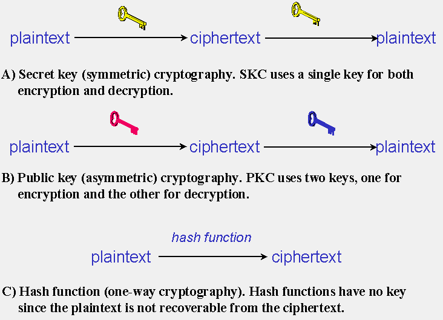
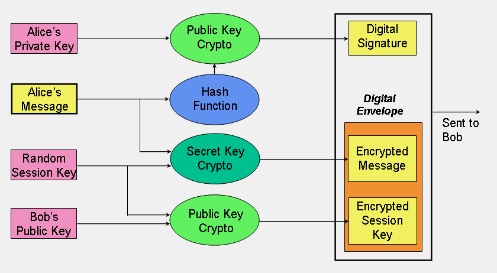
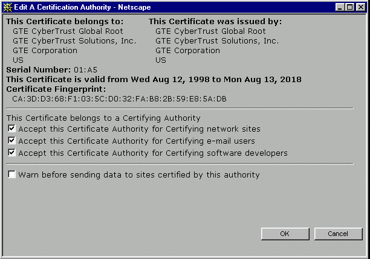
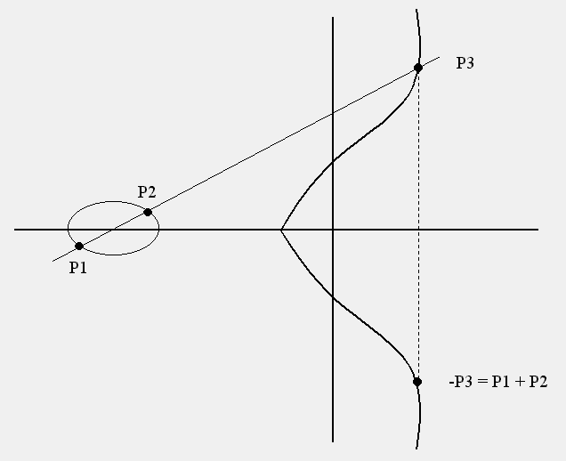
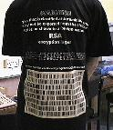

<html><head><title>An Overview of Cryptography</title>


<meta name="keywords" content="crypto tutorial, cryptography tutorial, DES tutorial, RSA tutorial, Diffie-Hellman tutorial, IPsec tutorial, PGP tutorial, SSL tutorial, ECC tutorial, elliptic curve cryptography tutorial, AES tutorial, Rijndael tutorial"></head><body bgcolor="#ffffff">
<font size="3">
</font><center>
<h1>
<font size="3"><font color="blue" face="arial">
An Overview of Cryptography
</font>
</font></h1>
<h3>
<font size="3"><i><a href="mailto:kumquat@sover.net">Gary C. Kessler</a></i><br>
May 1998<br>
(26 September 2005)
</font></h3>
<font size="3"><br>
</font><blockquote>
<h4>
<font size="3">A much shorter, edited version of this paper appears in the 1999 Edition of <i>Handbook on Local Area Networks</i>, published by Auerbach in September 1998. Since that time, this article has taken on a life of its own...
</font></h4>
</blockquote>
</center>

<hr>
<table align="center" border="0">
<tbody><tr>
<td valign="top" width="490">
<center><h3>CONTENTS</h3></center>
<ul>
<a href="#intro"><b>1. INTRODUCTION</b></a><br>
<a href="#purpose"><b>2. THE PURPOSE OF CRYPTOGRAPHY</b></a><br>
<a href="#types"><b>3. TYPES OF CRYPTOGRAPHIC ALGORITHMS</b></a><br>
<ul>
<a href="#skc">3.1. Secret Key Cryptography</a><br>
<a href="#pkc">3.2. Public-Key Cryptography</a><br>
<a href="#hash">3.3. Hash Functions</a><br>
<a href="#why3">3.4. Why Three Encryption Techniques?</a><br>
<a href="#keylen">3.5. The Significance of Key Length</a>
</ul>
<a href="#trust"><b>4. TRUST MODELS</b></a><br>
<ul>
<a href="#pgpweb">4.1. PGP Web of Trust</a><br>
<a href="#kerb">4.2. Kerberos</a><br>
<a href="#pkcca">4.3. Public Key Certificates and Certification Authorities</a><br>
<a href="#trustsumm">4.4. Summary</a><br>
</ul>
<a href="#algorithms"><b>5. CRYPTOGRAPHIC ALGORITHMS IN ACTION</b></a><br>

<ul>
<a href="#password">5.1. Password Protection</a><br>
<a href="#dhmath">5.2. Some of the Finer Details of Diffie-Hellman Key Exchange</a><br>
<a href="#rsamath">5.3. Some of the Finer Details of RSA Public-Key Cryptography</a><br>
<a href="#desmath">5.4. Some of the Finer Details of DES, Breaking DES, and DES Variants</a><br>
<a href="#pgp">5.5. Pretty Good Privacy (PGP)</a><br>
<a href="#ipsec">5.6. IP Security (IPsec) Protocol</a><br>
<a href="#ssl">5.7. The SSL "Family" of Secure Transaction Protocols for the World Wide Web</a><br>
<a href="#ecc">5.8. Elliptic Curve Cryptography</a><br>
<a href="#aes">5.9. The Advanced Encryption Standard and Rijndael</a><br>
<a href="#stream">5.10. Cisco's Stream Cipher</a><br>
</ul>
<a href="#conclusion"><b>6. CONCLUSION... OF SORTS</b></a><br>
<a href="#refs"><b>7. REFERENCES AND FURTHER READING</b></a><br>
<a href="#mathnotes"><b>A. SOME MATH NOTES</b></a><br>
<ul>
<a href="#xor">A.1. The Exclusive-OR (XOR) Function</a><br>
<a href="#modulo">A.2. The <i>modulo</i> Function</a><br>
</ul>
<a href="#author"><b>ABOUT THE AUTHOR</b></a><br>
</ul>

</td><td width="10">&nbsp;

</td><td valign="top" width="400">
<center><h3>FIGURES</h3></center>
<ol>
<li><a href="#fig01">Three types of cryptography: secret-key, public key, and hash function.</a>
</li><li><a href="#fig02">Sample application of the three cryptographic techniques for secure communication.</a>
</li><li><a href="#fig03">Kerberos architecture.</a>
</li><li><a href="#fig04">GTE Cybertrust Global Root-issued certificate (Netscape Navigator).</a>
</li><li><a href="#fig05">Sample entries in Unix/Linux password files.</a>
</li><li><a href="#fig06">DES enciphering algorithm.</a>
</li><li><a href="#fig07">A PGP signed message.</a>
</li><li><a href="#fig08">A PGP encrypted message.</a>
</li><li><a href="#fig09">The decrypted message.</a>
</li><li><a href="#fig10">IPsec Authentication Header format.</a>
</li><li><a href="#fig11">IPsec Encapsulating Security Payload format.</a>
</li><li><a href="#fig12">IPsec tunnel and transport modes for AH.</a>
</li><li><a href="#fig13">IPsec tunnel and transport modes for ESP.</a>
</li><li><a href="#fig14">SSL v3 configuration screen (Netscape Navigator).</a>
</li><li><a href="#fig15">SSL/TLS protocol handshake.</a>
</li><li><a href="#fig16">Elliptic curve addition.</a>
</li><li><a href="#fig17">AES pseudocode.</a>
</li></ol>
<center><h3>TABLES</h3></center>
<ol>
<li><a href="#tab01">Minimum Key Lengths for Symmetric Ciphers.</a>
</li><li><a href="#tab02">Contents of an X.509 V3 Certificate.</a>
</li><li><a href="#tab03">Other Crypto Algorithms and Systems of Note.</a>
</li><li><a href="#tab04">ECC and RSA Key Comparison.</a>
</li></ol>
</td></tr></tbody></table>
<hr>

<blockquote>
<font size="3"><br>
</font><center><h3><font size="3"><font color="blue" face="arial"><a name="intro">1. INTRODUCTION</a></font></font></h3></center>
<p>
<font size="3">Does increased security provide comfort to paranoid
people? Or does security provide some very basic protections that we
are naive to believe that we don't need? During this time when the
Internet provides essential communication between tens of millions of
people and is being increasingly used as a tool for commerce, security
becomes a tremendously important issue to deal with.
</font></p><p>
<font size="3">There are many aspects to security and many
applications, ranging from secure commerce and payments to private
communications and protecting passwords. One essential aspect for
secure communications is that of cryptography, which is the focus of
this chapter. But it is important to note that while cryptography is <i>necessary</i> for secure communications, it is not by itself <i>sufficient</i>.
The reader is advised, then, that the topics covered in this chapter
only describe the first of many steps necessary for better security in
any number of situations.
</font></p><p>
<font size="3">This paper has two major purposes. The first is to
define some of the terms and concepts behind basic cryptographic
methods, and to offer a way to compare the myriad cryptographic schemes
in use today. The second is to provide some real examples of
cryptography in use today.
</font></p><p>
<font size="3">I would like to say at the outset that this paper is very focused on terms, concepts, and schemes in <i>current</i>
use and is not a treatise of the whole field. No mention is made here
about pre-computerized crypto schemes, the difference between a
substitution and transposition cipher, cryptanalysis, or other history.
Interested readers should check out some of the books in the
bibliography below for this detailed &#8212; and interesting! &#8212; background
information.</font></p>

<font size="3"><br>
</font><center><h3><font size="3"><font color="blue" face="arial"><a name="purpose">2. THE PURPOSE OF CRYPTOGRAPHY</a></font></font></h3></center>
<p>
<font size="3">Cryptography is the science of writing in secret code
and is an ancient art; the first documented use of cryptography in
writing dates back to circa 1900 B.C. when an Egyptian scribe used
non-standard hieroglyphs in an inscription. Some experts argue that
cryptography appeared spontaneously sometime after writing was
invented, with applications ranging from diplomatic missives to
war-time battle plans. It is no surprise, then, that new forms of
cryptography came soon after the widespread development of computer
communications. In data and telecommunications, cryptography is
necessary when communicating over any untrusted medium, which includes
just about <i>any</i> network, particularly the Internet.</font></p>
<p>
<font size="3">Within the context of any application-to-application communication, there are some specific security requirements, including:</font></p>
<ul>
<font size="3"><li><i>Authentication:</i> The process of proving one's
identity. (The primary forms of host-to-host authentication on the
Internet today are name-based or address-based, both of which are
notoriously weak.)</li>
<li><i>Privacy/confidentiality:</i> Ensuring that no one can read the message except the intended receiver.</li>
<li><i>Integrity:</i> Assuring the receiver that the received message has not been altered in any way from the original.</li>
<li><i>Non-repudiation:</i> A mechanism to prove that the sender really sent this message.</li>
</font></ul>
<p>
<font size="3">Cryptography, then, not only protects data from theft or
alteration, but can also be used for user authentication. There are, in
general, three types of cryptographic schemes typically used to
accomplish these goals: secret key (or symmetric) cryptography,
public-key (or asymmetric) cryptography, and hash functions, each of
which is described below. In all cases, the initial unencrypted data is
referred to as <i>plaintext</i>. It is encrypted into <i>ciphertext</i>, which will in turn (usually) be decrypted into usable plaintext.</font></p>
<p>
<font size="3">In many of the descriptions below, two communicating
parties will be referred to as Alice and Bob; this is the common
nomenclature in the crypto field and literature to make it easier to
identify the communicating parties. If there is a third or fourth party
to the communication, they will be referred to as Carol and Dave.
Mallory is a malicious party, Eve is an eavesdropper, and Trent is a
trusted third party.</font></p>

<font size="3"><br>
</font><center><h3><font size="3"><font color="blue" face="arial"><a name="types">3. TYPES OF CRYPTOGRAPHIC ALGORITHMS</a></font></font></h3></center>
<p>
<font size="3">There are several ways of classifying cryptographic
algorithms. For purposes of this paper, they will be categorized based
on the number of keys that are employed for encryption and decryption,
and further defined by their application and use. The three types of
algorithms that will be discussed are (Figure 1):
</font></p><ul>
<font size="3"><li>Secret Key Cryptography (SKC): Uses a single key for both encryption and decryption
</li><li>Public Key Cryptography (PKC): Uses one key for encryption and another for decryption
</li><li>Hash Functions: Uses a mathematical transformation to irreversibly "encrypt" information
</li></font></ul>
<font size="3"><a name="fig01"></a><br>
</font><center><table border="1"><tbody><tr><td>

<br><br>
<h4>FIGURE 1: Three types of cryptography: secret-key, public key, and hash function.</h4>
</td></tr></tbody></table>
</center>

<font size="3"><br><br>
<a name="skc"><h3>3.1. Secret Key Cryptography</h3></a>
</font><p>
<font size="3">With <i>secret key cryptography</i>, a single key is
used for both encryption and decryption. As shown in Figure 1A, the
sender uses the key (or some set of rules) to encrypt the plaintext and
sends the ciphertext to the receiver. The receiver applies the same key
(or ruleset) to decrypt the message and recover the plaintext. Because
a single key is used for both functions, secret key cryptography is
also called <i>symmetric encryption</i>.</font></p>
<p>
<font size="3">With this form of cryptography, it is obvious that the
key must be known to both the sender and the receiver; that, in fact,
is the secret. The biggest difficulty with this approach, of course, is
the distribution of the key.</font></p>
<p>
<font size="3">Secret key cryptography schemes are generally categorized as being either <i>stream ciphers</i> or <i>block ciphers</i>.
Stream ciphers operate on a single bit (byte or computer word) at a
time and implement some form of feedback mechanism so that the key is
constantly changing. A block cipher is so-called because the scheme
encrypts one block of data at a time using the same key on each block.
In general, the same plaintext block will always encrypt to the same
ciphertext when using the same key in a block cipher whereas the same
plaintext will encrypt to different ciphertext in a stream cipher.</font></p>
<p>
<font size="3">Stream ciphers come in several flavors but two are worth mentioning here. <i>Self-synchronizing stream ciphers</i> calculate each bit in the keystream as a function of the previous <i>n</i>
bits in the keystream. It is termed "self-synchronizing" because the
decryption process can stay synchronized with the encryption process
merely by knowing how far into the <i>n</i>-bit keystream it is. One problem is error propagation; a garbled bit in transmission will result in <i>n</i> garbled bits at the receiving side. <i>Synchronous stream ciphers</i>
generate the keystream in a fashion independent of the message stream
but by using the same keystream generation function at sender and
receiver. While stream ciphers do not propagate transmission errors,
they are, by their nature, periodic so that the keystream will
eventually repeat.</font></p>
<p>
<font size="3">Block ciphers can operate in one of several modes; the following four are the most important:</font></p>
<ul>
<font size="3"><li><i>Electronic Codebook (ECB) mode</i> is the
simplest, most obvious application: the secret key is used to encrypt
the plaintext block to form a ciphertext block. Two identical plaintext
blocks, then, will always generate the same ciphertext block. Although
this is the most common mode of block ciphers, it is susceptible to a
variety of brute-force attacks.</li>
<li><i>Cipher Block Chaining (CBC) mode</i> adds a feedback mechanism
to the encryption scheme. In CBC, the plaintext is exclusively-ORed
(XORed) with the previous ciphertext block prior to encryption. In this
mode, two identical blocks of plaintext never encrypt to the same
ciphertext.</li>
<li><i>Cipher Feedback (CFB) mode</i> is a block cipher implementation
as a self-synchronizing stream cipher. CFB mode allows data to be
encrypted in units smaller than the block size, which might be useful
in some applications such as encrypting interactive terminal input. If
we were using 1-byte CFB mode, for example, each incoming character is
placed into a shift register the same size as the block, encrypted, and
the block transmitted. At the receiving side, the ciphertext is
decrypted and the extra bits in the block (i.e., everything above and
beyond the one byte) are discarded.</li>
<li><i>Output Feedback (OFB) mode</i> is a block cipher implementation
conceptually similar to a synchronous stream cipher. OFB prevents the
same plaintext block from generating the same ciphertext block by using
an internal feedback mechanism that is independent of both the
plaintext and ciphertext bitstreams.</li>
</font></ul>

<p>
<font size="3">Secret key cryptography algorithms that are in use today include:</font></p>
<ul>
<font size="3"><li> <p><i>Data Encryption Standard (DES):</i> The most
common SKC scheme used today, DES was designed by IBM in the 1970s and
adopted by the National Bureau of Standards (NBS) [now the National
Institute for Standards and Technology (NIST)] in 1977 for commercial
and unclassified government applications. DES is a block-cipher
employing a 56-bit key that operates on 64-bit blocks. DES has a
complex set of rules and transformations that were designed
specifically to yield fast hardware implementations and slow software
implementations, although this latter point is becoming less
significant today since the speed of computer processors is several
orders of magnitude faster today than twenty years ago. IBM also
proposed a 112-bit key for DES, which was rejected at the time by the
government; the use of 112-bit keys was considered in the 1990s,
however, conversion was never seriously considered.</p>
<p>
DES is defined in American National Standard X3.92 and three Federal Information Processing Standards (FIPS):</p>
<ul>
<li><a href="http://csrc.nist.gov/publications/fips/fips46-3/fips46-3.pdf"> FIPS 46-3: DES</a></li>
<li><a href="http://www.itl.nist.gov/div897/pubs/fip74.htm">FIPS 74: Guidelines for Implementing and Using the NBS Data Encryption Standard</a></li>
<li><a href="http://www.itl.nist.gov/div897/pubs/fip81.htm">FIPS 81: DES Modes of Operation</a></li>
</ul>
<p>
Information about vulnerabilities of DES can be obtained from the <a href="http://www.eff.org/pub/Privacy/Crypto_misc/DES_Cracking">Electronic Frontier Foundation</a>.</p>
<p>
Two important variants that strengthen DES are:</p>
<ul>
<li> <p><i>Triple-DES (3DES):</i> A variant of DES that employs up to
three 56-bit keys and makes three encryption/decryption passes over the
block; 3DES is also described in <a href="http://csrc.nist.gov/publications/fips/fips46-3/fips46-3.pdf"> FIPS 46-3</a> and is the recommended replacement to DES.</p></li>
<li> <p><i><a href="http://www.rsasecurity.com/rsalabs/node.asp?id=2232">DESX</a>:</i>
A variant devised by Ron Rivest. By combining 64 additional key bits to
the plaintext prior to encryption, effectively increases the keylength
to 120 bits.</p></li>
</ul>
<p>
More detail about DES, 3DES, and DESX can be found below in <a href="#desmath">Section 5.4</a>.</p></li>

<li> <p><i>Advanced Encryption Standard (AES):</i> In 1997, NIST
initiated a very public, 4-1/2 year process to develop a new secure
cryptosystem for U.S. government applications. The result, the <a href="http://www.nist.gov/aes">Advanced Encryption Standard</a>, became the official successor to DES in December 2001. AES uses an SKC scheme called <a href="http://www.esat.kuleuven.ac.be/%7Erijmen/rijndael/index.html"> Rijndael</a>,
a block cipher designed by Belgian cryptographers Joan Daemen and
Vincent Rijmen. The algorithm can use a variable block length and key
length; the latest specification allowed any combination of keys
lengths of 128, 192, or 256 bits and blocks of length 128, 192, or 256
bits. NIST initially selected Rijndael in October 2000 and formal
adoption as the AES standard came in December 2001. <a href="http://csrc.nist.gov/publications/fips/fips197/fips-197.pdf">FIPS PUB 197</a>
describes a 128-bit block cipher employing a 128-, 192-, or 256-bit
key. The AES process and Rijndael algorithm are described in more
detail below in <a href="#aes">Section 5.9</a>.</p></li>

<li> <p><i>CAST-128/256:</i> CAST-128, described in <a href="http://www.rfc-editor.org/rfc/rfc2144.txt">Request for Comments (RFC) 2144</a>, is a DES-like substitution-permutation crypto algorithm, employing a 128-bit key operating on a 64-bit block. <a href="http://www.entrust.com/resources/pdf/cast-256.pdf">CAST-256</a> (<a href="http://www.rfc-editor.org/rfc/rfc2612.txt">RFC 2612</a>)
is an extension of CAST-128, using a 128-bit block size and a variable
length (128, 160, 192, 224, or 256 bit) key. CAST is named for its
developers, Carlisle Adams and Stafford Tavares and is available
internationally. CAST-256 was one of the Round 1 algorithms in the AES
process.</p></li>

<li> <p><i><a href="http://home.ecn.ab.ca/%7Ejsavard/crypto/co0404.htm">International Data Encryption Algorithm (IDEA)</a>:</i>
Secret-key cryptosystem written by Xuejia Lai and James Massey, in 1992
and patented by Ascom; a 64-bit SKC block cipher using a 128-bit key.
Also available internationally.</p></li>

<li> <p><i>Rivest Ciphers (</i>aka<i> Ron's Code):</i> Named for Ron Rivest, a series of SKC algorithms.</p>
<ul>
<li> <p><i>RC1:</i> Designed on paper but never implemented.</p></li>
<li> <p><i>RC2:</i> A 64-bit block cipher using variable-sized keys
designed to replace DES. It's code has not been made public although
many companies have licensed RC2 for use in their products. Described
in <a href="http://www.rfc-editor.org/rfc/rfc2268.txt">RFC 2268</a>.</p></li>
<li> <p><i>RC3:</i> Found to be breakable during development.</p></li>
<li> <p><i><a href="http://ciphersaber.gurus.com/">RC4</a>:</i> A
stream cipher using variable-sized keys; it is widely used in
commercial cryptography products, although it can only be exported
using keys that are 40 bits or less in length.</p><p>
</p></li><li> <p><i>RC5:</i> A block-cipher supporting a variety of block sizes, key sizes, and number of encryption passes over the data. Described in <a href="http://www.rfc-editor.org/rfc/rfc2040.txt">RFC 2040</a>.</p></li>
<li> <p><i><a href="http://www.rsasecurity.com/rsalabs/node.asp?id=2512">RC6</a>:</i> An improvement over RC5, RC6 was one of the AES Round 2 algorithms.</p></li>
</ul>

</li><li> <p><i><a href="http://www.counterpane.com/blowfish.html">Blowfish</a>:</i>
A symmetric 64-bit block cipher invented by Bruce Schneier; optimized
for 32-bit processors with large data caches, it is significantly
faster than DES on a Pentium/PowerPC-class machine. Key lengths can
vary from 32 to 448 bits in length. Blowfish, available freely and
intended as a substitute for DES or IDEA, is in use in over 80 products.</p></li>

<li> <p><i><a href="http://www.counterpane.com/twofish.html">Twofish</a>:</i>
A 128-bit block cipher using 128-, 192-, or 256-bit keys. Designed to
be highly secure and highly flexible, well-suited for large
microprocessors, 8-bit smart card microprocessors, and dedicated
hardware. Designed by a team led by Bruce Schneier and was one of the
Round 2 algorithms in the AES process.</p></li>

<li> <p><i><a href="http://info.isl.ntt.co.jp/camellia/Publications/camellia.pdf">Camellia</a>:</i>
A secret-key, block-cipher crypto algorithm developed jointly by Nippon
Telegraph and Telephone (NTT) Corp. and Mitsubishi Electric Corporation
(MEC) in 2000. Camellia has some characteristics in common with AES: a
128-bit block size, support for 128-, 192-, and 256-bit key lengths,
and suitability for both software and hardware implementations on
common 32-bit processors as well as 8-bit processors (e.g., smart
cards, cryptographic hardware, and embedded systems). Also described in
<a href="http://www.rfc-editor.org/rfc/rfc3713.txt"> RFC 3713</a>.</p></li>

<li> <p><i>MISTY1:</i> Developed at Mitsubishi Electric Corp., a block
cipher using a 128-bit key and 64-bit blocks, and a variable number of
rounds. Designed for hardware and software implementations, and is
resistant to differential and linear cryptanalysis. Described in <a href="http://www.rfc-editor.org/rfc/rfc2994.txt">RFC 2994</a>.</p></li>

<li> <p><i><a href="http://fn2.freenet.edmonton.ab.ca/%7Ejsavard/co0403.html">Secure and Fast Encryption Routine (SAFER)</a>:</i> Secret-key crypto scheme designed for implementation in software. Versions have been defined for 40-, 64-, and 128-bit keys.</p></li>

<li> <p><i><a href="http://networking.champlain.edu/download/3G_KASUMI.pdf">KASUMI</a>:</i>
A block cipher using a 128-bit key that is part of the Third-Generation
Partnership Project (3gpp), formerly known as the Universal Mobile
Telecommunications System (UMTS). KASUMI is the intended
confidentiality and integrity algorithm for both message content and
signaling data for emerging mobile communications systems.</p></li>

<li> <p><i><a href="http://www.kisa.or.kr/seed/seed_eng.html">SEED</a>:</i>
A block cipher using 128-bit blocks and 128-bit keys. Developed by the
Korea Information Security Agency (KISA) and adopted as a national
standard encryption algorithm in South Korea. Also described in <a href="http://www.rfc-editor.org/rfc/rfc4009.txt">RFC 4009</a>.</p></li>

<li> <p><i><a href="http://csrc.nist.gov/CryptoToolkit/skipjack/skipjack.pdf">Skipjack</a>:</i>
SKC scheme proposed for Capstone. Although the details of the algorithm
were never made public, Skipjack was a block cipher using an 80-bit key
and 32 iteration cycles per 64-bit block.</p></li>
</font></ul>

<font size="3"><a name="pkc"><h3>3.2. Public-Key Cryptography</h3></a>
</font><p>
<font size="3"><i>Public-key cryptography</i> has been said to be the
most significant new development in cryptography in the last 300-400
years. Modern PKC was first described publicly by Stanford University
professor Martin Hellman and graduate student Whitfield Diffie in 1976.
Their paper described a two-key crypto system in which two parties
could engage in a secure communication over a non-secure communications
channel without having to share a secret key.</font></p>
<p>
<font size="3">PKC depends upon the existence of so-called <i>one-way functions</i>,
or mathematical functions that are easy to computer whereas their
inverse function is relatively difficult to compute. Let me give you
two simple examples:</font></p>
<ol>
<font size="3"><li><i>Multiplication vs. factorization:</i> Suppose I
tell you that I have two numbers, 9 and 16, and that I want to
calculate the product; it should take almost no time to calculate the
product, 144. Suppose instead that I tell you that I have a number,
144, and I need you tell me which pair of integers I multiplied
together to obtain that number. You will eventually come up with the
solution but whereas calculating the product took milliseconds,
factoring will take longer because you first need to find the 8 pair of
integer factors and then determine which one is the correct pair.</li>
<li><i>Exponentiation vs. logarithms:</i> Suppose I tell you that I want to take the number 3 to the 6th power; again, it is easy to calculate 3<sup>6</sup>=729. But if I tell you that I have the number 729 and want you to tell me the two integers that I used, <i>x</i> and <i>y</i> so that log<sub>x</sub>&nbsp;729 = y, it will take you longer to find all possible solutions and select the pair that I used.</li>
</font></ol>
<p>
<font size="3">While the examples above are trivial, they do represent
two of the functional pairs that are used with PKC; namely, the ease of
multiplication and exponentiation versus the relative difficulty of
factoring and calculating logarithms, respectively. The mathematical
"trick" in PKC is to find a <i>trap door</i> in the one-way function so that the inverse calculation becomes easy given knowledge of some item of information.</font></p>
<p>
<font size="3">Generic PKC employs two keys that are mathematically
related although knowledge of one key does not allow someone to easily
determine the other key. One key is used to encrypt the plaintext and
the other key is used to decrypt the ciphertext. The important point
here is that it <b>does not matter which key is applied first</b>, but
that both keys are required for the process to work (Figure 1B).
Because a pair of keys are required, this approach is also called <i>asymmetric cryptography</i>.</font></p>
<p>
<font size="3">In PKC, one of the keys is designated the <i>public key</i> and may be advertised as widely as the owner wants. The other key is designated the <i>private key</i>
and is never revealed to another party. It is straight forward to send
messages under this scheme. Suppose Alice wants to send Bob a message.
Alice encrypts some information using Bob's public key; Bob decrypts
the ciphertext using his private key. This method could be also used to
prove who sent a message; Alice, for example, could encrypt some
plaintext with her private key; when Bob decrypts using Alice's public
key, he knows that Alice sent the message and Alice cannot deny having
sent the message (<i>non-repudiation</i>).</font></p>

<p>
<font size="3">Public-key cryptography algorithms that are in use today for key exchange or digital signatures include:</font></p>
<ul>
<font size="3"><li> <p><i>RSA:</i> The first, and still most common,
PKC implementation, named for the three MIT mathematicians who
developed it &#8212; Ronald Rivest, Adi Shamir, and Leonard Adleman. RSA
today is used in hundreds of software products and can be used for key
exchange, digital signatures, or encryption of small blocks of data.
RSA uses a variable size encryption block and a variable size key. The
key-pair is derived from a very large number, <i>n</i>, that is the
product of two prime numbers chosen according to special rules; these
primes may be 100 or more digits in length each, yielding an <i>n</i> with roughly twice as many digits as the prime factors. The public key information includes <i>n</i> and a derivative of one of the factors of <i>n</i>; an attacker cannot determine the prime factors of <i>n</i>
(and, therefore, the private key) from this information alone and that
is what makes the RSA algorithm so secure. (Some descriptions of PKC
erroneously state that RSA's safety is due to the difficulty in <i>factoring</i>
large prime numbers. In fact, large prime numbers, like small prime
numbers, only have two factors!) The ability for computers to factor
large numbers, and therefore attack schemes such as RSA, is rapidly
improving and systems today can find the prime factors of numbers with
more than 140 digits. The presumed protection of RSA, however, is that
users can easily increase the key size to always stay ahead of the
computer processing curve. As an aside, the patent for RSA expired in
September 2000 which does not appear to have affected RSA's popularity
one way or the other. A detailed example of RSA is presented below in <a href="#rsamath">Section 5.3</a>.</p></li>

<li> <p><i><a href="http://www.rsasecurity.com/rsalabs/faq/3-6-1.html">Diffie-Hellman</a>:</i>
After the RSA algorithm was published, Diffie and Hellman came up with
their own algorithm. D-H is used for secret-key key exchange only, and
not for authentication or digital signatures. More detail about
Diffie-Hellman can be found below in <a href="#dhmath">Section 5.2</a>.</p></li>

<li> <p><i><a href="http://www.nist.gov/public_affairs/releases/digsigst.htm">Digital Signature Algorithm (DSA)</a>:</i>
The algorithm specified in NIST's Digital Signature Standard (DSS),
provides digital signature capability for the authentication of
messages.</p></li>

<li> <p><i><a href="http://www.iusmentis.com/technology/encryption/elgamal/">ElGamal</a>:</i> Designed by Taher Elgamal, a PKC system similar to Diffie-Hellman and used for key exchange.</p></li>

<li> <p><i>Elliptic Curve Cryptography (ECC):</i> A PKC algorithm based
upon elliptic curves. ECC can offer levels of security with small keys
comparable to RSA and other PKC methods. It was designed for devices
with limited compute power and/or memory, such as smartcards and PDAs.
More detail about ECC can be found below in <a href="#ecc">Section 5.8</a>. Other references include <a href="http://www.certicom.com/index.php?action=res,ecc_intro_home"> "The Importance of ECC"</a> Web page and the <a href="http://www.certicom.com/index.php?action=ecc_tutorial,home"> "Online Elliptic Curve Cryptography Tutorial"</a>, both from Certicom.</p></li>

<li> <p><i><a href="http://www.rsasecurity.com/rsalabs/node.asp?id=2124">Public-Key Cryptography Standards (PKCS)</a>:</i> A set of interoperable standards and guidelines for public-key cryptography, designed by RSA Data Security Inc.
</p><ul>
<li><a href="http://www.rsasecurity.com/rsalabs/node.asp?id=2125">PKCS #1</a>: RSA Cryptography Standard (Also <a href="http://www.rfc-editor.org/rfc/rfc3447.txt">RFC 3447</a>)</li>
<li>PKCS #2: <i>Incorporated into PKCS #1.</i></li>
<li><a href="http://www.rsasecurity.com/rsalabs/node.asp?id=2126">PKCS #3</a>: Diffie-Hellman Key-Agreement Standard</li>
<li>PKCS #4: <i>Incorporated into PKCS #1.</i></li>
<li><a href="http://www.rsasecurity.com/rsalabs/node.asp?id=2127">PKCS #5</a>: Password-Based Cryptography Standard (PKCS #5 V2.0 is also <a href="http://www.rfc-editor.org/rfc/rfc2898.txt">RFC 2898</a>)</li>
<li><a href="http://www.rsasecurity.com/rsalabs/node.asp?id=2128">PKCS #6</a>: Extended-Certificate Syntax Standard (being phased out in favor of X.509v3)</li>
<li><a href="http://www.rsasecurity.com/rsalabs/node.asp?id=2129">PKCS #7</a>: Cryptographic Message Syntax Standard (Also <a href="http://www.rfc-editor.org/rfc/rfc2315.txt">RFC 2315</a>)</li>
<li><a href="http://www.rsasecurity.com/rsalabs/node.asp?id=2130">PKCS #8</a>: Private-Key Information Syntax Standard</li>
<li><a href="http://www.rsasecurity.com/rsalabs/node.asp?id=2131">PKCS #9</a>: Selected Attribute Types (Also <a href="http://www.rfc-editor.org/rfc/rfc2985.txt">RFC 2985</a>)</li>
<li><a href="http://www.rsasecurity.com/rsalabs/node.asp?id=2132">PKCS #10</a>: Certification Request Syntax Standard (Also <a href="http://www.rfc-editor.org/rfc/rfc2986.txt">RFC 2986</a>)</li>
<li><a href="http://www.rsasecurity.com/rsalabs/node.asp?id=2133">PKCS #11</a>: Cryptographic Token Interface Standard</li>
<li><a href="http://www.rsasecurity.com/rsalabs/node.asp?id=2138">PKCS #12</a>: Personal Information Exchange Syntax Standard</li>
<li><a href="http://www.rsasecurity.com/rsalabs/node.asp?id=2139">PKCS #13</a>: Elliptic Curve Cryptography Standard</li>
<li>PKCS #14: <i>Pseudorandom Number Generation Standard is no longer available</i></li>

<li><a href="http://www.rsasecurity.com/rsalabs/node.asp?id=2141">PKCS #15</a>: Cryptographic Token Information Format Standard</li>
</ul>

</li><li> <p><i><a href="http://www.zurich.ibm.com/Technology/Security/publications/1998/CS.pdf">Cramer-Shoup</a>:</i> A public-key cryptosystem proposed by R. Cramer and V. Shoup of IBM in 1998.</p></li>

<li> <p><i><a href="http://csrc.nist.gov/CryptoToolkit/skipjack/skipjack.pdf">Key Exchange Algorithm (KEA)</a>:</i> A variation on Diffie-Hellman; proposed as the key exchange method for Capstone.</p></li>

<li> <p><i><a href="http://www.kisa.or.kr/technology/sub1/LUC.htm">LUC</a>:</i>
A public-key cryptosystem designed by P.J. Smith and based on Lucas
sequences. Can be used for encryption and signatures, using integer
factoring.</p></li>
</font></ul>

<p>
<font size="3">For additional information on PKC algorithms, see <a href="http://networking.champlain.edu/download/hac_chap08.pdf"> "Public-Key Encryption"</a>, Chapter 8 in <i>Handbook of Applied Cryptography</i>, by A. Menezes, P. van Oorschot, and S. Vanstone (CRC Press, 1996).</font></p>

<hr align="center" width="50%">
<blockquote>
<p>
<font size="3"><b>A digression: Who invented PKC?</b> I tried to be
careful in the first paragraph of this section to state that Diffie and
Hellman "first described publicly" a PKC scheme. Although I have
categorized PKC as a two-key system, that has been merely for
convenience; the real criteria for a PKC scheme is that it allows two
parties to exchange a secret even though the communication with the
shared secret might be overheard. There seems to be no question that
Diffie and Hellman were first to publish; their method is described in
the classic paper, "New Directions in Cryptography," published in the
November 1976 issue of <i>IEEE Transactions on Information Theory</i>.
As shown below, Diffie-Hellman uses the idea that finding logarithms is
relatively harder than exponentiation. And, indeed, it is the precursor
to modern PKC which does employ two keys. Rivest, Shamir, and Adleman
described an implementation that extended this idea in their paper "A
Method for Obtaining Digital Signatures and Public-Key Cryptosystems,"
published in the February 1978 issue of the <i>Communications of the ACM (CACM)</i>.
Their method, of course, is based upon the relative ease of finding the
product of two large prime numbers compared to finding the prime
factors of a large number.</font></p>
<p>
<font size="3">Some sources, though, credit Ralph Merkle with first
describing a system that allows two parties to share a secret although
it was not a two-key system, per se. A <i>Merkle Puzzle</i> works
where Alice creates a large number of encrypted keys, sends them all to
Bob so that Bob chooses one at random and then lets Alice know which he
has selected. An eavesdropper will see all of the keys but can't learn
which key Bob has selected (because he has encrypted the response with
the chosen key). In this case, Eve's effort to break in is the square
of the effort of Bob to choose a key. While this difference may be
small it is often sufficient. Merkle apparently took a computer science
course at UC Berkeley in 1974 and described his method, but had
difficulty making people understand it; frustrated, he dropped the
course. Meanwhile, he submitted the paper "Secure Communication Over
Insecure Channels" which was published in the <i>CACM</i> in April
1978; Rivest et al.'s paper even makes reference to it. Merkle's method
certainly wasn't published first, but did he have the idea first?</font></p>
<p>
<font size="3">An interesting question, maybe, but who really knows?
For some time, it was a quiet secret that a team at the UK's Government
Communications Headquarters (GCHQ) had first developed PKC in the early
1970s. Because of the nature of the work, GCHQ kept the original memos
classified. In 1997, however, the GCHQ changed their posture when they
realized that there was nothing to gain by continued silence. Documents
show that a GCHQ mathematician named James Ellis started research into
the key distribution problem in 1969 and that by 1975, Ellis, Clifford
Cocks, and Malcolm Williamson had worked out all of the fundamental
details of PKC, yet couldn't talk about their work. (They were, of
course, barred from challenging the RSA patent!) After more than 20
years, Ellis, Cocks, and Williamson have begun to get their due credit.</font></p>
<p>
<font size="3">And the National Security Agency (NSA) claims to have
knowledge of this type of algorithm as early as 1966 but there is no
supporting documentation... yet. So this really was a digression...</font></p>
</blockquote>
<hr align="center" width="50%">

<font size="3"><a name="hash"><h3>3.3. Hash Functions</h3></a>
</font><p>
<font size="3"><i>Hash functions</i>, also called <i>message digests</i> and <i>one-way encryption</i>,
are algorithms that, in some sense, use no key (Figure 1C). Instead, a
fixed-length hash value is computed based upon the plaintext that makes
it impossible for either the contents or length of the plaintext to be
recovered. Hash algorithms are typically used to provide a <i>digital fingerprint</i>
of a file's contents, often used to ensure that the file has not been
altered by an intruder or virus. Hash functions are also commonly
employed by many operating systems to encrypt passwords. Hash
functions, then, help preserve the integrity of a file.</font></p>
<p>
<font size="3">Hash functions are sometimes misunderstood and some
sources claim that no two files can have the same hash value. This
isn't true, strictly speaking. Consider a hash function that provides a
128-bit hash value. There are, obviously, 2<sup>128</sup> possible hash values. But there are a lot more than 2<sup>128</sup> <i>possible</i>
files. Therefore, there have to be multiple files &#8212; in fact, there have
to be an infinite number of files! &#8212; that can have the same 128-bit
hash value. The difficulty is <i>finding</i> two files with the same
hash! What is, indeed, very hard to do is to try to create a file that
has a given hash value so as to force a hash value collision.</font></p>

<p>
<font size="3">Hash algorithms that are in common use today include:</font></p>
<ul>
<font size="3"><li> <p><i>Message Digest (MD) algorithms:</i> A series of byte-oriented algorithms that produce a 128-bit hash value from an arbitrary-length message.</p>
<ul>
<li> <p><i>MD2 (<a href="http://www.rfc-editor.org/rfc/rfc1319.txt">RFC 1319</a>):</i> Designed for systems with limited memory, such as smart cards.</p></li>
<li> <p><i>MD4 (<a href="http://www.rfc-editor.org/rfc/rfc1320.txt">RFC 1320</a>):</i> Developed by Rivest, similar to MD2 but designed specifically for fast processing in software.</p></li>
<li> <p><i>MD5 (<a href="http://www.rfc-editor.org/rfc/rfc1321.txt">RFC 1321</a>:</i>
Also developed by Rivest after potential weaknesses were reported in
MD4; this scheme is similar to MD4 but is slower because more
manipulation is made to the original data. MD5 has been implemented in
a large number of products although several weaknesses in the algorithm
were demonstrated by German cryptographer Hans Dobbertin in 1996.</p></li>
</ul>

</li><li> <p><i>Secure Hash Algorithm (SHA):</i> Algorithm for NIST's
Secure Hash Standard (SHS). SHA-1 produces a 160-bit hash value and was
originally published as FIPS 180-1 and <a href="ftp://ftp.rfc-editor.org/in-notes/rfc3174.txt"> RFC 3174</a>. <a href="http://csrc.nist.gov/publications/fips/fips180-2/fips180-2withchangenotice.pdf"> FIPS 180-2</a>
describes five algorithms in the SHS: SHA-1 plus SHA-224, SHA-256,
SHA-384, and SHA-512 which can produce hash values that are 224, 256,
384, or 512 bits in length, respectively.</p></li>

<li> <p><i><a href="http://www.esat.kuleuven.ac.be/%7Ebosselae/ripemd160.html">RIPEMD</a>:</i> A series of message digests that initially came from the RIPE (RACE Integrity Primitives Evaluation) project. <a href="http://www.esat.kuleuven.ac.be/%7Ecosicart/pdf/AB-9601/AB-9601.pdf">RIPEMD-160</a>
was designed by Hans Dobbertin, Antoon Bosselaers, and Bart Preneel,
and optimized for 32-bit processors to replace the then-current 128-bit
hash functions. Other versions include RIPEMD-256, RIPEMD-320, and
RIPEMD-128.</p></li>

<li> <p><i><a href="http://www.calyptix.com/technology/haval.php">HAVAL (HAsh of VAriable Length)</a>:</i>
Designed by Y. Zheng, J. Pieprzyk and J. Seberry, a hash algorithm with
many levels of security. HAVAL can create hash values that are 128,
160, 192, 224, or 256 bits in length.</p></li>
</font></ul>
<p>
<font size="3">For additional information, see David Hopwood's <a href="http://www.users.zetnet.co.uk/hopwood/crypto/scan/md.html"> MessageDigest Algorithms</a> page.</font></p>

<font size="3"><a name="why3"><h3>3.4. Why Three Encryption Techniques?</h3></a>
</font><p>
<font size="3">So, why are there so many different types of cryptographic schemes? Why can't we do everything we need with just one?
</font></p><p>
<font size="3">The answer is that each scheme is optimized for some
specific application(s). Hash functions, for example, are well-suited
for ensuring data integrity because any change made to the contents of
a message will result in the receiver calculating a different hash
value than the one placed in the transmission by the sender. Since it
is highly unlikely that two different messages will yield the same hash
value, data integrity is ensured to a high degree of confidence.
</font></p><p>
<font size="3">Secret key cryptography, on the other hand, is ideally suited to encrypting messages. The sender can generate a <i>session key</i> on a per-message basis to encrypt the message; the receiver, of course, needs the same session key to decrypt the message.
</font></p><p>
<font size="3">Key exchange, of course, is a key application of
public-key cryptography (no pun intended). Asymmetric schemes can also
be used for non-repudiation; if the receiver can obtain the session key
encrypted with the sender's private key, then only this sender could
have sent the message. Public-key cryptography could, theoretically,
also be used to encrypt messages although this is rarely done because
secret-key cryptography operates about 1000 times faster than
public-key cryptography.
</font></p>
<font size="3"><a name="fig02"></a><br>
</font><center><table border="1"><tbody><tr><td>

<br><br>
<h4>FIGURE 2: Sample application of the three cryptographic techniques for secure communication.</h4>
</td></tr></tbody></table>
</center>
<font size="3"><br>
</font><p>
<font size="3">Figure 2 puts all of this together and shows how a <i>hybrid cryptographic</i> scheme combines all of these functions to form a secure transmission comprising <i>digital signature</i> and <i>digital envelope</i>. In this example, the sender of the message is Alice and the receiver is Bob.
</font></p><p>
<font size="3">A digital envelope comprises an encrypted message and an
encrypted session key. Alice uses secret key cryptography to encrypt
her message using the <i>session key</i>, which she generates at
random with each session. Alice then encrypts the session key using
Bob's public key. The encrypted message and encrypted session key
together form the digital envelope. Upon receipt, Bob recovers the
session secret key using his private key and then decrypts the
encrypted message.
</font></p><p>
<font size="3">The digital signature is formed in two steps. First,
Alice computes the hash value of her message; next, she encrypts the
hash value with her private key. Upon receipt of the digital signature,
Bob recovers the hash value calculated by Alice by decrypting the
digital signature with Alice's public key. Bob can then apply the hash
function to Alice's original message, which he has already decrypted
(see previous paragraph). If the resultant hash value is not the same
as the value supplied by Alice, then Bob knows that the message has
been altered; if the hash values are the same, Bob should believe that
the message he received is identical to the one that Alice sent.
</font></p><p>
<font size="3">This scheme also provides nonrepudiation since it proves
that Alice sent the message; if the hash value recovered by Bob using
Alice's public key proves that the message has not been altered, then
only Alice could have created the digital signature. Bob also has proof
that he is the intended receiver; if he can correctly decrypt the
message, then he must have correctly decrypted the session key meaning
that his is the correct private key.</font></p>

<font size="3"><a name="keylen"><h3>3.5. The Significance of Key Length</h3></a>
</font><p>
<font size="3">In a recent article in the industry literature (circa
9/98), a writer made the claim that 56-bit keys do not provide as
sufficient protection for DES today as they did in 1975 because
computers are 1000 times faster today than in 1975. Therefore, the
writer went on, we should be using 56,000-bit keys today instead of
56-bit keys to provide adequate protection. The conclusion was then
drawn that because 56,000-bit keys are infeasible (<i>true</i>), we should accept the fact that we have to live with weak cryptography (<i>false!</i>).
The major error here is that the writer did not take into account that
the number of possible key values double whenever a single bit is added
to the key length; thus, a 57-bit key has twice as many values as a
56-bit key (because 2<sup>57</sup> is two times 2<sup>56</sup>). In fact, a 66-bit key would have 1024 times the possible values as a 56-bit key.</font></p>

<p>
<font size="3">But this does bring up the issue, what is the precise significance of key length as it affects the level of protection?</font></p>
<p>
<font size="3">In cryptography, size does matter. The larger the key,
the harder it is to crack a block of encrypted data. The reason that
large keys offer more protection is almost obvious; computers have made
it easier to attack ciphertext by using brute force methods rather than
by attacking the mathematics (which are generally well-known anyway).
With a brute force attack, the attacker merely generates every possible
key and applies it to the ciphertext. Any resulting plaintext that
makes sense offers a candidate for a legitimate key. This was the
basis, of course, of the EFF's attack on DES.</font></p>
<p>
<font size="3">Until the mid-1990s or so, brute force attacks were
beyond the capabilities of computers that were within the budget of the
attacker community. Today, however, significant compute power is
commonly available and accessible. General purpose computers such as
PCs are already being used for brute force attacks. For serious
attackers with money to spend, such as some large companies or
governments, Field Programmable Gate Array (FPGA) or
Application-Specific Integrated Circuits (ASIC) technology offers the
ability to build specialized chips that can provide even faster and
cheaper solutions than a PC. Consider that an AT&amp;T ORCA chip (FPGA)
costs $200 and can test 30 million DES keys per second, while a $10
ASIC chip can test 200 million DES keys per second (compared to a PC
which might be able to test 40,000 keys per second).</font></p>
<p>
<font size="3">The table below shows what DES key sizes are needed to
protect data from attackers with different time and financial
resources. This information is not merely academic; one of the basic
tenets of any security system is to have an idea of <i>what</i> you are protecting and <i>from who</i>
are you protecting it! The table clearly shows that a 40-bit key is
essentially worthless today against even the most unsophisticated
attacker. On the other hand, 56-bit keys are fairly strong unless you
might be subject to some pretty serious corporate or government
espionage. But note that even 56-bit keys are declining in their value
and that the times in the table (1995 data) are worst cases.</font></p>

<font size="3"><a name="tab01"></a></font><center>

<table border="1" cellpadding="4">
<caption>
<b>TABLE 1. Minimum Key Lengths for Symmetric Ciphers.</b>
</caption>
<tbody><tr>
<th rowspan="2">Type of Attacker
</th><th rowspan="2">Budget
</th><th rowspan="2">Tool
</th><th colspan="2">Time and Cost<br>Per Key Recovered
</th><th rowspan="2">Key Length Needed<br>For Protection<br>In Late-1995
</th></tr><tr>
<th>40 bits
</th><th>56 bits
</th></tr><tr>
<td rowspan="2">Pedestrian Hacker
</td><td align="center">Tiny
</td><td align="center">Scavanged<br>computer<br>time
</td><td align="center">1 week
</td><td align="center">Infeasible
</td><td align="center">45
</td></tr><tr>
<td align="center">$400
</td><td align="center">FPGA
</td><td align="center">5 hours<br>($0.08)
</td><td align="center">38 years<br>($5,000)
</td><td align="center">50
</td></tr><tr>
<td>Small Business
</td><td align="center">$10,000
</td><td align="center">FPGA
</td><td align="center">12 minutes<br>($0.08)
</td><td align="center">18 months<br>($5,000)
</td><td align="center">55
</td></tr><tr>
<td rowspan="2">Corporate Department
</td><td rowspan="2" align="center">$300K
</td><td align="center">FPGA
</td><td align="center">24 seconds<br>($0.08)
</td><td align="center">19 days<br>($5,000)
</td><td rowspan="2" align="center">60
</td></tr><tr>
<td align="center">ASIC
</td><td align="center">0.18 seconds<br>($0.001)
</td><td align="center">3 hours<br>($38)
</td></tr><tr>
<td rowspan="2">Big Company
</td><td rowspan="2" align="center">$10M
</td><td align="center">FPGA
</td><td align="center">7 seconds<br>($0.08)
</td><td align="center">13 hours<br>($5,000)
</td><td rowspan="2" align="center">70
</td></tr><tr>
<td align="center">ASIC
</td><td align="center">0.005 seconds<br>($0.001)
</td><td align="center">6 minutes<br>($38)
</td></tr><tr>
<td>Intelligence Agency
</td><td align="center">$300M
</td><td align="center">ASIC
</td><td align="center">0.0002 seconds<br>($0.001)
</td><td align="center">12 seconds<br>($38)
</td><td align="center">75
</td></tr></tbody></table>
</center>
<font size="3"><br><br>

</font><p>
<font size="3">So, how big is big enough? DES, invented in 1975, is
still in use today, nearly 25 years later. If we take that to be a
design criteria (i.e., a 20-plus year lifetime) and we believe Moore's
Law ("computing power doubles every 18 months"), then a key size
extension of 14 bits (i.e., a factor of more than 16,000) should be
adequate. The 1975 DES proposal suggested 56-bit keys; by 1995, a
70-bit key would have been required to offer equal protection and an
85-bit key will be necessary by 2015.</font></p>
<p>
<font size="3">The discussion above suggests that a 128- or 256-bit key
for SKC will suffice for some time because that key length keeps us
ahead of the brute force capabilities of the attackers. While a large
key is good, a huge key may not always be better. That is, many
public-key cryptosystems use 1024- or 2048-bit keys; expanding the key
to 4096 bits probably doesn't add any protection at this time but it
does add significantly to processing time.</font></p>
<p>
<font size="3">The most effective large-number factoring methods today
use a mathematical Number Field Sieve to find a certain number of
relationships and then uses a matrix operation to solve a linear
equation to produce the two prime factors. The sieve step actually
involves a large number of operations of operations that can be
performed in parallel; solving the linear equation, however, requires a
supercomputer. Indeed, finding the solution to the RSA-140 challenge in
February 1999 &#8212; factoring a 140-digit (465-bit) prime number &#8212; required
200 computers across the Internet about 4 weeks for the first step and
a Cray computer 100 hours and 810 MB of memory to do the second step.</font></p>
<p>
<font size="3">In early 1999, Shamir (of RSA fame) described a new
machine that could increase factorization speed by 2-3 orders of
magnitude. Although no detailed plans were provided nor is one known to
have been built, the concepts of <a href="http://jya.com/twinkle.eps">TWINKLE (The Weizmann Institute Key Locating Engine)</a>
could result in a specialized piece of hardware that would cost about
$5000 and have the processing power of 100-1000 PCs. There still appear
to be many engineering details that have to be worked out before such a
machine could be built. Furthermore, the hardware improves the sieve
step only; the matrix operation is not optimized at all by this design
and the complexity of this step grows rapidly with key length, both in
terms of processing time and memory requirements. Nevertheless, this
plan conceptually puts 512-bit keys within reach of being factored.
Although most PKC schemes allow keys that are 1024 bits and longer,
Shamir claims that 512-bit RSA keys "protect 95% of today's E-commerce
on the Internet." (See Bruce Schneier's <a href="http://www.counterpane.com/crypto-gram-9905.html">Crypto-Gram (May 15, 1999)</a> for more information, as well as the comments from <a href="http://www.rsasecurity.com/rsalabs/html/twinkle.html">RSA Labs</a>.)</font></p>
<p>
<font size="3">It is also interesting to note that while cryptography
is good and strong cryptography is better, long keys may disrupt the
nature of the randomness of data files. Shamir and van Someren (<a href="http://www.ncipher.com/products/files/papers/anguilla/keyhide2.pdf">"Playing hide and seek with stored keys"</a>)
have noted that a new generation of viruses can be written that will
find files encrypted with long keys, making them easier to find by
intruders and, therefore, more prone to attack.</font></p>
<p>
<font size="3">Finally, U.S. government policy has tightly controlled
the export of crypto products since World War II. Until recently,
export outside of North America of cryptographic products using keys
greater than 40 bits in length was prohibited, which made those
products essentially worthless in the marketplace, particularly for
electronic commerce. More recently, the U.S. Commerce Department
relaxed the regulations, allowing the general export of 56-bit SKC and
1024-bit PKC products (certain sectors, such as health care and
financial, allow the export of products with even larger keys). The
Commerce Department's Bureau of Export Administration maintains a <a href="http://www.bxa.doc.gov/Encryption/Default.htm">Commercial Encryption Export Controls</a> web page with more information. The potential impact of this policy on U.S. businesses is well beyond the scope of this paper.</font></p>
<p>
<font size="3">Much of the discussion above, including the table, are based on the paper <a href="http://www.counterpane.com/keylength.html">"Minimal Key Lengths for Symmetric Ciphers to Provide Adequate Commercial Security"</a> by M. Blaze, W. Diffie, R.L. Rivest, B. Schneier, T. Shimomura, E. Thompson, and M. Wiener.</font></p>
<p>
<font size="3">On a related topic, public key crypto schemes can be
used for several purposes, including key exchange, digital signatures,
authentication, and more. In those PKC systems used for SKC key
exchange, the PKC key lengths are chosen so to be resistant to some
selected level of attack. The length of the secret keys exchanged via
that system have to have at least the same level of attack resistance.
Thus, the three parameters of such a system &#8212; system strength, secret
key strength, and public key strength &#8212; must be matched. This topic is
explored in more detail in <i>Determining Strengths For Public Keys Used For Exchanging Symmetric Keys</i> (<a href="ftp://ftp.rfc-editor.org/in-notes/rfc3766.txt">RFC 3766</a>).</font></p>

<font size="3"><br>
</font><center><h3><font size="3"><font color="blue" face="arial"><a name="trust">4. TRUST MODELS</a></font></font></h3></center>
<p>
<font size="3">Secure use of cryptography requires trust. While secret
key cryptography can ensure message confidentiality and hash codes can
ensure integrity, none of this works without trust. In SKC, Alice and
Bob had to share a secret key. PKC solved the secret distribution
problem, but how does Alice really know that Bob is who he says he is?
Just because Bob has a public and private key, and purports to be
"Bob," how does Alice know that a malicious person (Mallory) is not
pretending to be Bob?
</font></p><p>
<font size="3">There are a number of <i>trust models</i> employed by various cryptographic schemes. This section will explore three of them:
</font></p>
<ul>
<font size="3"><li>The web of trust employed by Pretty Good Privacy (PGP) users, who hold their own set of trusted public keys.
</li><li>Kerberos, a secret key distribution scheme using a trusted third party.
</li><li>Certificates, which allow a set of trusted third parties to authenticate each other and, by implication, each other's users.
</li></font></ul>
<p>
<font size="3">Each of these trust models differs in complexity, general applicability, scope, and scalability.
</font></p>
<font size="3"><a name="pgpweb"><h3>4.1. PGP Web of Trust</h3></a>
</font><p>
<font size="3">Pretty Good Privacy (described more below in <a href="#pgp">Section 5.5</a>)
is a widely used private e-mail scheme based on public key methods. A
PGP user maintains a local keyring of all their known and trusted
public keys. The user makes their own determination about the
trustworthiness of a key using what is called a "web of trust."
</font></p><p>
<font size="3">If Alice needs Bob's public key, Alice can ask Bob for
it in another e-mail or, in many cases, download the public key from an
advertised server; this server might a well-known PGP key repository or
a site that Bob maintains himself. In fact, Bob's public key might be
stored or listed in many places. (The author's public key, for example,
can be found at <a href="http://www.garykessler.net/kumquat_pubkey.html"> <i>http://www.garykessler.net/kumquat_pubkey.html</i></a>.) Alice is prepared to believe that Bob's public key, as stored at these locations, is valid.
</font></p><p>
<font size="3">Suppose Carol claims to hold Bob's public key and offers
to give the key to Alice. How does Alice know that Carol's version of
Bob's key is valid or if Carol is actually giving Alice a key that will
allow Mallory access to messages? The answer is, "It depends." If Alice
trusts Carol and Carol says that she thinks that her version of Bob's
key is valid, then Alice <i>may</i> &#8212; at <i>her</i> option &#8212; trust
that key. And trust is not necessarily transitive; if Dave has a copy
of Bob's key and Carol trusts Dave, it does not necessarily follow that
Alice trusts Dave even if she does trust Carol.
</font></p><p>
<font size="3">The point here is that who Alice trusts and how she
makes that determination is strictly up to Alice. PGP makes no
statement and has no protocol about how one user determines whether
they trust another user or not. In any case, encryption and signatures
based on public keys can only be used when the appropriate public key
is on the user's keyring.
</font></p>
<font size="3"><a name="kerb"><h3>4.2. Kerberos</h3></a>
</font><p>
<font size="3">Kerberos is a commonly used authentication scheme on the
Internet. Developed by MIT's Project Athena, Kerberos is named for the
three-headed dog who, according to Greek mythology, guards the entrance
of Hades (rather than the exit, for some reason!).
</font></p><p>

<font size="3">Kerberos employs a client/server architecture and
provides user-to-server authentication rather than host-to-host
authentication. In this model, security and authentication will be
based on secret key technology where every host on the network has its
own secret key. It would clearly be unmanageable if every host had to
know the keys of all other hosts so a secure, trusted host somewhere on
the network, known as a Key Distribution Center (KDC), knows the keys
for all of the hosts (or at least some of the hosts within a portion of
the network, called a <i>realm</i>). In this way, when a new node is
brought online, only the KDC and the new node need to be configured
with the node's key; keys can be distributed physically or by some
other secure means.
<br>
<a name="fig03"><br>
</a></font></p><center><table border="3" cellpadding="4"><tbody><tr><td>

<br><br>
<h4>FIGURE 3: Kerberos architecture.</h4>
</td></tr></tbody></table>
</center>
<font size="3"><a name="fig03"><br>The Kerberos Server/KDC has two main
functions (Figure 3), known as the Authentication Server (AS) and
Ticket-Granting Server (TGS). The steps in establishing an
authenticated session between an application client and the application
server are:
</a></font><p></p>
<ol>
<font size="3"><li><a name="fig03">The Kerberos client software
establishes a connection with the Kerberos server's AS function. The AS
first authenticates that the client is who it purports to be. The AS
then provides the client with a secret key for this login session (the <i>TGS session key</i>)
and a ticket-granting ticket (TGT), which gives the client permission
to talk to the TGS. The ticket has a finite lifetime so that the
authentication process is repeated periodically.
</a></li><li><a name="fig03">The client now communicates with the TGS
to obtain the Application Server's key so that it (the client) can
establish a connection to the service it wants. The client supplies the
TGS with the TGS session key and TGT; the TGS responds with an
application session key (ASK) and an encrypted form of the Application
Server's secret key; this secret key is <i>never</i> sent on the network in any other form.
</a></li><li><a name="fig03">The client has now authenticated itself <i>and</i>
can prove its identity to the Application Server by supplying the
Kerberos ticket, application session key, and encrypted Application
Server secret key. The Application Server responds with similarly
encrypted information to authenticate itself to the client. At this
point, the client can initiate the intended service requests (e.g.,
Telnet, FTP, HTTP, or e-commerce transaction session establishment).
</a></li></font></ol>
<p>
<font size="3"><a name="fig03">The current shipping version of this protocol is Kerberos V5 (described in </a><a href="http://www.rfc-editor.org/rfc/rfc1510.txt">RFC 1510</a>),
although Kerberos V4 still exists and is seeing some use. While the
details of their operation, functional capabilities, and message
formats are different, the conceptual overview above pretty much holds
for both. One primary difference is that Kerberos V4 uses only DES to
generate keys and encrypt messages, while V5 allows other schemes to be
employed (although DES is still the most widely algorithm used).
</font></p>
<font size="3"><a name="pkcca"><h3>4.3. Public Key Certificates and Certificate Authorities</h3></a>
</font><p>
<font size="3"><i>Certificates</i> and <i>Certificate Authorities (CA)</i>
are necessary for widespread use of cryptography for e-commerce
applications. While a combination of secret and public key cryptography
can solve the business issues discussed above, crypto cannot alone
address the trust issues that must exist between a customer and vendor
in the very fluid, very dynamic e-commerce relationship. How, for
example, does one site obtain another party's public key? How does a
recipient determine if a public key really belongs to the sender? How
does the recipient know that the sender is using their public key for a
legitimate purpose for which they are authorized? When does a public
key expire? How can a key be revoked in case of compromise or loss?
</font></p><p>
<font size="3">The basic concept of a certificate is one that is
familiar to all of us. A driver's license, credit card, or SCUBA
certification, for example, identify us to others, indicate something
that we are authorized to do, have an expiration date, and identify the
authority that granted the certificate.
</font></p><p>
<font size="3">As complicated as this may sound, it really isn't!
Consider driver's licenses. I have one issued by the State of Vermont.
The license establishes my identity, indicates the type of vehicles
that I can operate and the fact that I must wear corrective lenses
while doing so, identifies the issuing authority, and notes that I am
an organ donor. When I drive outside of Vermont, the other
jurisdictions throughout the U.S. recognize the authority of Vermont to
issue this "certificate" and they trust the information it contains.
Now, when I leave the U.S., everything changes. When I am in Canada and
many other countries, they will accept not the Vermont license, per se,
but <i>any</i> license issued in the U.S.; some other countries may
not recognize the Vermont driver's license as sufficient bona fides
that I can drive. This analogy represents the certificate chain, where
even certificates carry certificates.
</font></p><p>
<font size="3">For purposes of electronic transactions, certificates are digital documents. The specific functions of the certificate include:
</font></p><ul>
<font size="3"><li><i>Establish identity:</i> Associate, or <i>bind</i>, a public key to an individual, organization, corporate position, or other entity.
</li><li><i>Assign authority:</i> Establish what actions the holder may or may not take based upon this certificate.
</li><li><i>Secure confidential information</i> (e.g., encrypting the session's symmetric key for data confidentiality).
</li></font></ul>
<p>
<font size="3">Typically, a certificate contains a public key, a name,
an expiration date, the name of the authority that issued the
certificate (and, therefore, is vouching for the identity of the user),
a serial number, any pertinent policies describing how the certificate
was issued and/or how the certificate may be used, the digital
signature of the certificate issuer, and perhaps other information.
<br>
<a name="fig04"><br>
</a></font></p><center><table border="3" cellpadding="4"><tbody><tr><td>

<br><br>
<h4>FIGURE 4: GTE Cybertrust Global Root-issued certificate as viewed<br>by Netscape Navigator V4.</h4>
</td></tr></tbody></table>
</center>
<font size="3"><a name="fig04"><br>
</a></font><p>
<font size="3"><a name="fig04">A sample abbreviated certificate is
shown in Figure 4. This is a typical certificate found in a browser;
while this one is issued by GTE Cybertrust, many so-called root-level
certificates can be found shipped with browsers. When the browser makes
a connection to a secure Web site, the Web server sends its public key
certificate to the browser. The browser then checks the certificate's
signature against the public key that it has stored; if there is a
match, the certificate is taken as valid and the Web site verified by
this certificate is considered to be "trusted."
</a></font></p>
<font size="3"><a name="tab02"></a></font><center>
<table border="1" cellpadding="4">
<caption>
<b>TABLE 2. Contents of an X.509 V3 Certificate.</b>
</caption>
<tbody><tr><td>
<ul>
version number<br>
certificate serial number<br>
signature algorithm identifier<br>
issuer's name and unique identifier<br>
validity (or operational) period<br>
subject's name and unique identifier<br>
subject public key information<br>
standard extensions<br>
<ul>
certificate appropriate use definition<br>
key usage limitation definition<br>
certificate policy information<br>
</ul>
other extensions<br>
<ul>
Application-specific<br>
CA-specific<br>
</ul>
</ul>
</td></tr></tbody></table>
</center>
<font size="3"><br><br>
</font><p>
<font size="3">The most widely accepted certificate format is the one
defined in International Telecommunication Union Telecommunication
Standardization Sector (ITU-T) Recommendation X.509. Rec. X.509 is a
specification used around the world and any applications complying with
X.509 can share certificates. Most certificates today comply with X.509
Version 3 and contain the information listed in Table 2.
</font></p><p>
<font size="3">Certificate authorities are the repositories for
public-keys and can be any agency that issues certificates. A company,
for example, may issue certificates to its employees, a
college/university to its students, a store to its customers, an
Internet service provider to its users, or a government to its
constituents. </font></p><p>
<font size="3">When a sender needs an intended receiver's public key,
the sender must get that key from the receiver's CA. That scheme is
straight-forward if the sender and receiver have certificates issued by
the same CA. If not, how does the sender know to <i>trust</i> the
foreign CA? One industry wag has noted, about trust: "You are either
born with it or have it granted upon you." Thus, some CAs will be
trusted because they are known to be reputable, such as the CAs
operated by AT&amp;T, BBN, Canada Post Corp., CommerceNet, <a href="http://www.bbn.com/products/security/cytrust/">GTE Cybertrust</a>, MCI, Nortel <a href="http://www.entrust.com/">EnTrust</a>, <a href="http://www.thawte.com/">Thawte</a>, the U.S. Postal Service, and <a href="http://www.verisign.com/">VeriSign</a>.
CAs, in turn, form trust relationships with other CAs. Thus, if a user
queries a foreign CA for information, the user may ask to see a list of
CAs that establish a "chain of trust" back to the user.
</font></p><p>
<font size="3">One major feature to look for in a CA is their
identification policies and procedures. When a user generates a key
pair and forwards the public key to a CA, the CA has to check the
sender's identification and takes any steps necessary to assure itself
that the request is really coming from the advertised sender. Different
CAs have different identification policies and will, therefore, be
trusted differently by other CAs. Verification of identity is just of
many issues that are part of a CA's Certification Practice Statement
(CPS) and policies; other issues include how the CA protects the public
keys in its care, how lost or compromised keys are revoked, and how the
CA protects its own private keys.
</font></p>
<font size="3"><a name="trustsumm"><h3>4.4. Summary</h3></a>
</font><p>
<font size="3">The paragraphs above describe three very different trust
models. It is hard to say that any one is better than the others; it
depend upon your application. One of the biggest and fastest growing
applications of cryptography today, though, is electronic commerce
(e-commerce), a term that itself begs for a formal definition.
</font></p><p>
<font size="3">PGP's web of trust is easy to maintain and very much
based on the reality of users as people. The model, however, is
limited; just how many public keys can a single user reliably store and
maintain? And what if you are using the "wrong" computer when you want
to send a message and can't access your keyring? How easy it is to
revoke a key if it is compromised? PGP may also not scale well to an
e-commerce scenario of secure communication between total strangers on
short-notice.
</font></p><p>
<font size="3">Kerberos overcomes many of the problems of PGP's web of
trust, in that it is scalable and its scope can be very large. However,
it also requires that the Kerberos server have <i>a priori</i>
knowledge of all client systems prior to any transactions, which makes
it unfeasible for "hit-and-run" client/server relationships as seen in
e-commerce.
</font></p><p>
<font size="3">Certificates and the collection of CAs will form a
Public Key Infrastructure (PKI). In the early days of the Internet,
every host had to maintain a list of every other host; the Domain Name
System (DNS) introduced the idea of a distributed database for this
purpose and the DNS is one of the key reasons that the Internet has
grown as it has. A PKI will fill a similar void in the e-commerce and
PKC realm.
</font></p><p>
<font size="3">While certificates and the benefits of a PKI are most
often associated with electronic commerce, the applications for PKI are
much broader and include secure electronic mail, payments and
electronic checks, Electronic Data Interchange (EDI), secure transfer
of Domain Name System (DNS) and routing information, electronic forms,
and digitally signed documents. A single "global PKI" is still many
years away, that is the ultimate goal of today's work as international
electronic commerce changes the way in which we do business in a
similar way in which the Internet has changed the way in which we
communicate.
</font></p>
<font size="3"><br>

</font><center><h3><font size="3"><font color="blue" face="arial"><a name="algorithms">5. CRYPTOGRAPHIC ALGORITHMS IN ACTION</a></font></font></h3></center>
<p>
<font size="3">The paragraphs above have provided an overview of the
different types of cryptographic algorithms, as well as some examples
of some available protocols and schemes. Table 3 provides an even
longer list of some of the schemes employed today for a variety of
functions, most notably electronic commerce. The paragraphs below will
show several real cryptographic applications that many of us employ
(knowingly or not) everyday; for password protection and private
communication.
</font></p>
<font size="3"><br>
<a name="tab03"></a>
<table align="center" border="1" cellpadding="5" width="80%">
<caption><b>TABLE 3. Other Crypto Algorithms and Systems of Note.<br><br></b></caption>

<tbody><tr><td valign="top" width="20%"><a href="http://csrc.nist.gov/keyrecovery/cap.txt">Capstone</a>
</td><td valign="top" width="60%">A now-defunct U.S. National Institute
of Standards and Technology (NIST) and National Security Agency (NSA)
project under the Bush Sr. and Clinton administrations for publicly
available strong cryptography with keys escrowed by the government
(NIST and the Treasury Dept.). Capstone included in one or more
tamper-proof computer chips for implementation (Clipper), a secret key
encryption algorithm (Skipjack), digital signature algorithm (DSA), key
exchange algorithm (KEA), and hash algorithm (SHA).
</td></tr><tr><td valign="top" width="20%"><a href="http://csrc.nist.gov/keyrecovery/clip.txt">Clipper</a>
</td><td valign="top" width="60%">The computer chip that would implement the Skipjack encryption scheme. See also EPIC's <a href="http://www.epic.org/crypto/clipper/"> The Clipper Chip</a> Web page.

</td></tr><tr><td valign="top" width="20%">Escrowed Encryption Standard (EES)
</td><td valign="top" width="60%">Largely unused, a controversial
crypto scheme employing the SKIPJACK secret key crypto algorithm and a
Law Enforcement Access Field (LEAF) creation method. LEAF was one part
of the key escrow system and allowed for decryption of ciphertext
messages that had been legally intercepted by law enforcement agencies.
Described more in <a href="http://www.itl.nist.gov/fipspubs/fip185.htm"> FIPS 185</a>.

</td></tr><tr><td valign="top" width="20%"><a href="http://csrc.nist.gov/publications/fips/index.html">Federal Information Processing Standards (FIPS)</a>
</td><td valign="top" width="60%">These computer security- and
crypto-related FIPS are produced by the U.S. National Institute of
Standards and Technology (NIST) as standards for the U.S. Government.
</td></tr><tr><td valign="top" width="20%"><a href="http://www.rsasecurity.com/rsalabs/faq/6-2-6.html">Fortezza (formerly called Tessera)</a>
</td><td valign="top" width="60%">A PCMCIA card developed by NSA that
implements the Capstone algorithms, intended for use with the Defense
Messaging Service (DMS).
<a name="tab03-ipsec"></a>
</td></tr><tr><td valign="top" width="20%"><a href="http://www.ietf.org/html.charters/ipsec-charter.html">IP Security Protocol (IPsec)</a>
</td><td valign="top" width="60%">The IPsec protocol suite is used to
provide privacy and authentication services at the IP layer. An
overview of the protocol suite and of the documents comprising IPsec
can be found in <a href="http://www.rfc-editor.org/rfc/rfc2411.txt">RFC 2411</a>. Other documents include:
<ul>
<li><a href="http://www.rfc-editor.org/rfc/rfc2401.txt">RFC 2401</a>: IP security architecture.
</li><li><a href="http://www.rfc-editor.org/rfc/rfc2402.txt">RFC 2402</a>:
IP Authentication Header (AH), one of the two primary IPsec functions;
AH provides connectionless integrity and data origin authentication for
IP datagrams and protects against replay attacks.
</li><li><a href="http://www.rfc-editor.org/rfc/rfc2403.txt">RFC 2403</a>: Describes use of the HMAC with MD5 algorithm for data origin authentication and integrity protection in both AH and ESP.
</li><li><a href="http://www.rfc-editor.org/rfc/rfc2404.txt">RFC 2404</a>: Describes use of the HMAC with SHA-1 algorithm for data origin authentication and integrity protection in both AH and ESP.
</li><li><a href="http://www.rfc-editor.org/rfc/rfc2405.txt">RFC 2405</a>: Describes use of DES-CBC (DES in Cipher Block Chaining Mode) for confidentiality in ESP.
</li><li><a href="http://www.rfc-editor.org/rfc/rfc2406.txt">RFC 2406</a>:
IP Encapsulating Security Payload (ESP), the other primary IPsec
function; ESP provides a variety of security services within IPsec.
</li><li><a href="http://www.rfc-editor.org/rfc/rfc2407.txt">RFC 2407</a>: Describes the application of ISAKMP to IPsec.
</li><li><a href="http://www.rfc-editor.org/rfc/rfc2408.txt">RFC 2408</a>: Describes ISAKMP, a framework for key management and security associations.
</li><li><a href="http://www.rfc-editor.org/rfc/rfc2409.txt">RFC 2409</a>:
The Internet Key Exchange (IKE) algorithm, using part of Oakley and
part of SKEME in conjunction with ISAKMP to obtain authenticated keying
material for use with ISAKMP, and for other security associations such
as AH and ESP.
</li><li><a href="http://www.rfc-editor.org/rfc/rfc2410.txt">RFC 2410</a>: Defines use of the NULL encryption algorithm (i.e., provides authentication and integrity without confidentiality) in ESP.
</li><li><a href="http://www.rfc-editor.org/rfc/rfc2412.txt">RFC 2412</a>: Describes OAKLEY, a key determination and distribution protocol.
</li><li><a href="http://www.rfc-editor.org/rfc/rfc2451.txt">RFC 2451</a>: Describes use of Cipher Block Chaining (CBC) mode cipher algorithms with ESP.
</li><li>RFCs <a href="http://www.rfc-editor.org/rfc/rfc2522.txt">2522</a> and <a href="http://www.rfc-editor.org/rfc/rfc2523.txt">2523</a>: Description of Photuris, a session-key management protocol for IPsec.
</li></ul>
<p>
IPsec was first proposed for use with IP version 6 (IPv6), but can also be employed with the current IP version, IPv4.
</p><p>
(See more detail about IPsec below in <a href="#ipsec">Section 5.6</a>.)

</p></td></tr><tr><td valign="top" width="20%"><a href="http://cio.cisco.com/public/library/isakmp">Internet Security Association and Key Management Protocol (ISAKMP/OAKLEY)</a>
</td><td valign="top" width="60%">ISAKMP/OAKLEY provide an infrastructure for Internet secure communications. ISAKMP, designed by the <a href="http://www.nsa.gov/">National Security Agency (NSA)</a> and described in <a href="http://www.rfc-editor.org/rfc/rfc2408.txt">RFC 2408</a>,
is a framework for key management and security associations,
independent of the key generation and cryptographic algorithms actually
employed. The OAKLEY Key Determination Protocol, described in <a href="http://www.rfc-editor.org/rfc/rfc2412.txt">RFC 2412</a>, is a key determination and distribution protocol using a variation of Diffie-Hellman.

</td></tr><tr><td valign="top" width="20%"><a href="http://www.pdc.kth.se/kth-krb/">Kerberos</a>
</td><td valign="top" width="60%">A secret-key encryption and
authentication system, designed to authenticate requests for network
resources within a user domain rather than to authenticate messages.
Kerberos also uses a trusted third-party approach; a client
communications with the Kerberos server to obtain "credentials" so that
it may access services at the application server. Kerberos V4 uses DES
to generate keys and encrypt messages; DES is also commonly used in
Kerberos V5, although other schemes could be employed.
<p>Microsoft added support for Kerberos V5 &#8212; with some proprietary
extensions &#8212; in Windows 2000. There are many Kerberos articles posted
at Microsoft's <a href="http://support.microsoft.com/default.aspx?scid=fh;EN-US;KBHOWTO">Knowledge Base</a>, notably "<a href="http://support.microsoft.com/default.aspx?scid=kb;en-us;Q217098">Basic Overview of Kerberos User Authentication Protocol in Windows 2000</a>," "<a href="http://support.microsoft.com/default.aspx?scid=kb;en-us;Q230669">Windows 2000 Kerberos 5 Ticket Flags and KDC Options for AS_REQ and TGS_REQ Messages</a>," and "<a href="http://support.microsoft.com/default.aspx?scid=kb;en-us;Q232179">Kerberos Administration in Windows 2000</a>."

</p></td></tr><tr><td valign="top" width="20%">Keyed-Hash Message Authentication Code (HMAC)
</td><td valign="top" width="60%">A message authentication scheme based
upon secret key cryptography and the secret key shared between two
parties rather than public key methods. Described in <a href="http://csrc.nist.gov/publications/fips/fips198/fips-198a.pdf"> FIPS 198</a> and <a href="http://www.rfc-editor.org/rfc/rfc2104.txt">RFC 2104</a>.

</td></tr><tr><td valign="top" width="20%"><a href="http://web.textfiles.com/software/sfs7.txt"> Message Digest Cipher (MDC)</a>
</td><td valign="top" width="60%">Invented by <a href="http://www.cs.auckland.ac.nz/%7Epgut001/"> Peter Gutman</a>, MDC turns a one-way hash function into a block cipher.

</td></tr><tr><td valign="top" width="20%">MIME Object Security Standard (MOSS)
</td><td valign="top" width="60%">Designed as a successor to PEM to provide PEM-based security services to MIME messages.

</td></tr><tr><td valign="top" width="20%"><a href="http://www.pgp.com/">Pretty Good Privacy (PGP)</a>
</td><td valign="top" width="60%">A family of cryptographic routines
for e-mail and file storage applications developed by Philip
Zimmermann. PGP 2.6.x uses RSA for key management and digital
signatures, IDEA for message encryption, and MD5 for computing the
message's hash value; more information can also be found in <a href="http://www.rfc-editor.org/rfc/rfc1991.txt">RFC 1991</a>.
PGP 5.x (formerly known as "PGP 3") uses Diffie-Hellman/DSS for key
management and digital signatures; IDEA, CAST, or 3DES for message
encryption; and MD5 or SHA for computing the message's hash value.
OpenPGP, described in <a href="http://www.rfc-editor.org/rfc/rfc2440.txt">RFC 2440</a>, is an open definition of security software based on PGP 5.x.
<p>
(See more detail about PGP below in <a href="#pgp">Section 5.5</a>.)

</p></td></tr><tr><td valign="top" width="20%">Privacy Enhanced Mail (PEM)
</td><td valign="top" width="60%">Provides secure electronic mail over
the Internet and includes provisions for encryption (DES),
authentication, and key management (DES, RSA). May be superseded by
S/MIME and PEM-MIME. Developed by IETF PEM Working Group and defined in
four RFCs:
<li><a href="http://www.rfc-editor.org/rfc/rfc1421.txt">RFC 1421</a>: Part I, Message Encryption and Authentication Procedures
</li><li><a href="http://www.rfc-editor.org/rfc/rfc1422.txt">RFC 1422</a>: Part II, Certificate-Based Key Management
</li><li><a href="http://www.rfc-editor.org/rfc/rfc1423.txt">RFC 1423</a>: Part III, Algorithms, Modes, and Identifiers
</li><li><a href="http://www.rfc-editor.org/rfc/rfc1424.txt">RFC 1424</a>: Part IV, Key Certification and Related Services


</li></td></tr><tr><td valign="top" width="20%">Private Communication Technology (PCT)
</td><td valign="top" width="60%">Developed by Microsoft and Visa for
secure communication on the Internet. Similar to SSL, PCT supports
Diffie-Hellman, Fortezza, and RSA for key establishment; DES, RC2, RC4,
and triple-DES for encryption; and DSA and RSA message signatures. A
companion to SET.
</td></tr><tr><td valign="top" width="20%"><a href="http://www.mastercard.com/set/">Secure Electronic Transactions (SET)</a>
</td><td valign="top" width="60%">A merging of two other protocols:
SEPP (Secure Electronic Payment Protocol), an open specification for
secure bank card transactions over the Internet, developed by
CyberCash, GTE, IBM, MasterCard, and Netscape; and STT (Secure
Transaction Technology), a secure payment protocol developed by
Microsoft and Visa International. Supports DES and RC4 for encryption,
and RSA for signatures, key exchange, and public-key encryption of bank
card numbers. SET is a companion to the PCT protocol.
</td></tr><tr><td valign="top" width="20%"><a href="http://www.ietf.org/html.charters/wts-charter.html">Secure Hypertext Transfer Protocol (S-HTTP)</a>
</td><td valign="top" width="60%">An extension to HTTP to provide
secure exchange of documents over the World Wide Web. Supported
algorithms include RSA and Kerberos for key exchange, DES, IDEA, RC2,
and Triple-DES for encryption.
</td></tr><tr><td valign="top" width="20%"><a href="http://www.ietf.org/html.charters/smime-charter.html">Secure Multipurpose Internet Mail Extensions (S/MIME)</a>
</td><td valign="top" width="60%">An IETF secure e-mail scheme intended to supercede PEM. S/MIME, described in RFCs <a href="http://www.rfc-editor.org/rfc/rfc2311.txt">2311</a> and <a href="http://www.rfc-editor.org/rfc/rfc2312.txt">2312</a>, adds digital signature and encryption capability to Internet MIME messages.

</td></tr><tr><td valign="top" width="20%"><a href="http://home.netscape.com/eng/ssl3/ssl-toc.html">Secure Sockets Layer (SSL)</a>
</td><td valign="top" width="60%">Developed by Netscape Communications
to provide application-independent security and privacy over the
Internet. SSL is designed so that protocols such as HTTP, FTP (File
Transfer Protocol), and Telnet can operate over it transparently. SSL
allows both server authentication (mandatory) and client authentication
(optional). RSA is used during negotiation to exchange keys and
identify the actual cryptographic algorithm (DES, IDEA, RC2, RC4, or
3DES) to use for the session. SSL also uses MD5 for message digests and
X.509 public-key certificates. (Found to be breakable soon after the
IETF announced formation of group to work on TLS.)
<p>
(See more detail about SSL below in <a href="#ssl">Section 5.7</a>.)

</p></td></tr><tr><td valign="top" width="20%"><a href="http://www.microsoft.com/security/tech/sgc/default.asp?ID=26&amp;Parent=4"> Server Gated Cryptography (SGC)</a>
</td><td valign="top" width="60%">Microsoft extension to SSL that
provides strong encryption for online banking and other financial
applications using RC2 (128-bit key), RC4 (128-bit key), DES (56-bit
key), or 3DES (equivalent of 168-bit key). Use of SGC requires a
Windows NT Server running Internet Information Server (IIS) 4.0 with a
valid SGC certificate. SGC is available in 32-bit Windows versions of
Internet Explorer (IE) 4.0, and support for Mac, Unix, and 16-bit
Windows versions of IE is expected in the future.
</td></tr><tr><td valign="top" width="20%"><a href="http://skip.incog.com/">Simple Key-Management for Internet Protocol (SKIP)</a>
</td><td valign="top" width="60%">Key management scheme for secure IP
communication, specifically for IPsec, and designed by Aziz and Diffie.
SKIP essentially defines a public key infrastructure for the Internet
and even uses X.509 certificates. Most public key cryptosystems assign
keys on a per-session basis, which is inconvenient for the Internet
since IP is connectionless. Instead, SKIP provides a basis for secure
communication between any pair of Internet hosts. SKIP can employ DES,
3DES, IDEA, RC2, RC5, MD5, and SHA-1.
</td></tr><tr><td valign="top" width="20%"><a href="http://www.ietf.org/html.charters/tls-charter.html">Transport Layer Security (TLS)</a>
</td><td valign="top" width="60%">IETF specification (<a href="http://www.rfc-editor.org/rfc/rfc2246.txt">RFC 2246</a>)
intended to replace SSL. Employs Triple-DES (secret key cryptography),
SHA (hash), Diffie-Hellman (key exchange), and DSS (digital
signatures).
<p>
(See more detail about TLS below in <a href="#ssl">Section 5.7</a>.)

</p></td></tr><tr><td valign="top" width="20%"><a href="http://www.ietf.org/html.charters/pkix-charter.html">X.509</a>
</td><td valign="top" width="60%">ITU-T recommendation for the format
of certificates for the public key infrastructure. Certificates map
(bind) a user identity to a public key. The IETF application of X.509
certificates is documented in <a href="http://www.rfc-editor.org/rfc/rfc2459.txt">RFC 2459</a>. An Internet X.509 Public Key Infrastructure is further defined in <a href="http://www.rfc-editor.org/rfc/rfc2510.txt">RFC 2510</a> (Certificate Management Protocols) and <a href="http://www.rfc-editor.org/rfc/rfc2527.txt">RFC 2527</a> (Certificate Policy and Certification Practices Framework).
</td></tr></tbody></table>

<br><br>
<a name="password"><h3>5.1. Password Protection</h3></a>
</font><p>
<font size="3">Nearly all modern multiuser computer and network
operating systems employ passwords at the very least to protect and
authenticate users accessing computer and/or network resources. But
passwords are <i>not</i> typically kept on a host or server in plaintext, but are generally encrypted using some sort of hash scheme.</font></p>

<font size="3"><a name="fig05"></a><br>
</font><center>
<table border="3" cellpadding="4">
<tbody><tr><td>
<pre><b>A) /etc/passwd file</b>

 root:Jbw6BwE4XoUHo:0:0:root:/root:/bin/bash
 carol:FM5ikbQt1K052:502:100:Carol Monaghan:/home/carol:/bin/bash
 alex:LqAi7Mdyg/HcQ:503:100:Alex Insley:/home/alex:/bin/bash
 gary:FkJXupRyFqY4s:501:100:Gary Kessler:/home/gary:/bin/bash
 todd:edGqQUAaGv7g6:506:101:Todd Pritsky:/home/todd:/bin/bash
 josh:FiH0ONcjPut1g:505:101:Joshua Kessler:/home/webroot:/bin/bash

<b>B.1) /etc/passwd file (with shadow passwords)</b>

 root:x:0:0:root:/root:/bin/bash
 carol:x:502:100:Carol Monaghan:/home/carol:/bin/bash
 alex:x:503:100:Alex Insley:/home/alex:/bin/bash
 gary:x:501:100:Gary Kessler:/home/gary:/bin/bash
 todd:x:506:101:Todd Pritsky:/home/todd:/bin/bash
 josh:x:505:101:Joshua Kessler:/home/webroot:/bin/bash

<b>B.2) /etc/shadow file</b>

 root:AGFw$1$P4u/uhLK$l2.HP35rlu65WlfCzq:11449:0:99999:7:::
 carol:kjHaN%35a8xMM8a/0kMl1?fwtLAM.K&amp;kw.:11449:0:99999:7:::
 alex:1$1KKmfTy0a7#3.LL9a8H71lkwn/.hH22a:11449:0:99999:7:::
 gary:9ajlknknKJHjhnu7298ypnAIJKL$Jh.hnk:11449:0:99999:7:::
 todd:798POJ90uab6.k$klPqMt%alMlprWqu6$.:11492:0:99999:7:::
 josh:Awmqpsui*787pjnsnJJK%aappaMpQo07.8:11492:0:99999:7:::
</pre>
<p>
</p><h4>FIGURE 5: Sample entries in Unix/Linux password files.</h4>
</td></tr></tbody></table>
</center>

<p>
<font size="3">Unix/Linux, for example, uses a well-known hash via its <i>crypt()</i> function. Passwords are stored in the <i>/etc/passwd</i>
file (Figure 5A); each record in the file contains the username, hashed
password, user's individual and group numbers, user's name, home
directory, and shell program; these fields are separated by colons (:).
Note that each password is stored as a 13-byte string. The first two
characters are actually a <i>salt</i>, randomness added to each
password so that if two users have the same password, they will still
be encrypted differently; the salt, in fact, provides a means so that a
single password might have 4096 different encryptions. The remaining 11
bytes are the password hash, calculated using DES.</font></p>
<p>
<font size="3">As it happens, the <i>/etc/passwd</i> file is
world-readable on Unix systems. This fact, coupled with the weak
encryption of the passwords, resulted in the development of the <i>shadow password</i>
system where passwords are kept in a separate, non-world-readable file
used in conjunction with the normal password file. When shadow
passwords are used, the password entry in <i>/etc/passwd</i> is replaced with a "*" or "x" (Figure 5B.1) and the MD5 hash of the passwords are stored in <i>/etc/shadow</i> along with some other account information (Figure 5B.2).</font></p>
<font size="3"><br>
</font><p>
<font size="3">Windows NT uses a similar scheme to store passwords in
the Security Access Manager (SAM) file. In the NT case, all passwords
are hashed using the MD4 algorithm, resulting in a 128-bit (16-byte)
hash value (they are then <i>obscured</i> using an undocumented mathematical transformation that was a secret until distributed on the Internet). The password <font face="courier">password</font>, for example, might be stored as the hash value (in hexadecimal) <font face="courier">60771b22d73c34bd4a290a79c8b09f18</font>.</font></p>
<p>
<font size="3">Passwords are not saved in plaintext on computer systems
precisely so they cannot be easily compromised. For similar reasons, we
don't want passwords sent in plaintext across a network. But for remote
logon applications, how does a client system identify itself or a user
to the server? One mechanism, of course, is to send the password as a
hash value and that, indeed, may be done. A weakness of that approach,
however, is that an intruder can grab the password off of the network
and use an off-line attack (such as a <i>dictionary attack</i> where
an attacker takes every known word and encrypts it with the network's
encryption algorithm, hoping eventually to find a match with a
purloined password hash). In some situations, an attacker only has to
copy the hashed password value and use it later on to gain unauthorized
entry without ever learning the actual password.</font></p>
<p>
<font size="3">An even stronger authentication method uses the password
to modify a shared secret between the client and server, but never
allows the password in any form to go across the network. This is the
basis for the Challenge Handshake Authentication Protocol (CHAP), the
remote logon process used by Windows NT.</font></p>
<p>
<font size="3">As suggested above, Windows NT passwords are stored in a
security file on a server as a 16-byte hash value. In truth, Windows NT
stores <i>two</i> hashes; a weak hash based upon the old LAN Manager
(LanMan) scheme and the newer NT hash. When a user logs on to a server
from a remote workstation, the user is identified by the username, sent
across the network in plaintext (no worries here; it's not a secret
anyway!). The server then generates a 64-bit random number and sends it
to the client (also in plaintext). This number is the <i>challenge</i>.</font></p>
<p>
<font size="3">Using the LanMan scheme, the client system then encrypts
the challenge using DES. Recall that DES employs a 56-bit key, acts on
a 64-bit block of data, and produces a 64-bit output. In this case, the
64-bit data block is the random number. The client actually uses three
different DES keys to encrypt the random number, producing three
different 64-bit outputs. The first key is the first seven bytes (56
bits) of the password's hash value, the second key is the next seven
bytes in the password's hash, and the third key is the remaining two
bytes of the password's hash concatenated with five zero-filled bytes.
(So, for the example above, the three DES keys would be <font face="courier">60771b22d73c34</font>, <font face="courier">bd4a290a79c8b0</font>, and <font face="courier">9f180000000000</font>.) Each key is applied to the random number resulting in three 64-bit outputs, which comprise the <i>response</i>.
Thus, the server's 8-byte challenge yields a 24-byte response from the
client and this is all that would be seen on the network. The server,
for its part, does the same calculation to ensure that the values match.</font></p>
<p>
<font size="3">There is, however, a significant weakness to this
system. Specifically, the response is generated in such a way as to
effectively reduce 16-byte hash to three smaller hashes, of length
seven, seven, and two. Thus, a password cracker has to break at most a
7-byte hash. One Windows NT vulnerability test program that I have used
in the past will report passwords that are "too short," defined as
"less than 8 characters." When I asked how the program knew that
passwords were too short, the software's salespeople suggested to me
that the program broke the passwords to determine their length. This is
undoubtedly not true; all the software really has to do is look at the
second 7-byte block and some known value indicates that it is empty,
which would indicate a password of seven or less characters.</font></p>
<p>
<font size="3">Consider the following example, showing the LanMan hash
of two different short passwords (take a close look at the last 8
bytes):</font></p>

<table align="center" border="0">
<tbody><tr>
<td align="left">AA:
</td><td><font face="courier">89D42A44E77140AAAAD3B435B51404EE</font>
</td></tr><tr>
<td align="left">AAA:
</td><td><font face="courier">1C3A2B6D939A1021AAD3B435B51404EE</font>
</td></tr></tbody></table>

<p>
<font size="3">Note that the NT hash provides no such clue:</font></p>

<table align="center" border="0">
<tbody><tr>
<td align="left">AA:
</td><td><font face="courier">C5663434F963BE79C8FD99F535E7AAD8</font>
</td></tr><tr>
<td align="left">AAA:
</td><td><font face="courier">6B6E0FB2ED246885B98586C73B5BFB77</font>
</td></tr></tbody></table>

<p>
<font size="3">It is worth noting that the discussion above describes the Microsoft version of CHAP, or MS-CHAP (MS-CHAPv2 is described in <a href="http://www.rfc-editor.org/rfc/rfc2759.txt">RFC 2759</a>).
MS-CHAP assumes that it is working with hashed values of the password
as the key to encrypting the challenge. More traditional CHAP (<a href="http://www.rfc-editor.org/rfc/rfc2510.txt">RFC 1994</a>)
assumes that it is starting with passwords in plaintext. The relevance
of this observation is that a CHAP client, for example, cannot be
authenticated by an MS-CHAP server; both client and server must use the
same CHAP version.</font></p>

<font size="3"><a name="dhmath"><h3>5.2. Some of the Finer Details of Diffie-Hellman</h3></a>
</font><p>
<font size="3">The first published public-key crypto algorithm was
Diffie-Hellman. The mathematical "trick" of this scheme is that it is
relatively easy to compute exponents compared to computing discrete
logarithms. Diffie-Hellman allows two parties &#8212; the ubiquitous Alice
and Bob &#8212; to generate a secret key; they need to exchange some
information over an unsecure communications channel to perform the
calculation but an eavesdropper cannot determine the shared key based
upon this information.</font></p>
<p>
<font size="3">Diffie-Hellman works like this. Alice and Bob start by agreeing on a large prime number, <i>n</i>. They also have to choose some number <i>g</i> so that g&lt;n.</font></p>
<p>
<font size="3">There is actually another constraint on g, specifically that it must be primitive with respect to n. <i>Primitive</i> is a definition that is a little beyond the scope of our discussion but basically g is primitive to n if we can find integers <i>i</i> so that g<sup>i</sup>
= j mod n for all values of j from 1 to n-1. As an example, 2 is not
primitive to 7 because the set of powers of 2 from 1 to 6, mod 7 =
{2,4,1,2,4,1}. On the other hand, 3 is primitive to 7 because the set
of powers of 3 from 1 to 6, mod 7 = {3,2,6,4,5,1}.</font></p>
<p>
<font size="3">(The definition of primitive introduced a new term to some readers, namely <i>mod</i>. The phrase <i>x mod y</i> (and read as written!) means "take the remainder after dividing x by y." Thus, 1 mod 7 = 1, 9 mod 6 = 3, and 8 mod 8 = 0.)</font></p>
<p>
<font size="3">Anyway, either Alice or Bob selects n and g; they then
tell the other party what the values are. Alice and Bob then work
independently:</font></p>

<center>
<table border="0" cellpadding="15" cellspacing="5">
<tbody><tr>
<td>
<center><b>Alice...</b></center><br>
Choose a large random number, <i>x</i><br>
Send to Bob: X = g<sup><i>x</i></sup> mod n<br>
Compute: K<sub>A</sub> = Y<sup><i>x</i></sup> mod n<br>
</td><td>
<center><b>Bob...</b></center><br>
Choose a large random number, <i>y</i><br>
Send to Alice: Y = g<sup><i>y</i></sup> mod n<br>
Compute: K<sub>B</sub> = X<sup><i>y</i></sup> mod n<br>
</td></tr></tbody></table>
</center>

<p>
<font size="3">Note that <i>x</i> and <i>y</i> are kept secret while X
and Y are openly shared; these are the private and public keys,
respectively. Based on their own private key and the public key learned
from the other party, Alice and Bob have computed their secret keys, K<sub>A</sub> and K<sub>B</sub>, respectively, which are equal to g<sup><i>xy</i></sup> mod n.</font></p>
<p>
<font size="3">Perhaps a small example will help here. Although Alice
and Bob will really choose large values for n and g, I will use small
values for example only; let's use n=7 and g=3.</font></p>

<center>
<table border="0" cellpadding="15" cellspacing="5">
<tbody><tr>
<td>
<center><b>Alice...</b></center><br>
Choose <i>x</i>=2<br>
Send to Bob: X = 3<sup>2</sup> mod 7 = 2<br>
K<sub>A</sub> = 6<sup>2</sup> mod 7 = 1<br>
</td><td>
<center><b>Bob...</b></center><br>
Choose <i>y</i>=3<br>
Send to Alice: Y = 3<sup>3</sup> mod 7 = 6<br>
K<sub>B</sub> = 2<sup>3</sup> mod 7 = 1<br>
</td></tr></tbody></table>
</center>

<p>
<font size="3">In this example, then, Alice and Bob will both find the secret key 1 which is, indeed, 3<sup>6</sup>
mod 7. If an eavesdropper (Mallory) was listening in on the information
exchange between Alice and Bob, he would learn g, n, X, and Y which is
a lot of information but insufficient to compromise the key; as long as
<i>x</i> and <i>y</i> remain unknown, K is safe. As said above, calculating X as g<sup><i>x</i></sup> is a lot easier than finding <i>x</i> as log<sub>g</sub> X!</font></p>
<blockquote>
<p>
<font size="3"><b>A short digression on modulo arithmetic.</b> In the paragraph above, we noted that 3<sup>6</sup> mod 7 = 1. This can be confirmed, of course, by noting that:</font></p>
<p align="center">
<font size="3">3<sup>6</sup> = 729 = 104*7 + 1</font></p>
<p>
<font size="3">There is a nice property of modulo arithmetic, however,
that makes this determination a little easier, namely: (a mod x)(b mod
x) = (ab mod x). Therefore, one possible shortcut is to note that 3<sup>6</sup> = (3<sup>3</sup>)(3<sup>3</sup>). Therefore, 3<sup>6</sup> mod 7 = (3<sup>3</sup> mod 7)(3<sup>3</sup> mod 7) = (27 mod 7)(27 mod 7) = 6*6 mod 7 = 36 mod 7 = 1.</font></p>
</blockquote>
<p>
<font size="3">Diffie-Hellman can also be used to allow key sharing
amongst multiple users. Note again that the Diffie-Hellman algorithm is
used to generate secret keys, not to encrypt and decrypt messages. </font></p>

<font size="3"><a name="rsamath"><h3>5.3. Some of the Finer Details of RSA Public-Key Cryptography</h3></a>
</font><p>
<font size="3">Unlike Diffie-Hellman, RSA can be used for key exchange
as well as digital signatures and the encryption of small blocks of
data. Today, RSA is primary used to encrypt the session key used for
secret key encryption (message integrity) or the message's hash value
(digital signature). RSA's mathematical hardness comes from the ease in
calculating large numbers and the difficulty in finding the prime
factors of those large numbers. Although employed with numbers using
hundreds of digits, the math behind RSA is relatively straight-forward.</font></p>
<p>
<font size="3">To create an RSA public/private key pair, here are the basic steps:</font></p>
<ol>
<font size="3"><li>Choose two prime numbers, p and q. From these numbers you can calculate the modulus, n = pq.
</li><li>Select a third number, e, that is relatively prime to (i.e.,
it does not divide evenly into) the product (p-1)(q-1). The number e is
the public exponent.
</li><li>Calculate an integer d from the quotient (ed-1)/[(p-1)(q-1)]. The number d is the private exponent.
</li></font></ol>
<p>
<font size="3">The public key is the number pair (n,e). Although these
values are publicly known, it is computationally infeasible to
determine d from n and e if p and q are large enough.</font></p>
<p>
<font size="3">To encrypt a message, M, with the public key, create the ciphertext, C, using the equation:</font></p>
<ul>
<font size="3">C = M<sup>e</sup> mod n
</font></ul>
<p>
<font size="3">The receiver then decrypts the ciphertext with the private key using the equation:</font></p>
<ul>
<font size="3">M = C<sup>d</sup> mod n
</font></ul>
<p>
<font size="3">Now, this might look a bit complex and, indeed, the
mathematics does take a lot of computer power given the large size of
the numbers; since p and q may be 100 digits (decimal) or more, d and e
will be about the same size and n may be over 200 digits. Nevertheless,
a simple example may help. In this example, the values for p, q, e, and
d are purposely chosen to be very small and the reader will see exactly
how badly these values perform, but hopefully the algorithm will be
adequately demonstrated:</font></p>
<ol>
<font size="3"><li>Select p=3 and q=5.
</li><li>The modulus n = pq = 15.
</li><li>The value e must be relatively prime to (p-1)(q-1) = (2)(4) = 8. Select e=11
</li><li>The value d must be chosen so that (ed-1)/[(p-1)(q-1)] is an
integer. Thus, the value (11d-1)/[(2)(4)] = (11d-1)/8 must be an
integer. Calculate one possible value, d=3.
</li><li>Let's say we wish to send the string <b>SECRET</b>. For this
example, we will convert the string to the decimal representation of
the ASCII values of the characters, which would be <b>83 69 67 82 69 84</b>.
</li><li>The sender encrypts each digit one at a time (we have to
because the modulus is so small) using the public key value
(e,n)=(11,15). Thus, each ciphertext character C<sub>i</sub>&nbsp;=&nbsp;M<sub>i</sub><sup>11</sup>&nbsp;mod&nbsp;15. The input digit string <b>0x836967826984</b> will be transmitted as <b>0x2c696d286924</b>.
</li><li>The receiver decrypts each digit using the private key value (d,n)=(3,15). Thus, each plaintext character M<sub>i</sub>&nbsp;=&nbsp;C<sub>i</sub><sup>3</sup>&nbsp;mod&nbsp;15. The input digit string <b>0x2c696d286924</b> will be converted to <b>0x836967826984</b> and, presumably, reassembled as the plaintext string <b>SECRET</b>.
</li></font></ol>
<p>
<font size="3">Again, the example above uses small values for
simplicity and, in fact, shows the weakness of small values; note that
4, 6, and 9 do not change when encrypted, and that the values 2 and 8
encrypt to 8 and 2, respectively. Nevertheless, this simple example
demonstrates how RSA can be used to exchange information.</font></p>

<p>
<font size="3">RSA keylengths of 512 and 768 bits are considered to be
pretty weak. The minimum suggested RSA key is 1024 bits; 2048 and 3072
bits are even better.</font></p>

<p>
<font size="3">As an aside, Adam Back (<a href="http://www.cypherspace.org/%7Eadam/">http://www.cypherspace.org/~adam/</a>) wrote a two-line Perl script to implement RSA. It employs <font face="courier">dc</font>, an arbitrary precision arithmetic package that ships with most UNIX systems:</font></p>

<table align="center" border="0">
<tbody><tr><td>
<pre>print pack"C*",split/\D+/,`echo "16iII*o\U@{$/=$z;[(pop,pop,unpack"H*",&lt;&gt;
)]}\EsMsKsN0[lN*1lK[d2%Sa2/d0&lt;X+d*lMLa^*lN%0]dsXx++lMlN/dsM0&lt;J]dsJxp"|dc`
</pre>
</td></tr></tbody></table>

<font size="3"><a name="desmath"><h3>5.4. Some of the Finer Details of DES, Breaking DES, and DES Variants</h3></a>
</font><p>
<font size="3">The Data Encryption Standard (DES) has been in use since
the mid-1970s, adopted by the National Bureau of Standards (NBS) [now
the National Institute for Standards and Technology (NIST)] as Federal
Information Processing Standard 46 (<a href="http://csrc.nist.gov/publications/fips/fips46-3/fips46-3.pdf">FIPS 46-3</a>) and by the American National Standards Institute (ANSI) as X3.92.</font></p>
<p>
<font size="3">As mentioned earlier, DES uses the Data Encryption
Algorithm (DEA), a secret key block-cipher employing a 56-bit key
operating on 64-bit blocks. <a href="http://www.itl.nist.gov/div897/pubs/fip81.htm">FIPS 81</a>
describes four modes of DES operation: Electronic Codebook (ECB),
Cipher Block Chaining (CBC), Cipher Feedback (CFB), and Output Feedback
(OFB). Despite all of these options, ECB is the most commonly deployed
mode of operation.</font></p>
<p>
<font size="3">Although other block ciphers will replace DES, it is
still interesting to see how DES encryption is performed. Not only is
it sort of interesting, but DES remains in many products and we will
continue to see DES for some years to come.</font></p>

<p><font size="3"><b>DES Operational Overview</b></font></p>
<p>
<font size="3">DES uses a 56-bit key. In fact, the 56-bit key is
divided into eight 7-bit blocks and an 8th odd parity bit is added to
each block (i.e., a "0" or "1" is added to the block so that there are
an odd number of 1 bits in each 8-bit block). By using the 8 parity
bits for rudimentary error detection, a DES key is actually 64 bits in
length for computational purposes (although it only has 56 bits worth
of randomness, or <i>entropy</i>).</font></p>

<font size="3"><a name="fig06"><br>
</a></font><center><table border="1"><tbody><tr><td>

<br><br>
<h4>FIGURE 6: DES enciphering algorithm.</h4>
</td></tr></tbody></table>
</center>
<font size="3"><a name="fig06"><br>
</a></font><p>
<font size="3"><a name="fig06">DES then acts on 64-bit blocks of the
plaintext, invoking 16 rounds of permutations, swaps, and substitutes,
as shown in Figure 6. The standard includes tables describing all of
the selection, permutation, and expansion operations mentioned below;
these aspects of the algorithm are not secrets. The basic DES steps are:</a></font></p>
<ol>
<font size="3"><li><a name="fig06">The 64-bit block to be encrypted
undergoes an initial permutation (IP), where each bit is moved to a new
bit position; e.g., the 1st, 2nd, and 3rd bits are moved to the 58th,
50th, and 42nd position, respectively.<br><br>
</a></li><li><a name="fig06">The 64-bit permuted input is divided into two 32-bit blocks, called <i>left</i> and <i>right</i>, respectively. The initial values of the left and right blocks are denoted L<sub>0</sub> and R<sub>0</sub>.<br><br>
</a></li><li><a name="fig06">There are then 16 rounds of operation on the L and R blocks. During each iteration (where <i>n</i> ranges from 1 to 16), the following formulae apply:
</a><ul>
<a name="fig06">L<sub>n</sub> = R<sub>n-1</sub><br>
R<sub>n</sub> = L<sub>n-1</sub> XOR f(R<sub>n-1</sub>,K<sub>n</sub>)
</a></ul>
<a name="fig06">At any given step in the process, then, the new L block
value is merely taken from the prior R block value. The new R block is
calculated by taking the bit-by-bit exclusive-OR (XOR) of the prior L
block with the results of applying the DES cipher function, <i>f</i>, to the prior R block and K<sub>n</sub>. (K<sub>n</sub>
is a 48-bit value derived from the 64-bit DES key. Each round uses a
different 48 bits according to the standard's Key Schedule algorithm.)
</a><p>
<a name="fig06">The cipher function, f, combines the 32-bit R block
value and the 48-bit subkey in the following way. First, the 32 bits in
the R block are expanded to 48 bits by an expansion function (E); the
extra 16 bits are found by repeating the bits in 16 predefined
positions. The 48-bit expanded R-block is then ORed with the 48-bit
subkey. The result is a 48-bit value that is then divided into eight
6-bit blocks. These are fed as input into 8 selection (S) boxes,
denoted S<sub>1</sub>,...,S<sub>8</sub>. Each 6-bit input yields a
4-bit output using a table lookup based on the 64 possible inputs; this
results in a 32-bit output from the S-box. The 32 bits are then
rearranged by a permutation function (P), producing the results from
the cipher function.
<br><br>
</a></p></li><li><a name="fig06">The results from the final DES round &#8212; i.e., L<sub>16</sub> and R<sub>16</sub> &#8212; are recombined into a 64-bit value and fed into an inverse initial permutation (IP<sup>-1</sup>).
At this step, the bits are rearranged into their original positions, so
that the 58th, 50th, and 42nd bits, for example, are moved back into
the 1st, 2nd, and 3rd positions, respectively. The output from IP<sup>-1</sup> is the 64-bit ciphertext block.
</a></li></font></ol>
<p>
<font size="3"><a name="fig06">Consider this example with the given 56-bit key and input:</a></font></p>
<ul>
<font size="3"><a name="fig06">Key: <b><font face="courier">1100101 0100100 1001001 0011101 0110101 0101011 1101100 0011010</font></b><br><br>
Input character string:&nbsp;<b><font face="courier"> GoAggies</font></b><br>
Input bit string:&nbsp;<b><font face="courier"> 11100010 11110110 10000010 11100110 11100110 10010110 10100110 11001110</font></b><br><br>
Output bit string: <b><font face="courier">10011111 11110010 10000000 10000001 01011011 00101001 00000011 00101111</font></b><br>
Output character string: <b><font face="courier">�O<!--129-->�&#8221;��</font></b>
</a></font></ul>

<p><font size="3"><a name="fig06"><b>Breaking DES</b></a></font></p>
<p>
<font size="3"><a name="fig06">The mainstream cryptographic community
has long held that DES's 56-bit key was too short to withstand a
brute-force attack from modern computers. Remember Moore's Law:
computer power doubles every 18 months. Given that increase in power, a
key that could withstand a brute-force guessing attack in 1975 could
hardly be expected to withstand the same attack a quarter century later.</a></font></p>
<p>
<font size="3"><a name="fig06">DES is even more vulnerable to a
brute-force attack because it is often used to encrypt words, meaning
that the entropy of the 64-bit block is, effectively, greatly reduced.
That is, if we are encrypting random bit streams, then a given byte
might contain any one of 2<sup>8</sup> (256) possible values and the entire 64-bit block has 2<sup>64</sup>,
or about 18.5 quintillion, possible values. If we are encrypting words,
however, we are most likely to find a limited set of bit patterns;
perhaps 70 or so if we account for upper and lower case letters, the
numbers, space, and some punctuation. This means that only about �<!--1/4--> of the bit combinations of a given byte are likely to occur. </a></font></p>
<p>
<font size="3"><a name="fig06">Despite this criticism, the U.S.
government insisted throughout the mid-1990s that 56-bit DES was secure
and virtually unbreakable if appropriate precautions were taken. In
response, RSA Laboratories sponsored a series of </a><a href="http://www.rsasecurity.com/rsalabs/challenges/">cryptographic challenges</a> to prove that DES was no longer appropriate for use.</font></p>
<p>
<font size="3">DES Challenge I was launched in March 1997. It was
completed in 84 days by R. Verser in a collaborative effort using
thousands of computers on the Internet.</font></p>
<p>
<font size="3">The first DES II challenge lasted 40 days in early 1998. This problem was solved by <a href="http://www.distributed.net/">distributed.net</a>,
a worldwide distributed computing network using the spare CPU cycles of
computers around the Internet (participants in distributed.net's
activities load a client program that runs in the background,
conceptually similar to the SETI @Home "Search for Extraterrestrial
Intelligence" project). The distributed.net systems were checking 28 <i>billion</i> keys per second by the end of the project.</font></p>
<p>
<font size="3">The second DES II challenge lasted less than 3 days. On
July 17, 1998, the Electronic Frontier Foundation (EFF) announced the
construction of hardware that could brute-force a DES key in an average
of 4.5 days. Called Deep Crack, the device could check 90 billion keys
per second and cost only about $220,000 including design (it was
erroneously and widely reported that subsequent devices could be built
for as little as $50,000). Since the design is scalable, this suggests
that an organization could build a DES cracker that could break 56-bit
keys in an average of a day for as little as $1,000,000. Information
about the hardware design and all software can be obtained from the <a href="http://www.eff.org/pub/Privacy/Crypto_misc/DES_Cracking">EFF</a>.</font></p>
<p>
<font size="3">The DES III challenge, launched in January 1999, was
broken is less than a day by the combined efforts of Deep Crack and
distributed.net. This is widely considered to have been the final nail
in DES's coffin.</font></p>
<p>
<font size="3">The Deep Crack algorithm is actually quite interesting.
The general approach that the DES Cracker Project took was not to break
the algorithm mathematically but instead to launch a brute-force attack
by guessing every possible key. A 56-bit key yields 2<sup>56</sup>, or
about 72 quadrillion, possible values. So the DES cracker team looked
for any shortcuts they could find! First, they assumed that <i>some</i>
recognizable plaintext would appear in the decrypted string even though
they didn't have a specific known plaintext block. They then applied
all 2<sup>56</sup> possible key values to the 64-bit block (I don't
mean to make this sound simple!). The system checked to see if the
decrypted value of the block was "interesting," which they defined as
bytes containing one of the alphanumeric characters, space, or some
punctuation. Since the likelihood of a single byte being "interesting"
is about �, then the likelihood of the entire 8-byte stream being
"interesting" is about �<sup>8</sup>, or 1/65536 (�<sup>16</sup>). This dropped the number of possible keys that might yield positive results to about 2<sup>40</sup>, or about a trillion.</font></p>
<p>
<font size="3">They then made the assumption that an "interesting"
8-byte block would be followed by another "interesting" block. So, if
the first block of ciphertext decrypted to something interesting, they
decrypted the next block; otherwise, they abandoned this key. Only if
the second block was also "interesting" did they examine the key
closer. Looking for 16 consecutive bytes that were "interesting" meant
that only 2<sup>24</sup>, or 16 million, keys needed to be examined
further. This further examination was primarily to see if the text made
any sense. Note that possible "interesting" blocks might be <font face="courier">1hJ5&amp;aB7</font> or <font face="courier">DEPOSITS</font>;
the latter is more likely to produce a better result. And even a slow
laptop today can search through lists of only a few million items in a
relatively short period of time. (Interested readers are urged to read <i>Cracking DES</i> and EFF's <a href="http://www.eff.org/descracker/"> Cracking DES</a> page.)</font></p>
<p>
<font size="3">It is well beyond the scope of this paper to discuss
other forms of breaking DES and other codes. Nevertheless, it is worth
mentioning a couple of forms of cryptanalysis that have been shown to
be effective against DES. <i>Differential cryptanalysis</i>, invented
in 1990 by E. Biham and A. Shamir (of RSA fame), is a chosen-plaintext
attack. By selecting pairs of plaintext with particular differences,
the cryptanalyst examines the differences in the resultant ciphertext
pairs. <i>Linear plaintext</i>, invented by M. Matsui, uses a linear
approximation to analyze the actions of a block cipher (including DES).
Both of these attacks can be more efficient than brute force.</font></p>

<p><font size="3"><b>DES Variants</b></font></p>
<p>
<font size="3">Once DES was "officially" broken, several variants
appeared. But none of them came overnight; work at hardening DES had
already been underway. In the early 1990s, there was a proposal to
increase the security of DES by effectively increasing the key length
by using multiple keys with multiple passes. But for this scheme to
work, it had to first be shown that the DES function is <b>not</b> a <i>group</i>,
as defined in mathematics. If DES was a group, then we could show that
for two DES keys, X1 and X2, applied to some plaintext (P), we can find
a single equivalent key, X3, that would provide the same result; i.e.,:</font></p>
<p align="center">
<font size="3">E<sub>X2</sub>(E<sub>X1</sub>(P)) = E<sub>X3</sub>(P)</font></p>
<p>
<font size="3">where E<sub>X</sub>(P) represents DES encryption of some plaintext <i>P</i> using DES key <i>X</i>.
If DES were a group, it wouldn't matter how many keys and passes we
applied to some plaintext; we could always find a single 56-bit key
that would provide the same result.</font></p>
<p>
<font size="3">As it happens, DES was proven to not be a group so that
as we apply additional keys and passes, the effective key length
increases. One obvious choice, then, might be to use two keys and two
passes, yielding an effective key length of 112 bits. Let's call this
Double-DES. The two keys, Y1 and Y2, might be applied as follows:</font></p>
<p align="center">
<font size="3">C = E<sub>Y2</sub>(E<sub>Y1</sub>(P))<br>
P = D<sub>Y1</sub>(D<sub>Y2</sub>(C))</font></p>
<p>
<font size="3">where E<sub>Y</sub>(P) and D<sub>Y</sub>(C) represent DES encryption and decryption, respectively, of some plaintext <i>P</i> and ciphertext <i>C</i>, respectively, using DES key <i>Y</i>.</font></p>
<p>
<font size="3">So far, so good. But there's an interesting attack that
can be launched against this "Double-DES" scheme. First, notice that
the applications of the formula above can be thought of with the
following individual steps (where C' and P' are intermediate results):</font></p>
<p align="center">
<font size="3">C' = E<sub>Y1</sub>(P) and C = E<sub>Y2</sub>(C')<br>
P' = D<sub>Y2</sub>(C) and P = D<sub>Y1</sub>(P')</font></p>
<p>
<font size="3">Unfortunately, C'=P'. That leaves us vulnerable to a simple <i>known plaintext</i>
attack (sometimes called "Meet-in-the-middle") where the attacker knows
some plaintext (P) and its matching ciphertext (C). To obtain C', the
attacker needs to try all 2<sup>56</sup> possible values of Y1 applied to P; to obtain P', the attacker needs to try all 2<sup>56</sup> possible values of Y2 applied to C. Since C'=P', the attacker knows when a match has been achieved &#8212; after only 2<sup>56</sup> + 2<sup>56</sup> = 2<sup>57</sup> key searches, only twice the work of brute-forcing DES. So "Double-DES" won't work.</font></p>
<p>
<font size="3">Triple-DES (3DES), based upon the Triple Data Encryption Algorithm (TDEA), is described in <a href="http://csrc.nist.gov/publications/fips/fips46-3/fips46-3.pdf">FIPS 46-3</a>.
3DES, which is not susceptible to a meet-in-the-middle attack, employs
three DES passes and one, two, or three keys called K1, K2, and K3.
Generation of the ciphertext (C) from a block of plaintext (P) is
accomplished by:</font></p>
<p align="center">
<font size="3">C = E<sub>K3</sub>(D<sub>K2</sub>(E<sub>K1</sub>(P)))</font></p>
<p>
<font size="3">where E<sub>K</sub>(P) and D<sub>K</sub>(P) represent DES encryption and decryption, respectively, of some plaintext <i>P</i> using DES key <i>K</i>. (For obvious reasons, this is sometimes referred to as an <i>encrypt-decrypt-encrypt mode</i> operation.)</font></p>
<p>
<font size="3">Decryption of the ciphertext into plaintext is accomplished by:</font></p>
<p align="center">
<font size="3">P = D<sub>K1</sub>(E<sub>K2</sub>(D<sub>K3</sub>(C)))</font></p>
<p>
<font size="3">The use of three, independent 56-bit keys provides 3DES
with an effective key length of 168 bits. The specification also
defines use of two keys where, in the operations above, K3 = K1; this
provides an effective key length of 112 bits. Finally, a third keying
option is to use a single key, so that K3 = K2 = K1 (in this case, the
effective key length is 56 bits and 3DES applied to some plaintext, P,
will yield the same ciphertext, C, as normal DES would with that same
key). Given the relatively low cost of key storage and the modest
increase in processing due to the use of longer keys, the best
recommended practices are that 3DES be employed with three keys.</font></p>
<p>
<font size="3">Another variant of DES, called DESX, is due to Ron
Rivest. Developed in 1996, DESX is a very simple algorithm that greatly
increases DES's resistance to brute-force attacks without increasing
its computational complexity. In DESX, the plaintext input is XORed
with 64 additional key bits prior to encryption and the output is
likewise XORed with the 64 key bits. By adding just two XOR operations,
DESX has an effective keylength of 120 bits against an exhaustive
key-search attack. As it happens, DESX is no more immune to other types
of more sophisticated attacks, such as differential or linear
cryptanalysis, but brute-force is the primary attack vector on DES.</font></p>

<font size="3"><a name="pgp"><h3>5.5. Pretty Good Privacy (PGP)</h3></a>
</font><p>
<font size="3">Pretty Good Privacy (PGP) is one of today's most widely used public key cryptography programs. Developed by <a href="http://www.philzimmermann.com/"> Philip Zimmermann</a>
in the early 1990s and long the subject of controversy, PGP is
available as a plug-in for many e-mail clients, such as Claris Emailer,
Microsoft Outlook/Outlook Express, and Qualcomm Eudora.</font></p>
<p>
<font size="3">PGP can be used to sign or encrypt e-mail messages with
the mere click of the mouse. Depending upon the version of PGP, the
software uses SHA or MD5 for calculating the message hash; CAST,
Triple-DES, or IDEA for encryption; and RSA or DSS/Diffie-Hellman for
key exchange and digital signatures.</font></p>
<p>
<font size="3">When PGP is first installed, the user has to create a
key-pair. One key, the public key, can be advertised and widely
circulated. The private key is protected by use of a <i>passphrase</i>. The passphrase has to be entered every time the user accesses their private key.</font></p>

<font size="3"><a name="fig07"></a><br>
</font><center>
<table border="3" cellpadding="4">
<tbody><tr><td width="600">
<pre>
 -----BEGIN PGP SIGNED MESSAGE-----
 Hash: SHA1

 Hi Carol.

 What was that pithy Groucho Marx quote?

 /kess

 -----BEGIN PGP SIGNATURE-----
 Version: PGP for Personal Privacy 5.0
 Charset: noconv

 iQA/AwUBNFUdO5WOcz5SFtuEEQJx/ACaAgR97+vvDU6XWELV/GANjAAgBtUAnjG3
 Sdfw2JgmZIOLNjFe7jP0Y8/M
 =jUAU
 -----END PGP SIGNATURE-----
</pre>
<p>
</p><h4>FIGURE 7: A PGP signed message. The sender uses their private
key; at the destination, the sender's e-mail address yields the public
key from the receiver's keyring.</h4>
</td></tr></tbody></table>
</center>

<font size="3"><br>
</font><p>
<font size="3">Figure 7 shows a PGP signed message. This message will
not be kept secret from an eavesdropper, but a recipient can be assured
that the message has not been altered from what the sender transmitted.
In this instance, the sender signs the message using their own private
key. The receiver uses the sender's public key to verify the signature;
the public key is taken from the receiver's keyring based on the
sender's e-mail address. Note that the signature process does not work
unless the sender's public key is on the receiver's keyring.</font></p>

<font size="3"><a name="fig08"></a><br>
</font><center>
<table border="3" cellpadding="4">
<tbody><tr><td width="600">
<pre>
-----BEGIN PGP MESSAGE-----
Version: PGP for Personal Privacy 5.0
MessageID: DAdVB3wzpBr3YRunZwYvhK5gBKBXOb/m

qANQR1DBwU4D/TlT68XXuiUQCADfj2o4b4aFYBcWumA7hR1Wvz9rbv2BR6WbEUsy
ZBIEFtjyqCd96qF38sp9IQiJIKlNaZfx2GLRWikPZwchUXxB+AA5+lqsG/ELBvRa
c9XefaYpbbAZ6z6LkOQ+eE0XASe7aEEPfdxvZZT37dVyiyxuBBRYNLN8Bphdr2zv
z/9Ak4/OLnLiJRk05/2UNE5Z0a+3lcvITMmfGajvRhkXqocavPOKiin3hv7+Vx88
uLLem2/fQHZhGcQvkqZVqXx8SmNw5gzuvwjV1WHj9muDGBY0MkjiZIRI7azWnoU9
3KCnmpR60VO4rDRAS5uGl9fioSvze+q8XqxubaNsgdKkoD+tB/4u4c4tznLfw1L2
YBS+dzFDw5desMFSo7JkecAS4NB9jAu9K+f7PTAsesCBNETDd49BTOFFTWWavAfE
gLYcPrcn4s3EriUgvL3OzPR4P1chNu6sa3ZJkTBbriDoA3VpnqG3hxqfNyOlqAka
mJJuQ53Ob9ThaFH8YcE/VqUFdw+bQtrAJ6NpjIxi/x0FfOInhC/bBw7pDLXBFNaX
HdlLQRPQdrmnWskKznOSarxq4GjpRTQo4hpCRJJ5aU7tZO9HPTZXFG6iRIT0wa47
AR5nvkEKoIAjW5HaDKiJriuWLdtN4OXecWvxFsjR32ebz76U8aLpAK87GZEyTzBx
dV+lH0hwyT/y1cZQ/E5USePP4oKWF4uqquPee1OPeFMBo4CvuGyhZXD/18Ft/53Y
WIebvdiCqsOoabK3jEfdGExce63zDI0=
=MpRf
-----END PGP MESSAGE-----
</pre>
<p>
</p><h4>FIGURE 8: A PGP encrypted message. The receiver's e-mail
address is the pointer to the public key in the sender's keyring. At
the destination side, the receiver uses their own private key.</h4>
</td></tr></tbody></table>
</center>

<font size="3"><br>
</font><p>
<font size="3">Figure 8 shows a PGP encrypted message (PGP compresses
the file, where practical, prior to encryption because encrypted files
lose their randomness and, therefore, cannot be compressed). In this
case, public key methods are used to exchange the session key for the
actual message encryption using secret-key cryptography. In this case,
the receiver's e-mail address is the pointer to the public key in the
sender's keyring; in fact, the same message can be sent to multiple
recipients and the message will not be significantly longer since all
that needs to be added is the session key encrypted by each receiver's
private key. When the message is received, the recipient must use their
private key to extract the session secret key to successfully decrypt
the message (Figure 9).</font></p>

<font size="3"><a name="fig09"></a><br>
</font><center>
<table border="3" cellpadding="4">
<tbody><tr><td width="400">
<pre>
 Hi Gary,

 "Outside of a dog, a book is man's best friend.
 Inside of a dog, it's too dark to read."

 Carol
</pre>
<p>
</p><h4>FIGURE 9: The decrypted message.</h4>
</td></tr></tbody></table>
</center>

<font size="3"><br>
</font><p>
<font size="3">It is worth noting that PGP was one of the first
so-called "hybrid cryptosystems" that combined aspects of SKC and PKC.
When Zimmermann was first designing PGP in the late-1980s, he wanted to
use RSA to encrypt the entire message. The PCs of the days, however,
suffered significant performance degradation when executing RSA so he
hit upon the idea of using SKC to encrypt the message and PKC to
encrypt the SKC key.</font></p>
<p>
<font size="3">The state of PGP is in flux as of the fall of 2002.
Zimmermann sold PGP to Network Associates, Inc. (NAI) in 1997 and
himself resigned from NAI in early 2001. In March 2002, NAI announced
that they were dropping support for the commercial version of PGP
having failed to find a buyer for the product willing to pay what NAI
wanted. In August 2002, PGP was purchased from NAI by PGP Corp. (<i><a href="http://www.pgp.com/">http://www.pgp.com/</a></i>).</font></p>
<font size="3"><br>

<a name="ipsec"><h3>5.6. IP Security (IPsec) Protocol</h3></a>
</font><blockquote>
<p>
<font size="3"><b>NOTE:</b> The information in this section assumes
that the reader is familiar with the Internet Protocol (IP), at least
to the extent of the packet format and header contents. More
information about IP can be found in <a href="http://www.garykessler.net/library/tcpip.html"><i> An Overview of TCP/IP Protocols and the Internet</i></a>. More information about IPv6 can be found in <a href="http://www.garykessler.net/library/ipv6_exp.html"> IPv6: The Next Generation Internet Protocol</a>.</font></p>
</blockquote>
<p>
<font size="3">The Internet and the TCP/IP protocol suite were not
built with security in mind. This statement is not meant as a
criticism; the baseline UDP, TCP, IP, and ICMP protocols were written
in 1980 and built for the relatively closed ARPANET community. TCP/IP
wasn't designed for the commercial-grade financial transactions that
they now see nor for virtual private networks (VPNs) on the Internet.
To bring TCP/IP up to today's security necessities, the Internet
Engineering Task Force (IETF) formed the <a href="http://www.ietf.org/html.charters/ipsec-charter.html">IP Security Protocol Working Group</a>
which, in turn, developed the IP Security (IPsec) protocol. IPsec is
not a single protocol, in fact, but a suite of protocols providing a
mechanism to provide data integrity, authentication, privacy, and
nonrepudiation for the classic Internet Protocol (IP). Although
intended primarily for IP version 6 (IPv6), IPsec can also be employed
by the current version of IP, namely IP version 4 (IPv4).</font></p>
<p>
<font size="3">As shown in <a href="#tab03-ipsec">Table 3</a>, IPsec is described in nearly a dozen RFCs. <a href="http://www.rfc-editor.org/rfc/rfc2401.txt"> RFC 2401</a>, in particular, describes the overall IP security architecture and <a href="http://www.rfc-editor.org/rfc/rfc2411.txt">RFC 2411</a> provides an overview of the IPsec protocol suite and the documents describing it.</font></p>
<p>
<font size="3">IPsec can provide either message authentication and/or
encryption. The latter requires more processing than the former, but
will probably end up being the preferred usage for applications such as
VPNs and secure electronic commerce.</font></p>
<p>
<font size="3">Central to IPsec is the concept of a <i>security association (SA)</i>.
Authentication and confidentiality using AH or ESP use SAs and a
primary role of IPsec key exchange it to establish and maintain SAs. An
SA is a simplex (one-way or unidirectional) logical connection between
two communicating IP endpoints that provides security services to the
traffic carried by it using either AH or ESP procedures. The endpoint
of an SA can be an IP host or IP security gateway (e.g., a proxy
server, VPN server, etc.). Providing security to the more typical
scenario of two-way (bi-directional) communication between two
endpoints requires the establishment of two SAs (one in each direction).</font></p>
<p>
<font size="3">An SA is uniquely identified by a 3-tuple composed of:</font></p>
<ul>
<font size="3"><li>Security Parameter Index (SPI), a 32-bit identifier of the connection</li>
<li>IP Destination Address</li>
<li>security protocol (AH or ESP) identifier</li>
</font></ul>
<p>
<font size="3">The IP Authentication Header (AH), described in <a href="http://www.rfc-editor.org/rfc/rfc2402.txt">RFC 2402</a>, provides a mechanism for data integrity and data origin authentication for IP packets using HMAC with MD5 (<a href="http://www.rfc-editor.org/rfc/rfc2403.txt">RFC 2403</a>), HMAC with SHA-1 (<a href="http://www.rfc-editor.org/rfc/rfc2404.txt">RFC 2404</a>), or HMAC with RIPEMD (<a href="http://www.rfc-editor.org/rfc/rfc2857.txt">RFC 2857</a>).</font></p>

<font size="3"><a name="fig10"></a><br>
</font><center>
<table border="3" cellpadding="4">
<tbody><tr><td width="600">
<pre>
    0                   1                   2                   3
    0 1 2 3 4 5 6 7 8 9 0 1 2 3 4 5 6 7 8 9 0 1 2 3 4 5 6 7 8 9 0 1
   +-+-+-+-+-+-+-+-+-+-+-+-+-+-+-+-+-+-+-+-+-+-+-+-+-+-+-+-+-+-+-+-+
   | Next Header   |  Payload Len  |          RESERVED             |
   +-+-+-+-+-+-+-+-+-+-+-+-+-+-+-+-+-+-+-+-+-+-+-+-+-+-+-+-+-+-+-+-+
   |                 Security Parameters Index (SPI)               |
   +-+-+-+-+-+-+-+-+-+-+-+-+-+-+-+-+-+-+-+-+-+-+-+-+-+-+-+-+-+-+-+-+
   |                    Sequence Number Field                      |
   +-+-+-+-+-+-+-+-+-+-+-+-+-+-+-+-+-+-+-+-+-+-+-+-+-+-+-+-+-+-+-+-+
   |                                                               |
   +                Authentication Data (variable)                 |
   |                                                               |
   +-+-+-+-+-+-+-+-+-+-+-+-+-+-+-+-+-+-+-+-+-+-+-+-+-+-+-+-+-+-+-+-+
</pre>
<p>
</p><h4>FIGURE 10: IPsec Authentication Header format. <i>(From RFC 2402)</i></h4>
</td></tr></tbody></table>
</center>
<font size="3"><br><br>
</font><p>
<font size="3">Figure 10 shows the format of the IPsec AH. The AH is
merely an additional header in a packet, more or less representing
another protocol layer above IP (this is shown in Figure 12 below). Use
of the IP AH is indicated by placing the value 51 (0x33) in the IPv4
Protocol or IPv6 Next Header field in the IP packet header. The AH
follows mandatory IPv4/IPv6 header fields and precedes higher layer
protocol (e.g., TCP, UDP) information. The contents of the AH are:</font></p>
<ul>
<font size="3"><li><i>Next Header:</i> An 8-bit field that identifies the type of the next payload after the Authentication Header.</li>
<li><i>Payload Length:</i> An 8-bit field that indicates the length of
AH in 32-bit words (4-byte blocks), minus "2". [The rationale for this
is somewhat counter intuitive but technically important. All IPv6
extension headers encode the header extension length (Hdr Ext Len)
field by first subtracting 1 from the header length, which is measured
in 64-bit words. Since AH was originally developed for IPv6, it is an
IPv6 extension header. Since its length is measured in 32-bit words,
however, the Payload Length is calculated by subtracting 2 (32 bit
words) to maintain consistency with IPv6 coding rules.] In the default
case, the three 32-bit word fixed portion of the AH is followed by a
96-bit authentication value, so the Payload Length field value would be
4.</li>
<li><i>Reserved:</i> This 16-bit field is reserved for future use and always filled with zeros.</li>
<li><i>Security Parameters Index (SPI):</i> An arbitrary 32-bit value
that, in combination with the destination IP address and security
protocol, uniquely identifies the Security Association for this
datagram. The value 0 is reserved for local, implementation-specific
uses and values between 1-255 are reserved by the Internet Assigned
Numbers Authority (IANA) for future use.</li>
<li><i>Sequence Number:</i> A 32-bit field containing a sequence number
for each datagram; initially set to 0 at the establishment of an SA. AH
uses sequence numbers as an anti-replay mechanism, to prevent a
"person-in-the-middle" attack. If anti-replay is enabled (the default),
the transmitted Sequence Number is never allowed to cycle back to 0;
therefore, the sequence number must be reset to 0 by establishing a new
SA prior to the transmission of the 2<sup>32</sup>nd packet.</li>
<li><i>Authentication Data:</i> A variable-length, 32-bit aligned field
containing the Integrity Check Value (ICV) for this packet (default
length = 96 bits). The ICV is computed using the authentication
algorithm specified by the SA, such as DES, MD5, or SHA-1. Other
algorithms <i>may</i> also be supported.</li>
</font></ul>
<p>
<font size="3">The IP Encapsulating Security Payload (ESP), described in <a href="http://www.rfc-editor.org/rfc/rfc2406.txt">RFC 2406</a>,
provides message integrity and privacy mechanisms in addition to
authentication. As in AH, ESP uses HMAC with MD5, SHA-1, or RIPEMD
authentication (<a href="http://www.rfc-editor.org/rfc/rfc2403.txt">RFC 2403</a>/<a href="http://www.rfc-editor.org/rfc/rfc2404.txt">RFC 2404</a>/<a href="http://www.rfc-editor.org/rfc/rfc2857.txt">RFC 2857</a>); privacy is provided using DES-CBC encryption (<a href="http://www.rfc-editor.org/rfc/rfc2405.txt">RFC 2405</a>), NULL encryption (<a href="http://www.rfc-editor.org/rfc/rfc2410.txt">RFC 2410</a>), other CBC-mode algorithms (<a href="http://www.rfc-editor.org/rfc/rfc2451.txt">RFC 2451</a>), or AES (<a href="http://www.rfc-editor.org/rfc/rfc3686.txt">RFC 3686</a>).</font></p>

<font size="3"><a name="fig11"></a><br>
</font><center>
<table border="3" cellpadding="4">
<tbody><tr><td width="600">
<pre>
    0                   1                   2                   3
    0 1 2 3 4 5 6 7 8 9 0 1 2 3 4 5 6 7 8 9 0 1 2 3 4 5 6 7 8 9 0 1
   +-+-+-+-+-+-+-+-+-+-+-+-+-+-+-+-+-+-+-+-+-+-+-+-+-+-+-+-+-+-+-+-+
   |               Security Parameters Index (SPI)                 |
   +-+-+-+-+-+-+-+-+-+-+-+-+-+-+-+-+-+-+-+-+-+-+-+-+-+-+-+-+-+-+-+-+
   |                      Sequence Number                          |
   +-+-+-+-+-+-+-+-+-+-+-+-+-+-+-+-+-+-+-+-+-+-+-+-+-+-+-+-+-+-+-+-+
   |                    Payload Data (variable)                    |
   ~                                                               ~
   |                                                               |
   +               +-+-+-+-+-+-+-+-+-+-+-+-+-+-+-+-+-+-+-+-+-+-+-+-+
   |               |     Padding (0-255 bytes)                     |
   +-+-+-+-+-+-+-+-+               +-+-+-+-+-+-+-+-+-+-+-+-+-+-+-+-+
   |                               |  Pad Length   | Next Header   |
   +-+-+-+-+-+-+-+-+-+-+-+-+-+-+-+-+-+-+-+-+-+-+-+-+-+-+-+-+-+-+-+-+
   |                 Authentication Data (variable)                |
   ~                                                               ~
   |                                                               |
   +-+-+-+-+-+-+-+-+-+-+-+-+-+-+-+-+-+-+-+-+-+-+-+-+-+-+-+-+-+-+-+-+
</pre>
<p>
</p><h4>FIGURE 11: IPsec Encapsulating Security Payload format. <i>(From RFC 2406)</i></h4>
</td></tr></tbody></table>
</center>
<font size="3"><br><br>
</font><p>
<font size="3">Figure 11 shows the format of the IPsec ESP information.
Use of the IP ESP format is indicated by placing the value 50 (0x32) in
the IPv4 Protocol or IPv6 Next Header field in the IP packet header.
The ESP header (i.e., SPI and sequence number) follows mandatory
IPv4/IPv6 header fields and precedes higher layer protocol (e.g., TCP,
UDP) information. The contents of the ESP packet are:</font></p>
<ul>
<font size="3"><li><i>Security Parameters Index:</i> (see description for this field in the AH, above.)</li>
<li><i>Sequence Number:</i> (see description for this field in the AH, above.)</li>
<li><i>Payload Data:</i> A variable-length field containing data as
described by the Next Header field. The contents of this field could be
encrypted higher layer data or an encrypted IP packet.</li>
<li><i>Padding:</i> Between 0 and 255 octets of padding may be added to
the ESP packet. There are several applications that might use the
padding field. First, the encryption algorithm that is used may require
that the plaintext be a multiple of some number of bytes, such as the
block size of a block cipher; in this case, the Padding field is used
to fill the plaintext to the size required by the algorithm. Second,
padding may be required to ensure that the ESP packet and resulting
ciphertext terminate on a 4-byte boundary. Third, padding may be used
to conceal the actual length of the payload. Unless another value is
specified by the encryption algorithm, the Padding octets take on the
value 1, 2, 3, ... starting with the first Padding octet. This scheme
is used because, in addition to being simple to implement, it provides
some protection against certain forms of "cut and paste" attacks.</li>
<li><i>Pad Length:</i> An 8-bit field indicating the number of bytes in the Padding field; contains a value between 0-255.</li>
<li><i>Next Header:</i> An 8-bit field that identifies the type of data
in the Payload Data field, such as an IPv6 extension header or a higher
layer protocol identifier.</li>
<li><i>Authentication Data:</i> (see description for this field in the AH, above.)</li>
</font></ul>
<p>
<font size="3">Two types of SAs are defined in IPsec, regardless of whether AH or ESP is employed. A <i>transport mode SA</i>
is a security association between two hosts. Transport mode provides
the authentication and/or encryption service to the higher layer
protocol. This mode of operation is only supported by IPsec hosts. A <i>tunnel mode SA</i>
is a security association applied to an IP tunnel. In this mode, there
is an "outer" IP header that specifies the IPsec destination and an
"inner" IP header that specifies the destination for the IP packet.
This mode of operation is supported by both hosts and security gateways.</font></p>

<font size="3"><a name="fig12"></a><br>
</font><center>
<table border="3" cellpadding="4">
<tbody><tr><td width="600">
<pre>
    <b>ORIGINAL PACKET BEFORE APPLYING AH</b>

            ----------------------------
      <b>IPv4</b>  |orig IP hdr  |     |      |
            |(any options)| TCP | Data |
            ----------------------------

            ---------------------------------------
      <b>IPv6</b>  |             | ext hdrs |     |      |
            | orig IP hdr |if present| TCP | Data |
            ---------------------------------------


    <b>AFTER APPLYING AH (TRANSPORT MODE)</b>

            ---------------------------------
      <b>IPv4</b>  |orig IP hdr  |    |     |      |
            |(any options)| AH | TCP | Data |
            ---------------------------------
            |&lt;------- authenticated -------&gt;|
                 except for mutable fields

            ------------------------------------------------------------
      <b>IPv6</b>  |             |hop-by-hop, dest*, |    | dest |     |      |
            |orig IP hdr  |routing, fragment. | AH | opt* | TCP | Data |
            ------------------------------------------------------------
            |&lt;---- authenticated except for mutable fields -----------&gt;|

                 * = if present, could be before AH, after AH, or both


    <b>AFTER APPLYING AH (TUNNEL MODE)</b>

          ------------------------------------------------
    <b>IPv4</b>  | new IP hdr* |    | orig IP hdr*  |    |      |
          |(any options)| AH | (any options) |TCP | Data |
          ------------------------------------------------
          |&lt;- authenticated except for mutable fields --&gt;|

          |           in the new IP hdr                  |

          --------------------------------------------------------------
    <b>IPv6</b>  |           | ext hdrs*|    |            | ext hdrs*|   |    |
          |new IP hdr*|if present| AH |orig IP hdr*|if present|TCP|Data|
          --------------------------------------------------------------
          |&lt;-- authenticated except for mutable fields in new IP hdr -&gt;|

           * = construction of outer IP hdr/extensions and modification
               of inner IP hdr/extensions is discussed below.
</pre>
<p>
</p><h4>FIGURE 12: IPsec tunnel and transport modes for AH. <i>(Adapted from RFC 2402)</i></h4>
</td></tr></tbody></table>
</center>
<font size="3"><br><br>
</font><p>
<font size="3">Figure 12 show the IPv4 and IPv6 packet formats when
using AH in both transport and tunnel modes. Initially, an IPv4 packet
contains a normal IPv4 header (which may contain IP options), followed
by the higher layer protocol header (e.g., TCP or UDP), followed by the
higher layer data itself. An IPv6 packet is similar except that the
packet starts with the mandatory IPv6 header followed by any IPv6
extension headers, and then followed by the higher layer data.</font></p>
<p>
<font size="3">Note that in both transport and tunnel modes, the <b>entire</b> IP packet is covered by the authentication <i>except for the mutable fields.</i> A field is <i>mutable</i>
if its value might change during transit in the network; IPv4 mutable
fields include the fragment offset, time to live, and checksum fields.
Note, in particular, that the address fields are <i>not</i> mutable.</font></p>
<font size="3"><br>

<a name="fig13"></a><br>
</font><center>
<table border="3" cellpadding="4">
<tbody><tr><td width="600">
<pre>
    <b>ORIGINAL PACKET BEFORE APPLYING ESP</b>

            ----------------------------
      <b>IPv4</b>  |orig IP hdr  |     |      |
            |(any options)| TCP | Data |
            ----------------------------

            ---------------------------------------
      <b>IPv6</b>  |             | ext hdrs |     |      |
            | orig IP hdr |if present| TCP | Data |
            ---------------------------------------


    <b>AFTER APPLYING ESP (TRANSPORT MODE)</b>

            -------------------------------------------------
      <b>IPv4</b>  |orig IP hdr  | ESP |     |      |   ESP   | ESP|
            |(any options)| Hdr | TCP | Data | Trailer |Auth|
            -------------------------------------------------
                                |&lt;----- encrypted ----&gt;|
                          |&lt;------ authenticated -----&gt;|

            ---------------------------------------------------------
      <b>IPv6</b>  | orig |hop-by-hop,dest*,|ESP|dest|   |    | ESP   | ESP|
            |IP hdr|routing,fragment.|hdr|opt*|TCP|Data|Trailer|Auth|
            ---------------------------------------------------------
                                         |&lt;---- encrypted ----&gt;|
                                     |&lt;---- authenticated ----&gt;|

                * = if present, could be before ESP, after ESP, or both


    <b>AFTER APPLYING ESP (TUNNEL MODE)</b>

            -----------------------------------------------------------
      <b>IPv4</b>  | new IP hdr  | ESP | orig IP hdr   |   |    | ESP   | ESP|
            |(any options)| hdr | (any options) |TCP|Data|Trailer|Auth|

            -----------------------------------------------------------
                                |&lt;--------- encrypted ----------&gt;|
                          |&lt;----------- authenticated ----------&gt;|

            ------------------------------------------------------------
      <b>IPv6</b>  | new+ |new ext |ESP| orig+|orig ext |   |    | ESP   | ESP|
            |IP hdr| hdrs+  |hdr|IP hdr| hdrs+   |TCP|Data|Trailer|Auth|
            ------------------------------------------------------------
                                |&lt;--------- encrypted -----------&gt;|
                            |&lt;---------- authenticated ----------&gt;|

               + = if present
</pre>
<p>
</p><h4>FIGURE 13: IPsec tunnel and transport modes for ESP. <i>(Adapted from RFC 2406)</i></h4>
</td></tr></tbody></table>
</center>
<font size="3"><br><br>
</font><p>
<font size="3">Figure 13 shows the IPv4 and IPv6 packet formats when using ESP in both transport and tunnel modes.</font></p>
<ul>
<font size="3"><li>As with AH, we start with a standard IPv4 or IPv6 packet.</li>
<li>In transport mode, the higher layer header and data, as well as ESP
trailer information, is encrypted and the entire ESP packet is
authenticated. In the case of IPv6, some of the IPv6 extension options
can precede or follow the ESP header.</li>
<li>In tunnel mode, the original IP packet is encrypted and placed
inside of an "outer" IP packet, while the entire ESP packet is
authenticated.</li>
</font></ul>
<p>
<font size="3">Note a significant difference in the scope of ESP and
AH. AH authenticates the entire packet transmitted on the network
whereas ESP only covers a portion of the packet transmitted on the
network (the higher layer data in transport mode and the entire
original packet in tunnel mode). The reason for this is
straight-forward; in AH, the authentication data for the transmission
fits neatly into an additional header whereas ESP creates an entirely
new packet which is the one encrypted and/or authenticated. But the
ramifications are significant. ESP transport mode as well as AH in both
modes protect the IP address fields of the original transmissions.
Thus, using IPsec in conjunction with network address translation (NAT)
<i>might</i> be problematic because NAT changes the values of these fields <i>after</i> IPsec processing.</font></p>
<p>
<font size="3">The third component of IPsec is the establishment of
security associations and key management. These tasks can be
accomplished in one of two ways.</font></p>
<p>
<font size="3">The simplest form of SA and key management is manual
management. In this method, a security administer or other individual
manually configures each system with the key and SA management data
necessary for secure communication with other systems. Manual
techniques are practical for small, reasonably static environments but
they do not scale well.</font></p>
<p>
<font size="3">For successful deployment of IPsec, however, a scalable,
automated SA/key management scheme is necessary. Several protocols have
defined for these functions:</font></p>
<ul>
<font size="3"><li>The Internet Security Association and Key Management
Protocol (ISAKMP) defines procedures and packet formats to establish,
negotiate, modify and delete security associations, and provides the
framework for exchanging information about authentication and key
management (<a href="http://www.rfc-editor.org/rfc/rfc2407.txt">RFC 2407</a>/<a href="http://www.rfc-editor.org/rfc/rfc2408.txt">RFC 2408</a>). ISAKMP's security association and key management is totally separate from key exchange.</li>
<li>The OAKLEY Key Determination Protocol (<a href="http://www.rfc-editor.org/rfc/rfc2412.txt">RFC 2412</a>)
describes a scheme by which two authenticated parties can exchange key
information. OAKLEY uses the Diffie-Hellman key exchange algorithm.</li>
<li>The Internet Key Exchange (IKE) algorithm (<a href="http://www.rfc-editor.org/rfc/rfc2409.txt">RFC 2409</a>) is the default automated key management protocol for IPsec.</li>
<li>An alternative to IKE is Photuris (<a href="http://www.rfc-editor.org/rfc/rfc2522.txt">RFC 2522</a>/<a href="http://www.rfc-editor.org/rfc/rfc2523.txt">RFC 2523</a>),
a scheme for establishing short-lived session-keys between two
authenticated parties without passing the session-keys across the
Internet. IKE typically creates keys that may have very long lifetimes.</li>
</font></ul>
<p>
<font size="3">On a final note, IPsec authentication for both AH and ESP uses a scheme called <i>HMAC</i>, a keyed-hashing message authentication code described in <a href="http://csrc.nist.gov/publications/fips/fips198/fips-198a.pdf"> FIPS 198</a> and <a href="http://www.rfc-editor.org/rfc/rfc2104.txt">RFC 2104</a>.
HMAC uses a shared secret key between two parties rather than public
key methods for message authentication. The generic HMAC procedure can
be used with just about any hash algorithm, although IPsec specifies
support for at least MD5 and SHA-1 because of their widespread use.</font></p>
<p>
<font size="3">In HMAC, both parties share a secret key. The secret key
will be employed with the hash algorithm in a way that provides mutual
authentication without transmitting the key on the line. IPsec key
management procedures will be used to manage key exchange between the
two parties.</font></p>
<p>
<font size="3">Recall that hash functions operate on a fixed-size block
of input at one time; MD5 and SHA-1, for example, work on 64 byte
blocks. These functions then generate a fixed-size hash value; MD5 and
SHA-1, in particular, produce 16 byte (128 bit) and 20 byte (160 bit)
output strings, respectively. For use with HMAC, the secret key (K)
should be at least as long as the hash output.</font></p>
<p>
<font size="3">The following steps provide a simplified, although
reasonably accurate, description of how the HMAC scheme would work with
a particular plaintext MESSAGE:</font></p>
<ol>
<font size="3"><li>Pad K so that it is as long as an input block; call this padded key K<sub>p</sub>.</li>
<li>Compute the hash of the padded key followed by the message, i.e., HASH (K<sub>p</sub>:MESSAGE).</li>
<li>Transmit MESSAGE and the hash value.</li>
<li>The receiver does the same procedure to pad K to create K<sub>p</sub>.</li>
<li>The receiver computes HASH (K<sub>p</sub>:MESSAGE).</li>
<li>The receiver compares the computed hash value with the received
hash value. If they match, then the sender must know the secret key and
the message is authenticated.</li>
</font></ol>
<font size="3"><br>

</font><p></p>
<font size="3"><a name="ssl"><h3>5.7. The SSL "Family" of Secure Transaction Protocols for the World Wide Web</h3></a>
</font><p>
<font size="3">The <a href="http://home.netscape.com/eng/ssl3/ssl-toc.html">Secure Sockets Layer (SSL)</a>
protocol was developed by Netscape Communications to provide
application-independent secure communication over the Internet for
protocols such as the Hypertext Transfer Protocol (HTTP). SSL employs
RSA and X.509 certificates during an initial handshake used to
authenticate the server (client authentication is optional). The client
and server then agree upon an encryption scheme; SSL v2 supports RC2
and RC4 with 40-bit keys, while SSL v3 adds support for DES, RC4 with a
128-bit key, and 3DES with a 168-bit key, all along with either MD5 or
SHA-1 message hashes. SSL v3 is the commonly supported version on
servers today, although some implementations of SSL v2 will still be
found; both are supported by most common browsers (Figure 14).</font></p>

<font size="3"><a name="fig14"></a><br>
</font><center><table border="1"><tbody><tr><td>

<br><br>
<h4>FIGURE 14: SSL v3 configuration screen (Netscape Navigator).</h4>
</td></tr></tbody></table>
</center>
<font size="3"><br>
</font><p>
<font size="3">In 1997, SSL v3 was found to be breakable. By this time,
the Internet Engineering Task Force (IETF) had already started work on
a new, non-proprietary protocol called Transport Layer Security (TLS),
described in <a href="http://www.rfc-editor.org/rfc/rfc2246.txt">RFC 2246</a>.
TLS extends SSL and supports additional crypto schemes, such as
Diffie-Hellman key exchange and DSS digital signatures. TLS is backward
compatible with SSL (and, in fact, is recognized as SSL v3.1).</font></p>

<font size="3"><a name="fig15"></a><br>
</font><center><table border="1"><tbody><tr><td>
<pre>                       <b>CLIENT       SERVER</b>
 (using URL of form <i>https://</i>)       (listening on port 443) 

                  ClientHello ----&gt;

                                    ServerHello
                                    Certificate*
                                    ServerKeyExchange*
                                    CertificateRequest*
                              &lt;---- ServerHelloDone

                 Certificate*
            ClientKeyExchange
            CertifcateVerify*
           [ChangeCipherSpec]
                     Finished ----&gt;

                                    [ChangeCipherSpec]
                              &lt;---- Finished

             Application Data &lt;---&gt; Application Data


* Optional or situation-dependent messages;
  not always sent

                                     <i>Adapted from RFC 2246</i>
</pre>
<br>
<h4>FIGURE 15: SSL/TLS protocol handshake.</h4>
</td></tr></tbody></table>
</center>
<font size="3"><br>
</font><p>
<font size="3">Figure 15 shows the basic TLS (and SSL) message exchanges:
</font></p><ol>
<font size="3"><li>URLs specifying the protocol <i>https://</i> are
directed to HTTP servers secured using SSL/TLS. The client will
automatically try to make a TCP connection to the server at port 443.
The client initiates the secure connection by sending a <font face="courier">ClientHello</font>
message containing a Session identifier, highest SSL version number
supported by the client, and lists of supported crypto and compression
schemes (in preference order).
</li><li>The server examines the Session ID and if it is still in the
server's cache, it will attempt to re-establish a previous session with
this client. If the Session ID is not recognized, the server will
continue with the handshake to establish a secure session by responding
with a <font face="courier">ServerHello</font> message. The <font face="courier">ServerHello</font>
repeats the Session ID, indicates the SSL version to use for this
connection (which will be the highest SSL version supported by the
server and client), and specifies which encryption method and
compression method to be used for this connection.
</li><li>There are a number of other optional messages that the server might send, including:
<ul>
<li><font face="courier">Certificate</font>, which carries the server's
X.509 public key certificate (and, generally, the server's public key).
This message will always be sent unless the client and server have
already agreed upon some form of anonymous key exchange. (This message
is normally sent.)
</li><li><font face="courier">ServerKeyExchange</font>, which will carry a premaster secret when
the server's <font face="courier">Certificate</font> message does not contain enough data for this purpose; used in some key exchange schemes.
</li><li><font face="courier">CertificateRequest</font>, used to request the client's certificate in those scenarios where client authentication is performed.
</li><li><font face="courier">ServerHelloDone</font>, indicating that the server has completed its portion of the key exchange handshake.
</li></ul>
</li><li>The client now responds with a series of mandatory and optional messages:
<ul>
<li><font face="courier">Certificate</font>, contains the client's public key certificate when it has been requested by the server.
</li><li><font face="courier">ClientKeyExchange</font>, which usually carries the secret key to be used with the secret key crypto scheme.
</li><li><font face="courier">CertificateVerify</font>, used to provide explicit verification of a client's certificate if the server is authenticating the client.
</li></ul>
</li><li>TLS includes the change cipher spec protocol to indicate
changes in the encryption method. This protocol contains a single
message, <font face="courier">ChangeCipherSpec</font>, which is encrypted and compressed using the current (rather than the new) encryption and compression schemes. The <font face="courier">ChangeCipherSpec</font>
message is sent by both client and server to notify the other station
that all following information will employ the newly negotiated cipher
spec and keys.
</li><li>The <font face="courier">Finished</font> message is sent after a <font face="courier">ChangeCipherSpec</font> message to confirm that the key exchange and authentication processes were successful.
</li><li>At this point, both client and server can exchange application data using the session encryption and compression schemes.

<p>

<b>Side Note:</b> It would probably be helpful to make some mention of
SSL as it is used today. Most of us have used SSL to engage in a
secure, private transaction with some vendor. The steps are something
like this. During the SSL exchange with the vendor's secure server, the
server sends its certificate to our client software. The certificate
includes the vendor's public key and a signature from the CA that
issued the vendor's certificate. Our browser software is shipped with
the major CAs' certificates which contains their public key; in that
way we authenticate the server. Note that the server does <i>not</i>
use a certificate to authenticate us! Instead, we are generally
authenticated when we provide our credit card number; the server checks
to see if the card purchase will be authorized by the credit card
company and, if so, considers us valid and authenticated! While
bidirectional authentication is certainly supported by SSL, this form
of asymmetric authentication is more commonly employed today since most
users don't have certificates.
</p><p>
Microsoft's <a href="http://www.microsoft.com/security/tech/sgc/default.asp">
Server Gated Cryptography (SGC)</a>
protocol is another extension to SSL/TLS. For several decades, it has
been illegal to generally export products from the U.S. that employed
secret-key cryptography with keys longer than 40 bits. For that reason,
SSL/TLS has an exportable version with weak (40-bit) keys and a
domestic (North American) version with strong (128-bit) keys. Within
the last several years, however, use of strong SKC has been approved
for the worldwide financial community. SGC is an extension to SSL that
allows financial institutions using Windows NT servers to employ strong
cryptography. Both the client and server must implement SGC and the
bank must have a valid SGC certificate. During the initial handshake,
the server will indicate support of SGC and supply its SGC certificate;
if the client wishes to use SGC and validates the server's SGC
certificate, the session can employ 128-bit RC2, 128-bit RC4, 56-bit
DES, or 168-bit 3DES. Microsoft supports SGC in the Windows 95/98/NT
versions of Internet Explorer 4.0, Internet Information Server (IIS)
4.0, and Money 98.
</p><p>As mentioned above, SSL was designed to provide
application-independent transaction security for the Internet. Although
the discussion above has focused on HTTP over SSL (https/TCP port 443),
SSL is also applicable to:
</p>
<center>
<table border="0">
<tbody><tr>
<th>Protocol
</th><th width="50">&nbsp;
</th><th>TCP Port Name/Number

</th></tr><tr>
<td>File Transfer Protocol (FTP)
</td><th>&nbsp;
</th><td>ftps-data/989 &amp; ftps/990

</td></tr><tr>
<td>Internet Message Access Protocol v4 (IMAP4)
</td><th>&nbsp;
</th><td>imaps/993

</td></tr><tr>
<td>Lightweight Directory Access Protocol (LDAP)
</td><th>&nbsp;
</th><td>ldaps/636

</td></tr><tr>
<td>Network News Transport Protocol (NNTP)
</td><th>&nbsp;
</th><td>nntps/563

</td></tr><tr>
<td>Post Office Protocol v3 (POP3)
</td><th>&nbsp;
</th><td>pop3s/995

</td></tr><tr>
<td>Telnet
</td><th>&nbsp;
</th><td>telnets/992
</td></tr></tbody></table>
</center>
<br><br>

<a name="ecc"><h3>5.8. Elliptic Curve Cryptography</h3></a>
<p>In general, public-key cryptography systems use hard-to-solve
problems as the basis of the algorithm. The most predominant algorithm
today for public-key cryptography is RSA, based on the prime factors of
very large integers. While RSA can be successfully attacked, the
mathematics of the algorithm have not been comprised, per se; instead,
computational brute-force has broken the keys. The defense is "simple"
&#8212; keep the size of the integer to be factored ahead of the
computational curve!</p>
<p>
In 1985, Elliptic Curve Cryptography (ECC) was proposed independently
by cryptographers Victor Miller (IBM) and Neal Koblitz (University of
Washington). ECC is based on the difficulty of solving the Elliptic
Curve Discrete Logarithm Problem (ECDLP). Like the prime factorization
problem, ECDLP is another "hard" problem that is deceptively simple to
state: Given two points, P and Q, on an elliptic curve, find the
integer <i>n</i>, if it exists, such that P&nbsp;=&nbsp;nQ.</p>
<p>
Elliptic curves combine number theory and algebraic geometry. These
curves can be defined over any field of numbers (i.e., real, integer,
complex) although we generally see them used over finite fields for
applications in cryptography. An elliptic curve consists of the set of
real numbers (x, y) that satisfies the equation:</p>
<p align="center">
y<sup>2</sup> = x<sup>3</sup> + ax + b</p>
<p>
The set of all of the solutions to the equation forms the elliptic curve. Changing <i>a</i> and <i>b</i>
changes the shape of the curve, and small changes in these parameters
can result in major changes in the set of (x,y) solutions.</p>
<a name="fig16"></a><br>
<center><table border="1"><tbody><tr><td>

<br><br>
<h4>FIGURE 16: Elliptic curve addition.</h4>
</td></tr></tbody></table>
</center>
<br>
<p>
Figure 16 shows the addition of two points on an elliptic curve.
Elliptic curves have the interesting property that adding two points on
the elliptic curve yields a third point on the curve. Therefore, adding
two points, P1 and P2, gets us to point P3, also on the curve. Small
changes in P1 or P2 can cause a large change in the position of P3.</p>
<p>
So let's go back to the original problem statement from above. The
point Q is calculated as a multiple of the starting point, P, <i>or</i>, Q&nbsp;=&nbsp;nP. An attacker might know P and Q but finding the integer, <i>n</i>, is a difficult problem to solve. Q is the public key, then, and <i>n</i> is the private key.</p>
<p>
RSA has been the mainstay of PKC for over two decades. But ECC is
exciting because of their potential to provide similar levels of
security compared to RSA but with significantly reduced key sizes.
Certicom Corp. (<a href="http://www.certicom.com/">www.certicom.com</a>), one of the major proponents of ECC, suggests the key size relationship between ECC and RSA per the following table:</p>
<a name="tab04"></a><center>
<table border="1" cellpadding="4">
<caption>
<b>TABLE 4. ECC and RSA Key Comparison.</b>
</caption>
<tbody><tr>
<th>RSA Key Size
</th><th>Time to Break Key<br>(MIPS Years)
</th><th>ECC Key Size
</th><th>RSA:ECC Key-Size<br>Ratio

</th></tr><tr>
<td align="center">512
</td><td align="center">10<sup>4</sup>
</td><td align="center">106
</td><td align="center">5:1

</td></tr><tr>
<td align="center">768
</td><td align="center">10<sup>8</sup>
</td><td align="center">132
</td><td align="center">6:1

</td></tr><tr>
<td align="center">1,024
</td><td align="center">10<sup>11</sup>
</td><td align="center">160
</td><td align="center">7:1

</td></tr><tr>
<td align="center">2,048
</td><td align="center">10<sup>20</sup>
</td><td align="center">210
</td><td align="center">10:1

</td></tr><tr>
<td align="center">21,000
</td><td align="center">10<sup>78</sup>
</td><td align="center">600
</td><td align="center">35:1
</td></tr></tbody></table>
</center>
<br><br>
<p>
Since the ECC key sizes are so much shorter than comparable RSA keys,
the length of the public key and private key is much shorter in
elliptic curve cryptosystems. Presumably, this translates into faster
processing, and lower demands on memory and bandwidth. In practice, the
final results are not yet in; RSA, Inc. notes that ECC is faster than
RSA for signing and decryption, but slower than RSA for signature
verification and encryption.</p>
<p>
Nevertheless, ECC is particularly useful in applications where memory,
bandwidth, and/or computational power is limited (e.g., a smartcard)
and it is in this area that ECC use is expected to grow. A major
champion of ECC today is Certicom; readers are urged to see their <a href="http://www.certicom.com/research/online.html">ECC online tutorial</a>.</p>
<br><br>

<a name="aes"><h3>5.9. The Advanced Encryption Standard and Rijndael</h3></a>
<p>
The search for a replacement to DES started in January 1997 when NIST
announced that it was looking for an Advanced Encryption Standard. In
September of that year, they put out a formal Call for Algorithms and
in August 1998 announced that 15 candidate algorithms were being
considered (Round 1). In April 1999, NIST announced that the 15 had
been whittled down to five finalists (Round 2): <i><a href="http://www.research.ibm.com/security/mars.pdf">MARS</a></i> (multiplication, addition, rotation and substitution) from IBM; Ronald Rivest's <i><a href="http://www.rsasecurity.com/rsalabs/rc6/index.html">RC6</a></i>; <i><a href="http://www.esat.kuleuven.ac.be/%7Erijmen/rijndael/">Rijndael</a></i> from a Belgian team; <i><a href="http://www.cl.cam.ac.uk/%7Erja14/serpent.html">Serpent</a></i>, developed jointly by a team from England, Israel, and Norway; and <i><a href="http://www.counterpane.com/twofish.html">Twofish</a></i>, developed by Bruce Schneier. In October 2000, NIST announced their selection: Rijndael.</p>
<p>
The remarkable thing about this entire process has been the openness as
well as the international nature of the "competition." NIST has
maintained an excellent Web site devoted to keeping the public fully
informed, at <i><a href="http://csrc.nist.gov/encryption/aes/"> http://csrc.nist.gov/encryption/aes/</a></i>. Their <a href="http://csrc.nist.gov/encryption/aes/index2.html#overview"> Overview of the AES Development Effort</a> has full details of the process, algorithms, and comments so I will not repeat everything here.</p>
<p>
In October 2000, NIST released the <a href="http://csrc.nist.gov/encryption/aes/round2/r2report.pdf"> Report on the Development of the Advanced Encryption Standard (AES)</a>
that compared the five Round 2 algorithms in a number of categories.
The table below summarizes the relative scores of the five schemes
(1=low, 3=high):</p>

<table align="center" border="2">
<tbody><tr>
<th>
</th><th colspan="5">Algorithm
</th></tr><tr>
<th>Category
</th><th width="75">MARS
</th><th width="75">RC6
</th><th width="75">Rijndael
</th><th width="75">Serpent
</th><th width="75">Twofish
</th></tr><tr>
<th>General security
</th><td align="center">3
</td><td align="center">2
</td><td align="center">2
</td><td align="center">3
</td><td align="center">3
</td></tr><tr>
<th>Implementation of security
</th><td align="center">1
</td><td align="center">1
</td><td align="center">3
</td><td align="center">3
</td><td align="center">2
</td></tr><tr>
<th>Software performance
</th><td align="center">2
</td><td align="center">2
</td><td align="center">3
</td><td align="center">1
</td><td align="center">1
</td></tr><tr>
<th>Smart card performance
</th><td align="center">1
</td><td align="center">1
</td><td align="center">3
</td><td align="center">3
</td><td align="center">2
</td></tr><tr>
<th>Hardware performance
</th><td align="center">1
</td><td align="center">2
</td><td align="center">3
</td><td align="center">3
</td><td align="center">2
</td></tr><tr>
<th>Design features
</th><td align="center">2
</td><td align="center">1
</td><td align="center">2
</td><td align="center">1
</td><td align="center">3
</td></tr></tbody></table>

<p>
With the report came the recommendation that <a href="http://csrc.nist.gov/encryption/aes/rijndael/"> Rijndael</a> be named the AES. In February 2001, NIST released the <a href="http://csrc.nist.gov/publications/drafts/dfips-AES.pdf"> Draft Federal Information Processing Standard (FIPS) AES Specification</a>
for public review and comment. AES contains a subset of Rijndael's
capabilities (e.g., AES only supports a 128-bit block size) and uses
some slightly different nomenclature and terminology, but to understand
one is to understand both. The 90-day comment period ended on May 29,
2001 and the U.S. Department of Commerce officially adopted AES in
December 2001, published as <a href="http://csrc.nist.gov/publications/fips/fips197/fips-197.pdf"> FIPS PUB 197</a>.</p>

<p><b>AES (Rijndael) Overview</b></p>
<p>
Rijndael (pronounced as in "rain doll" or "rhine dahl") is a block
cipher designed by Joan Daemen and Vincent Rijmen, both cryptographers
in Belgium. Rijndael can operate over a variable-length block using
variable-length keys; the <a href="http://www.esat.kuleuven.ac.be/%7Erijmen/rijndael/rijndaeldocV2.zip">version 2 specification</a>
submitted to NIST describes use of a 128-, 192-, or 256-bit key to
encrypt data blocks that are 128, 192, or 256 bits long; note that all
nine combinations of key length and block length are possible. The
algorithm is written in such a way that block length and/or key length
can easily be extended in multiples of 32 bits and it is specifically
designed for efficient implementation in hardware or software on a
range of processors. The design of Rijndael was strongly influenced by
the block cipher called <a href="http://www.esat.kuleuven.ac.be/%7Erijmen/square/index.html"><i> Square</i></a>, also designed by Daemen and Rijmen.</p>
<p>
Rijndael is an iterated block cipher, meaning that the initial input
block and cipher key undergoes multiple rounds of transformation before
producing the output. Each intermediate cipher result is called a <i>State</i>.</p>
<p>
For ease of description, the block and cipher key are often represented
as an array of columns where each array has 4 rows and each column
represents a single byte (8 bits). The number of columns in an array
representing the state or cipher key, then, can be calculated as the
block or key length divided by 32 (32 bits = 4 bytes). An array
representing a State will have <b>Nb</b> columns, where <b>Nb</b>
values of 4, 6, and 8 correspond to a 128-, 192-, and 256-bit block,
respectively. Similarly, an array representing a Cipher Key will have <b>Nk</b> columns, where <b>Nk</b> values of 4, 6, and 8 correspond to a 128-, 192-, and 256-bit key, respectively. An example of a 128-bit State (<b>Nb</b>=4) and 192-bit Cipher Key (<b>Nk</b>=6) is shown below:</p>

<table align="center" border="0">
<tbody><tr>
<td>
<table border="1">
<tbody><tr>
<td>s<sub>0,0</sub></td>
<td>s<sub>0,1</sub></td>
<td>s<sub>0,2</sub></td>
<td>s<sub>0,3</sub></td></tr>
<tr>
<td>s<sub>1,0</sub></td>
<td>s<sub>1,1</sub></td>
<td>s<sub>1,2</sub></td>
<td>s<sub>1,3</sub></td></tr>
<tr>
<td>s<sub>2,0</sub></td>
<td>s<sub>2,1</sub></td>
<td>s<sub>2,2</sub></td>
<td>s<sub>2,3</sub></td></tr>
<tr>
<td>s<sub>3,0</sub></td>
<td>s<sub>3,1</sub></td>
<td>s<sub>3,2</sub></td>
<td>s<sub>3,3</sub></td></tr>
</tbody></table>

</td><td width="100">&nbsp;

</td><td>
<table border="1">
<tbody><tr>
<td>k<sub>0,0</sub></td>
<td>k<sub>0,1</sub></td>
<td>k<sub>0,2</sub></td>
<td>k<sub>0,3</sub></td>
<td>k<sub>0,4</sub></td>
<td>k<sub>0,5</sub></td></tr>
<tr>
<td>k<sub>1,0</sub></td>
<td>k<sub>1,1</sub></td>
<td>k<sub>1,2</sub></td>
<td>k<sub>1,3</sub></td>
<td>k<sub>1,4</sub></td>
<td>k<sub>1,5</sub></td></tr>
<tr>
<td>k<sub>2,0</sub></td>
<td>k<sub>2,1</sub></td>
<td>k<sub>2,2</sub></td>
<td>k<sub>2,3</sub></td>
<td>k<sub>2,4</sub></td>
<td>k<sub>2,5</sub></td></tr>
<tr>
<td>k<sub>3,0</sub></td>
<td>k<sub>3,1</sub></td>
<td>k<sub>3,2</sub></td>
<td>k<sub>3,3</sub></td>
<td>k<sub>3,4</sub></td>
<td>k<sub>3,5</sub></td></tr>
</tbody></table>
</td></tr></tbody></table>

<p>
The number of transformation rounds (<b>Nr</b>) in Rijndael is a function of the block length and key length, and is given by the table below:</p>

<table align="center" border="1">
<tbody><tr>
<th colspan="2" rowspan="2">No. of Rounds<br>Nr
</th><th colspan="3">Block Size
</th></tr><tr>
<th>128 bits<br>Nb = 4
</th><th>192 bits<br>Nb = 6
</th><th>256 bits<br>Nb = 8

</th></tr><tr>
<th rowspan="3" valign="center">Key<br>Size
</th><th align="center">128 bits<br>Nk = 4
</th><td align="center">10
</td><td align="center">12
</td><td align="center">14
</td></tr><tr>
<th align="center">192 bits<br>Nk = 6
</th><td align="center">12
</td><td align="center">12
</td><td align="center">14
</td></tr><tr>
<th align="center">256 bits<br>Nk = 8
</th><td align="center">14
</td><td align="center">14
</td><td align="center">14
</td></tr></tbody></table>

<p>
Now, having said all of this, the AES version of Rijndael does not
support all nine combinations of block and key lengths, but only the
subset using a 128-bit block size. NIST calls these supported variants
AES-128, AES-192, and AES-256 where the number refers to the key size.
The <b>Nb</b>, <b>Nk</b>, and <b>Nr</b> values supported in AES are:</p>

<table align="center" border="1">
<tbody><tr>
<th>
</th><th colspan="3">Parameters
</th></tr><tr>
<th width="100">Variant
</th><th width="75">Nb
</th><th width="75">Nk
</th><th width="75">Nr
</th></tr><tr>
<th>AES-128
</th><td align="center">4
</td><td align="center">4
</td><td align="center">10
</td></tr><tr>
<th>AES-192
</th><td align="center">4
</td><td align="center">6
</td><td align="center">12
</td></tr><tr>
<th>AES-256
</th><td align="center">4
</td><td align="center">8
</td><td align="center">14
</td></tr></tbody></table>

<p>
The AES/Rijndael cipher itself has three operational stages:</p>
<ul>
<li> AddRound Key transformation
</li><li> <b>Nr</b>-1 Rounds comprising:
<ul>
<li> SubBytes transformation
</li><li> ShiftRows transformation
</li><li> MixColumns transformation
</li><li> AddRoundKey transformation
</li></ul>
</li><li> A final Round comprising:
<ul>
<li> SubBytes transformation
</li><li> ShiftRows transformation
</li><li> AddRoundKey transformation
</li></ul>
</li></ul>

<p>
The paragraphs below will describe the operations mentioned above. The
nomenclature used below is taken from the AES specification although
references to the Rijndael specification are made for completeness. The
arrays <i>s</i> and <i>s'</i> refer to the State before and after a transformation, respectively (<b>NOTE:</b>
The Rijndael specification uses the array nomenclature a and b to refer
to the before and after States, respectively). The subscripts <i>i</i> and <i>j</i> are used to indicate byte locations within the State (or Cipher Key) array.</p>

<p><b>The SubBytes transformation</b></p><p>
</p><p>
The substitute bytes (called <i>ByteSub</i> in Rijndael) transformation operates on each of the State bytes independently and changes the byte value. An S-box, or <i>substitution table</i>,
controls the transformation. The characteristics of the S-box
transformation as well as a compliant S-box table are provided in the
AES specification; as an example, an input State byte value of 107
(0x6b) will be replaced with a 127 (0x7f) in the output State and an
input value of 8 (0x08) would be replaced with a 48 (0x30).</p><p>
</p><p>
One way to think of the SubBytes transformation is that a given byte in
State s is given a new value in State s' according to the S-box. The
S-box, then, is a function on a byte in State s so that:</p>

<p align="center">s'<sub>i,j</sub> = S-box (s<sub>i,j</sub>)</p>

<p>
The more general depiction of this transformation is shown by:</p>

<table align="center" border="0">
<tbody><tr>
<td>
<table border="1">
<tbody><tr>
<td>s<sub>0,0</sub></td>
<td>s<sub>0,1</sub></td>
<td>s<sub>0,2</sub></td>
<td>s<sub>0,3</sub></td></tr>
<tr>
<td>s<sub>1,0</sub></td>
<td>s<sub>1,1</sub></td>
<td>s<sub>1,2</sub></td>
<td>s<sub>1,3</sub></td></tr>
<tr>
<td>s<sub>2,0</sub></td>
<td>s<sub>2,1</sub></td>
<td>s<sub>2,2</sub></td>
<td>s<sub>2,3</sub></td></tr>
<tr>
<td>s<sub>3,0</sub></td>
<td>s<sub>3,1</sub></td>
<td>s<sub>3,2</sub></td>
<td>s<sub>3,3</sub></td></tr>
</tbody></table>

</td><td>
<table border="0">
<tbody><tr><td>====&gt;</td></tr>
</tbody></table>

</td><td>
<table border="1">
<tbody><tr><td>S-box</td></tr>
</tbody></table>

</td><td>
<table border="0">
<tbody><tr><td>====&gt;</td></tr>
</tbody></table>

</td><td>
<table border="1">
<tbody><tr>
<td>s'<sub>0,0</sub></td>
<td>s'<sub>0,1</sub></td>
<td>s'<sub>0,2</sub></td>
<td>s'<sub>0,3</sub></td></tr>
<tr>
<td>s'<sub>1,0</sub></td>
<td>s'<sub>1,1</sub></td>
<td>s'<sub>1,2</sub></td>
<td>s'<sub>1,3</sub></td></tr>
<tr>
<td>s'<sub>2,0</sub></td>
<td>s'<sub>2,1</sub></td>
<td>s'<sub>2,2</sub></td>
<td>s'<sub>2,3</sub></td></tr>
<tr>
<td>s'<sub>3,0</sub></td>
<td>s'<sub>3,1</sub></td>
<td>s'<sub>3,2</sub></td>
<td>s'<sub>3,3</sub></td></tr>
</tbody></table>
</td></tr></tbody></table>

<p><b>The ShiftRows transformation</b></p><p>
</p><p>
The shift rows (called <i>ShiftRow</i> in Rijndael)
transformation cyclically shifts the bytes in the bottom three rows of
the State array. According to the more general Rijndael specification,
rows 2, 3, and 4 are cyclically left-shifted by C1, C2, and C3 bytes,
respectively, per the table below:</p>

<table align="center" border="1">
<tbody><tr>
<th>Nb
</th><td align="center">C1
</td><td align="center">C2
</td><td align="center">C3
</td></tr><tr>
<td align="center">4
</td><td align="center">1
</td><td align="center">2
</td><td align="center">3
</td></tr><tr>
<td align="center">6
</td><td align="center">1
</td><td align="center">2
</td><td align="center">3
</td></tr><tr>
<td align="center">8
</td><td align="center">1
</td><td align="center">3
</td><td align="center">4
</td></tr></tbody></table>

<p>
The current version of AES, of course, only allows a block size of 128 bits (<b>Nb</b> = 4) so that C1=1, C2=2, and C3=3. The diagram below shows the effect of the ShiftRows transformation on State s:</p>

<table align="center" border="0">
<tbody><tr>
<td>
<table border="1">
<caption>State s</caption>
<tbody><tr>
<td>s<sub>0,0</sub></td>
<td>s<sub>0,1</sub></td>
<td>s<sub>0,2</sub></td>
<td>s<sub>0,3</sub></td></tr>
<tr>
<td>s<sub>1,0</sub></td>
<td>s<sub>1,1</sub></td>
<td>s<sub>1,2</sub></td>
<td>s<sub>1,3</sub></td></tr>
<tr>
<td>s<sub>2,0</sub></td>
<td>s<sub>2,1</sub></td>
<td>s<sub>2,2</sub></td>
<td>s<sub>2,3</sub></td></tr>
<tr>
<td>s<sub>3,0</sub></td>
<td>s<sub>3,1</sub></td>
<td>s<sub>3,2</sub></td>
<td>s<sub>3,3</sub></td></tr>
</tbody></table>

</td><td>
<table border="0">
<caption>&nbsp;</caption>
<tbody><tr><td>----------- no shift -----------&gt;<sub>&nbsp;</sub></td></tr>
<tr><td>----&gt; left-shift by C1 (1) ----&gt;<sub>&nbsp;</sub></td></tr>
<tr><td>----&gt; left-shift by C2 (2) ----&gt;<sub>&nbsp;</sub></td></tr>
<tr><td>----&gt; left-shift by C3 (3) ----&gt;<sub>&nbsp;</sub></td></tr>
</tbody></table>

</td><td>
<table border="1">
<caption>State s'</caption>
<tbody><tr>
<td>s<sub>0,0</sub></td>
<td>s<sub>0,1</sub></td>
<td>s<sub>0,2</sub></td>
<td>s<sub>0,3</sub></td></tr>
<tr>
<td>s<sub>1,1</sub></td>
<td>s<sub>1,2</sub></td>
<td>s<sub>1,3</sub></td>
<td>s<sub>1,0</sub></td></tr>
<tr>
<td>s<sub>2,2</sub></td>
<td>s<sub>2,3</sub></td>
<td>s<sub>2,0</sub></td>
<td>s<sub>2,1</sub></td></tr>
<tr>
<td>s<sub>3,3</sub></td>
<td>s<sub>3,0</sub></td>
<td>s<sub>3,1</sub></td>
<td>s<sub>3,2</sub></td></tr>
</tbody></table>
</td></tr></tbody></table>

<p><b>The MixColumns transformation</b></p><p>
</p><p>
The mix columns (called <i>MixColumn</i> in Rijndael)
transformation uses a mathematical function to transform the values of
a given column within a State, acting on the four values at one time as
if they represented a four-term polynomial. In essence, if you think of
MixColumns as a function, this could be written:</p>

<p align="center">s'<sub>i,c</sub> = MixColumns (s<sub>i,c</sub>)</p>

<p>
for 0&lt;=i&lt;=3 for some column, c. The column position doesn't change, merely the values within the column.</p>

<p><b>Round Key generation and the AddRoundKey transformation</b></p><p>
</p><p>
The AES Cipher Key can be 128, 192, or 256 bits in length. The Cipher
Key is used to derive a different key to be applied to the block during
each round of the encryption operation. These keys are called the Round
Keys and each will be the same length as the block, i.e., <b>Nb</b> 32-bit words (words will be denoted W).</p>
<p>
The AES specification defines a key schedule by which the original Cipher Key (of length <b>Nk</b> 32-bit words) is used to form an <i>Expanded Key</i>. The Expanded Key size is equal to the block size times the number of encryption rounds plus 1, which will provide <b>Nr</b>+1 different keys. (Note that there are <b>Nr</b> encipherment rounds but <b>Nr</b>+1 AddRoundKey transformations.)</p>
<p>
Consider that AES uses a 128-bit block and either 10, 12, or 14
iterative rounds depending upon key length. With a 128-bit key, for
example, we would need 1408 bits of key material (128x11=1408), or an
Expanded Key size of 44 32-bit words (44x32=1408). Similarly, a 192-bit
key would require 1664 bits of key material (128x13), or 52 32-bit
words, while a 256-bit key would require 1920 bits of key material
(128x15), or 60 32-bit words. The key expansion mechanism, then, starts
with the 128-, 192-, or 256-bit Cipher Key and produces a 1408-, 1664-,
or 1920-bit Expanded Key, respectively. The original Cipher Key
occupies the first portion of the Expanded Key and is used to produce
the remaining new key material.</p><p>
</p><p>
The result is an Expanded Key that can be thought of and used as 11,
13, or 15 separate keys, each used for one AddRoundKey operation.
These, then, are the <i>Round Keys</i>. The diagram below shows an example using a 192-bit Cipher Key (<b>Nk</b>=6), shown in <font color="magenta"><i><b>magenta italics</b></i></font>:</p>

<table align="center" border="1">
<tbody><tr>
<th>Expanded Key:
</th><td align="center"><font color="magenta"><b><i>W<sub>0</sub></i></b></font>
</td><td align="center"><font color="magenta"><b><i>W<sub>1</sub></i></b></font>
</td><td align="center"><font color="magenta"><b><i>W<sub>2</sub></i></b></font>
</td><td align="center"><font color="magenta"><b><i>W<sub>3</sub></i></b></font>
</td><td align="center"><font color="magenta"><b><i>W<sub>4</sub></i></b></font>
</td><td align="center"><font color="magenta"><b><i>W<sub>5</sub></i></b></font>
</td><td align="center">W<sub>6</sub>
</td><td align="center">W<sub>7</sub>
</td><td align="center">W<sub>8</sub>
</td><td align="center">W<sub>9</sub>
</td><td align="center">W<sub>10</sub>
</td><td align="center">W<sub>11</sub>
</td><td align="center">W<sub>12</sub>
</td><td align="center">W<sub>13</sub>
</td><td align="center">W<sub>14</sub>
</td><td align="center">W<sub>15</sub>
</td><td align="center">...
</td><td align="center">W<sub>44</sub>
</td><td align="center">W<sub>45</sub>
</td><td align="center">W<sub>46</sub>
</td><td align="center">W<sub>47</sub>
</td><td align="center">W<sub>48</sub>
</td><td align="center">W<sub>49</sub>
</td><td align="center">W<sub>50</sub>
</td><td align="center">W<sub>51</sub>
</td></tr><tr>
<th>Round keys:
</th><td colspan="4" align="center">Round key 0
</td><td colspan="4" align="center">Round key 1
</td><td colspan="4" align="center">Round key 2
</td><td colspan="4" align="center">Round key 3
</td><td align="center">...
</td><td colspan="4" align="center">Round key 11
</td><td colspan="4" align="center">Round key 12
</td></tr></tbody></table>
<p>
The AddRoundKey (called <i>Round Key addition</i> in Rijndael)
transformation merely applies each Round Key, in turn, to the State by
a simple bit-wise exclusive OR operation. Recall that each Round Key is
the same length as the block.</p>

<p><b>Summary</b></p>
<p>
Ok, I hope that you've enjoyed reading this as much as I've enjoyed
writing it &#8212; and now let me guide you out of the microdetail! Recall
from the beginning of the AES overview that the cipher itself comprises
a number of rounds of just a few functions:</p>
<ul>
<li> <i>SubBytes</i> takes the value of a word within a State and substitutes it with another value by a predefined S-box
</li><li> <i>ShiftRows</i> circularly shifts each row in the State by some number of predefined bytes
</li><li> <i>MixColumns</i> takes the value of a 4-word column within the State and changes the four values using a predefined mathematical function
</li><li> <i>AddRoundKey</i> XORs a key that is the same length as the block, using an Expanded Key derived from the original Cipher Key
</li></ul>

<a name="fig17"></a><br>
<table align="center" border="5" cellpadding="1">
<tbody><tr><td><pre>Cipher (byte in[4*Nb], byte out[4*Nb], word w[Nb*(Nr+1)])
begin
  byte state[4,Nb]

  state = in

  AddRoundKey(state, w)

  for round = 1 step 1 to Nr-1
    SubBytes(state)
    ShiftRows(state)
    MixColumns(state)
    AddRoundKey(state, w+round*Nb)
  end for

  SubBytes(state)
  ShiftRows(state)
  AddRoundKey(state, w+Nr*Nb)

  out = state
end
</pre>
<br><br>
<h4>FIGURE 17: AES pseudocode.</h4>
</td></tr></tbody></table>

<br>

<p>
As a last and final demonstration of the operation of AES, Figure 17 is
a pseudocode listing for the operation of the AES cipher. In the code:</p>
<ul>
<li> <i>in[]</i> and <i>out[]</i> are 16-byte arrays with the plaintext
and cipher text, respectively. (According to the specification, both of
these arrays are actually 4*<b>Nb</b> bytes in length but <b>Nb</b>=4 in AES.)
</li><li> <i>state[]</i> is a 2-dimensional array containing bytes in 4 rows and 4 columns. (According to the specification, this arrays is 4 rows by <b>Nb</b> columns.)
</li><li> <i>w[]</i> is an array containing the key material and is 4*(<b>Nr</b>+1) words in length. (Again, according to the specification, the multiplier is actually <b>Nb</b>.)
</li><li> <i>AddRoundKey()</i>, <i>SubBytes()</i>, <i>ShiftRows()</i>, and <i>MixColumns()</i> are functions representing the individual transformations.
</li></ul>

<br>
<a name="stream"><h3>5.10. Cisco's Stream Cipher</h3></a>
<p>
Stream ciphers take advantage of the fact that:</p>
<p align="center">
x XOR y XOR y = x</p>
<p>
One of the encryption schemes employed by Cisco routers to encrypt
passwords is a stream cipher. It uses the following fixed keystream
(thanks also to Jason Fossen for independently extending and confirming
this string):</p>
<p align="center">
<font face="courier">dsfd;kfoA,.iyewrkldJKDHSUBsgvca69834ncx</font></p>
<p>
When a password is to be encrypted, the password function chooses a
number between 0 and 15, and that becomes the offset into the
keystream. Password characters are then XORed byte-by-byte with the
keystream according to:</p>
<p align="center">
C<sub>i</sub> = P<sub>i</sub> XOR K<sub>(offset+i)</sub></p>
<p>
where K is the keystream, P is the plaintext password, and C is the ciphertext password.</p>
<p>
Consider the following example. Suppose we have the password <i>abcdefgh</i>. Converting the ASCII characters yields the hex string 0x6162636465666768.</p>
<p>
The keystream characters and hex code that supports an offset from 0 to 15 bytes and a password length up to 24 bytes is:</p>
<p align="center"><font face="courier">
&nbsp; d s f d ; k f o A , . i y e w r k l d J K D H S U B s g v c a 6 9 8 3 4 n c x<br>
0x647366643b6b666f412c2e69796577726b6c644a4b4448535542736776636136393833346e6378</font></p>
<p>
Let's say that the function decides upon a keystream offset of 6 bytes.
We then start with byte 6 of the keystream (start counting the offset
at 0) and XOR with the password:</p>
<p align="center"><font face="courier">
 &nbsp; &nbsp; 0x666f412c2e697965<br>
XOR 0x6162636465666768<br>
 &nbsp; &nbsp; ------------------<br>
 &nbsp; &nbsp; 0x070D22484B0F1E0D</font></p>
<p>
The password would now be displayed in the router configuration as:</p>
<p align="center"><font face="courier">
password 7 06070D22484B0F1E0D</font></p>
<p>
where the "7" indicates the encryption type, the leading "06" indicates
the offset into the keystream, and the remaining bytes are the
encrypted password characters. (Decryption is pretty trivial so that
exercise is left to the reader. If you need some help with byte-wise
XORing, see <a href="http://www.garykessler.net/library/byte_logic_table.html"><i> http://www.garykessler.net/library/byte_logic_table.html</i></a>.)</p>

<br><br>
<center><h3><font color="blue" face="arial"><a name="conclusion">6. CONCLUSION... OF SORTS</a></font></h3></center>
<p>
This paper has briefly described how cryptography works. The reader
must beware, however, that there are a number of ways to attack every
one of these systems; cryptanalysis and attacks on cryptosystems,
however, are well beyond the scope of this paper. In the words of
Sherlock Holmes (ok, Arthur Conan Doyle, really), "What one man can
invent, another can discover" ("The Adventure of the Dancing Men").
</p><p>Cryptography is a particularly interesting field because of the
amount of work that is, by necessity, done in secret. The irony is that
today, secrecy is <i>not</i>
the key to the goodness of a cryptographic algorithm. Regardless of the
mathematical theory behind an algorithm, the best algorithms are those
that are well-known and well-documented because they are also
well-tested and well-studied! In fact, <i>time</i> is the only true
test of good cryptography; any cryptographic scheme that stays in use
year after year is most likely a good one. The strength of cryptography
lies in the choice (and management) of the keys; <a href="http://www.counterpane.com/keylength.html">longer keys will resist attack better than shorter keys</a>.</p>
<p>
The corollary to this is that consumers should run, not walk, away from
any product that uses a proprietary cryptography scheme, ostensibly
because the algorithm's secrecy is an advantage. This observation about
not using "secret" crypto schemes has been a fundamental hallmark of
cryptography for well over 100 years; it was first stated explicitly by
Dutch linguist Auguste Kerckhoffs von Nieuwenhoff in his 1883 (yes, <b>18</b>83) text titled <i>La Cryptographie militaire</i>, and has therefore become known as "Kerckhoffs' Principle."</p>
<br>

<center><h3><font color="blue" face="arial"><a name="refs">7. REFERENCES AND FURTHER READING</a></font></h3></center>
<ul>
<li>Bamford, J. <i>Body of Secrets : Anatomy of the Ultra-Secret National Security Agency from the Cold War Through the Dawn of a New Century.</i> New York: Doubleday, 2001.
</li><li>_____. <i>The Puzzle Palace: Inside the National Security Agency, America's most secret intelligence organization.</i> New York: Penguin Books, 1983.
</li><li>Barr, T.H. <i>Invitation to Cryptology.</i> Upper Saddle River (NJ): Prentice Hall, 2002.
</li><li>Bauer, F.L. <i>Decrypted Secrets: Methods and Maxims of Cryptology,</i> 2nd ed. New York: Springer Verlag, 2002.
</li><li>Denning, D.E. <i>Cryptography and Data Security.</i> Reading (MA): Addison-Wesley, 1982.
</li><li>Diffie, W. &amp; Landau, S. <i>Privacy on the Line.</i> Boston: MIT Press, 1998.
</li><li>Electronic Frontier Foundation. <i>Cracking DES: Secrets of Encryption Research, Wiretap Politics &amp; Chip Design</i>. Sebastopol (CA): O'Reilly &amp; Associates, 1998.
</li><li>Federal Information Processing Standards. "Security Requirements for Cryptographic Modules." <a href="http://csrc.ncsl.nist.gov/fips/fips1401.htm">FIPS 140-1 (Federal Information Processing Standards) publication</a>.
</li><li>Ferguson, N. &amp; Schneier, B. <i>Practical Cryptography.</i> New York: John Wiley &amp; Sons, 2003.
</li><li>Flannery, S. with Flannery, D. <i>In Code: A Mathematical Journey.</i> New York: Workman Publishing Company, 2001.
</li><li>Ford, W. &amp; Baum, M.S. <i>Secure Electronic Commerce: Building the Infrastructure for Digital Signatures and Encryption,</i>  2nd ed. Englewood Cliffs (NJ): Prentice Hall, 2001.
</li><li>Garfinkel, S. <i>PGP: Pretty Good Privacy.</i> Sebastopol (CA):
O'Reilly &amp; Associates, 1995.
</li><li>Grant, G.L. <i>Understanding Digital Signatures: Establishing Trust over the Internet and Other Networks.</i> New York: Computing McGraw-Hill, 1997.
</li><li>Grabbe, J.O. "<a href="http://www-swiss.ai.mit.edu/6.805/articles/money/cryptnum.htm">Cryptography and Number Theory for Digital Cash.</a>" Posted on the Internet 10/10/1997.
</li><li>Kahn, D. <i>The Codebreakers: The Story of Secret Writing</i>, revised ed. New York: Scribner, 1996.
</li><li>_____. <i>Kahn on Codes: Secrets of the New Cryptology.</i>
New York: Macmillan, 1983.
</li><li>Kaufman, C., Perlman, R., &amp; Speciner, M. <i>Network Security: Private Communication in a Public World</i>. Englewood Cliffs (NJ): Prentice Hall, 1995.
</li><li>Kessler, G.C. "<a href="http://www.garykessler.net/library/nt_crypto.html">Basics of Cryptography and Applications for Windows NT.</a>" <i>Windows NT Magazine</i>, October 1999.
</li><li>_____. "<a href="http://www.garykessler.net/library/roaming_pki.html">Roaming PKI.</a>" <i>Information Security Magazine</i>, February 2000.
</li><li>_____ &amp; Pritsky, N.T. "<a href="http://www.garykessler.net/library/is_payment_systems.html">Internet Payment Systems: Status and Update on SSL/TLS, SET, and IOTP.</a>"
<i>Information Security Magazine</i>, October 2000.
</li><li>Koblitz, N. <i>A Course in Number Theory and Cryptography,</i> 2nd ed. New York: Springer-Verlag, 1994.
</li><li>Levy, S. <i>Crypto: When the Code Rebels Beat the Government &#8212; Saving Privacy in the Digital Age.</i> New York: Viking Press, 2001.
</li><li>_____. "<a href="http://www.wired.com/wired/archive/7.04/crypto.html">The Open Secret</a>." <i>WIRED Magazine</i>, April 1999.
</li><li>Mao, W. <i>Modern Cryptography: Theory &amp; Practice</i>. Upper Saddle River (NJ): Prentice Hall Professional Technical Reference, 2004.
</li><li>Marks, L. <i>BETWEEN SILK AND CYANIDE: A Codemaker's War, 1941-1945</i>. New York: The Free Press (Simon &amp; Schuster), 1998.
</li><li>Schneier, B. <i>Applied Cryptography</i>, 2nd ed. New York: John Wiley &amp; Sons, 1996.
</li><li>_____. <i>Secrets &amp; Lies: Digital Security in a Networked World</i>. New York, John Wiley &amp; Sons, 2000.
</li><li>Singh, S. <i>The Code Book: The Evolution of Secrecy from Mary Queen of Scots to Quantum Cryptography.</i> New York: Doubleday, 1999.
</li><li>Smith, L.D. <i>Cryptography: The Science of Secret Writing.</i> New York: Dover Publications, originally published 1943.
</li><li>Spillman, R.J. <i>Classical and Contemporary Cryptology</i>. Upper Saddle River (NJ): Pearson Prentice-Hall, 2005.
</li><li>Stallings, W. <i>Cryptography and Network Security: Principles and Practice</i>, 4th ed. Englewood Cliffs (NJ): Prentice Hall, 2006.
</li><li>_____, (ed.) <i>Practical Cryptography for Data Internetworks.</i> Los Alamitos (CA): IEEE Computer Society Press, 1996.
</li><li>Trappe, W. &amp; Washington, L.C. <i>Introduction to Cryptography with Codin Theory</i>, 2nd ed. Upper Saddle River (NJ): Pearson Prentice Hall, 2006.
<br><br>
</li><li>On the Web:
<ul>
<li><a href="http://www.cs.purdue.edu/coast/hotlist/">COAST Hotlist of Security Sites</a>
</li><li><a href="http://www.counterpane.com/">Counterpane Systems</a>
</li><li><a href="http://www.cryptography.com/">Cryptography Research Inc.'s cryptography.com Site</a>
</li><li><a href="http://www.enter.net/%7Echronos/cryptolog1.html">CryptoLog: The Internet Guide to Cryptography</a>
</li><li><a href="ftp://ftp.csua.berkeley.edu/pub/cypherpunks/Home.html">Cypherpunks WWW Page</a>
</li><li><a href="http://www.icsa.com/">International Computer Security Association WWW Site</a>
</li><li><a href="http://www.ietf.org/html.charters/wg-dir.html#Security_Area">Internet Engineering Task Force (IETF) Security Area</a>
<ul>
<li><a href="http://www.ietf.org/html.charters/openpgp-charter.html"> An Open Specification for Pretty Good Privacy (openpgp)</a>
</li><li><a href="http://www.ietf.org/html.charters/cat-charter.html"> Common Authentication Technology (cat)</a>
</li><li><a href="http://www.ietf.org/html.charters/ipsec-charter.html"> IP Security Protocol (ipsec)</a>
</li><li><a href="http://www.ietf.org/html.charters/otp-charter.html"> One Time Password Authentication (otp)</a>
</li><li><a href="http://www.ietf.org/html.charters/pkix-charter.html"> Public-Key Infrastructure (X.509) (pkix)</a>
</li><li><a href="http://www.ietf.org/html.charters/smime-charter.html"> S/MIME Mail Security (smime)</a>
</li><li><a href="http://www.ietf.org/html.charters/spki-charter.html"> Simple Public Key Infrastructure (spki)</a>
</li><li><a href="http://www.ietf.org/html.charters/tls-charter.html"> Transport Layer Security (tls)</a>
</li><li><a href="http://www.ietf.org/html.charters/wts-charter.html"> Web Transaction Security (wts)</a>
</li><li><a href="http://www.ietf.org/html.charters/xmldsig-charter.html"> XML Digital Signatures (xmldsig)</a>
</li></ul>
</li><li><a href="http://www.pdc.kth.se/kth-krb/"> Kerberos Web Page</a>
</li><li><a href="http://web.mit.edu/kerberos/www/"> Kerberos: The Network Authentication Protocol</a> (MIT)
</li><li><a href="http://nsi.org/marketplace.html"> National Security Institute's List of Security Products &amp; Services</a>
</li><li><a href="http://www.cs.auckland.ac.nz/%7Epgut001/tutorial/index.html"> Peter Gutman's godzilla crypto tutorial</a>
</li><li>Pretty Good Privacy (PGP):
<ul>
<li><a href="http://www.pgpi.org/"> The International PGP Home Page</a>
</li><li><a href="http://web.mit.edu/network/pgp.html"> MIT Distribution Site for PGP</a>
</li><li><a href="http://www.openpgp.org/"> The OpenPGP Alliance</a>
</li></ul>
</li><li><a href="http://www.rsasecurity.com/rsalabs/node.asp?id=2152"> RSA's Cryptography FAQ</a>
</li><li><a href="http://theory.lcs.mit.edu/%7Erivest/crypto-security.html"> Ron Rivest's "Cryptography and Security" Page</a>
</li><li><a href="http://www.cs.berkeley.edu/%7Edaw/people/crypto.html"> "List of Cryptographers" from U.C. Berkeley</a>
</li><li><a href="http://www.yahoo.com/Computers_and_Internet/Security_and_Encryption/"> Yahoo! crypto pages</a>
</li></ul>
<br>
</li><li>Software:
<ul>
<li><a href="http://www.eskimo.com/%7Eweidai/cryptlib.html"> Wei Dai's Crypto++ 3.0, a free C++ class library of cryptographic primitives</a>
</li><li><a href="http://www.cs.auckland.ac.nz/%7Epgut001/cryptlib/index.html"> Peter Gutman's cryptlib security toolkit</a>
</li><li> A program to decode Cisco type 7 passwords can be found at <a href="http://www.garykessler.net/download/cisco7.zip"><i> http://www.garykessler.net/download/cisco7.zip</i></a>. A version for the Palm OS can be found at @stake's Web site at <a href="http://www.atstake.com/research/tools/index.html"><i> http://www.atstake.com/research/tools/index.html</i></a>.
</li><li><a href="http://csrc.nist.gov/encryption/aes/rijndael/">Rijndael ANSI C reference code and other implementations</a>
</li></ul>
</li></ul>

<p>
And for a purely enjoyable fiction book that combines cryptography and history, check out Neal Stephenson's <i><a href="http://www.cryptonomicon.com/">Crytonomicon</a></i>
(published May 1999). You will also find in it a new secure crypto
scheme based upon an ordinary deck of cards (ok, you need the
jokers...) called the <a href="http://www.counterpane.com/solitaire.html">Solitaire Encryption Algorithm</a>, developed by Bruce Schneier.</p>

<table align="center" border="0">
<tbody><tr>
<td>
</td><td>
<p>
Finally, I am not in the clothing business although I do have an
impressive t-shirt collection (over 350 and counting!). If you want to
proudly wear the DES (well, actually the IDEA) encryption algorithm, be
sure to see <i>2600 Magazine</i>'s DES Encryption Shirt, found at <a href="http://store.yahoo.com/2600hacker/desenshir.html"> <i>http://store.yahoo.com/2600hacker/desenshir.html</i></a> (left). A t-shirt with Adam Back's RSA Perl code can be found at <a href="http://www.cypherspace.org/%7Eadam/uk-shirt.html"> <i>http://www.cypherspace.org/~adam/uk-shirt.html</i></a> (right).</p>
</td><td>
</td></tr></tbody></table>

<br>
<center><h3><font color="blue" face="arial"><a name="mathnotes">APPENDIX. SOME MATH NOTES</a></font></h3></center>
<p>
A number of readers over time have asked for some rudimentary
background on a few of the less well-known mathematical functions
mentioned in this paper. Although this is purposely <b>not</b>
a mathematical treatise, some of the math functions mentioned here are
essential to grasping how modern crypto functions work. To that end,
some of the mathematical functions mentioned in this paper are defined
in greater detail below.</p>

<a name="xor"><h3>A.1. The Exclusive-OR (XOR) Function</h3></a>
<p>
Exclusive OR (XOR) is one of the fundamental mathematical operations
used in cryptography (and many other applications). George Boole, a
mathematician in the late 1800s, invented a new form of "algebra" that
provides the basis for building electronic computers and microprocessor
chips. Boole defined a bunch of primitive logical operations where
there are one or two inputs and a single output depending upon the
operation; the input and output are either TRUE or FALSE. The most
elemental Boolean operations are:</p>
<ul>
<li> NOT: The output value is the inverse of the input value (i.e., the
output is TRUE if the input is false, FALSE if the input is true)
</li><li> AND: The output is TRUE if all inputs are true, otherwise
FALSE. (E.g., "the sky is blue AND the world is flat" is FALSE while
"the sky is blue AND security is a process" is TRUE.)
</li><li> OR: The output is TRUE if either or both inputs are true,
otherwise FALSE. (E.g., "the sky is blue OR the world is flat" is TRUE
and "the sky is blue OR security is a process" is TRUE.)
</li><li> XOR (Exclusive OR): The output is TRUE if exactly one of the
inputs is TRUE, otherwise FALSE. (E.g., "the sky is blue XOR the world
is flat" is TRUE while "the sky is blue XOR security is a process" is
FALSE.)
</li></ul>

<p>
I'll only discuss XOR for now and demonstrate its function by the use of a so-called <i>truth tables</i>. In computers, Boolean logic is implemented in <i>logic gates</i>; for design purposes, XOR has two inputs and a single output, and its logic diagram looks like this:</p>

<table align="center" border="1" cellpadding="4" cellspacing="4">
<tbody><tr>
<td align="center"><font color="red"><b>XOR</b></font></td>
<td align="center"><b>0</b></td>
<td align="center"><b>1</b></td>
</tr>
<tr>
<td align="center"><b>0</b></td>
<td align="center"><font color="red"><b>0</b></font></td>
<td align="center"><font color="red"><b>1</b></font></td>
</tr>
<tr>
<td align="center"><b>1</b></td>
<td align="center"><font color="red"><b>1</b></font></td>
<td align="center"><font color="red"><b>0</b></font></td>
</tr>
</tbody></table>

<p>So, in an XOR operation, the output will be a 1 if one input is a 1;
otherwise, the output is 0. The real significance of this is to look at
the "identity properties" of XOR. In particular, any value XORed with
itself is 0 and any value XORed with 0 is just itself. Why does this
matter? Well, if I take my plaintext and XOR it with a key, I get a
jumble of bits. If I then take that jumble and XOR it with the same
key, I return to the original plaintext.</p>
<p>
<b>NOTE:</b> Boolean truth tables usually show the inputs and output as
a single bit because they are based on single bit inputs, namely, TRUE
and FALSE. In addition, we tend to apply Boolean operations bit-by-bit.
For convenience, I have created <a href="http://www.garykessler.net/library/byte_logic_table.html">Boolean logic tables when operating on bytes</a>.</p>

<a name="modulo"><h3>A.2. The <i>modulo</i> Function</h3></a>
<p>
The <i>modulo</i> function is, simply, the remainder function. It
is commonly used in programming and is critical to the operation of any
mathematical function using digital computers.</p>
<p>
To calculate <i>X modulo Y</i> (usually written <i>X mod Y</i>),
you merely determine the remainder after removing all multiples of Y
from X. Clearly, the value X mod Y will be in the range from 0 to Y-1.</p>
<p>
Some examples should clear up any remaining confusion:</p>
<ul>
<li> 15 mod 7 = 1
</li><li> 25 mod 5 = 0
</li><li> 33 mod 12 = 9
</li><li> 203 mod 256 = 203
</li></ul>
<p>
Modulo arithmetic is useful in crypto because it allows us to set the
size of an operation and be sure that we will never get numbers that
are too large. This is an important consideration when using digital
computers.</p>

<br>
<center><h3><font color="blue" face="arial"><a name="author">ABOUT THE AUTHOR</a></font></h3></center>
<p>
<a href="http://www.garykessler.net/gck.html">Gary Kessler</a> is an Associate Professor at <a href="http://www.champlain.edu/">Champlain College</a> in Burlington, VT, where he is the director of the <a href="http://networking.champlain.edu/">Computer Networking</a> and <a href="http://digitalforensics.champlain.edu/">Computer &amp; Digital Forensics</a> programs. He is also the president and janitor of <a href="http://www.garykessler.net/">Gary Kessler Associates</a>,
an independent consulting and training firm specializing in computer
and network security, computer forensics, Internet access issues, and
TCP/IP networking. He has written over 60 papers for industry
publications, is co-author of <a href="http://www.garykessler.net/library/isdnbook.html">ISDN, 4th. edition</a> (McGraw-Hill, 1998), and is a contributor to <i>Information Security Magazine</i>. Gary's e-mail address is <i><a href="mailto:kumquat@sover.net">kumquat@sover.net</a></i> and his PGP public key can be found at <i><a href="http://www.garykessler.net/kumquat_pubkey.html"> http://www.garykessler.net/kumquat_pubkey.html</a></i> or on <a href="http://pgpkeys.mit.edu:11371/">MIT's PGP keyserver</a>. Some of Gary's other crypto pointers of interest on the Web can be found at his <a href="http://www.garykessler.net/library/securityurl.html#crypto">Security-related URLs</a> list.</p>
</li></font></ol></blockquote>

<font size="3"><br><br><br><br><br><br><br><br><br><br><br><br><br><br><br><br><br><br><br>

</font></body></html>